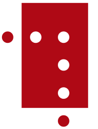

8.256 Wikipedia articles in 148 languages in which images from Category:Images from Nasjonalbiblioteket are used, grouped by language
This overview is based on this XML output of the GLAMorous tool d.d. 01-03-2024.
It was generated using the GLAMorousToHTML code.
Also see the documentation of this tool.
This data is also available as an Excel file. More structured data formats (csv, json) will be added in the future.
Available languages
Nynorsk (2.509)
English (1.017)
Nynorsk (544)
Swedish (499)
German (316)
French (289)
Russian (257)
Danish (238)
Spanish (158)
Egyptian Arabic (156)
Polish (154)
Dutch (144)
Czech (136)
Italian (136)
Finnish (131)
Ukrainian (122)
Arabic (94)
Eastern Armenian (78)
Catalan (77)
Persian (75)
Portuguese (67)
Hebrew (63)
Japanese (48)
Romanian (48)
Serbian (36)
Cebuano (35)
Chinese (35)
Esperanto (34)
Basque (33)
Belarusian (32)
Turkish (32)
Greek (30)
South Azerbaijani (29)
Slovene (28)
Hungarian (27)
Indonesian (24)
Macedonian (24)
Standard Estonian (24)
Vietnamese (24)
Bulgarian (22)
Korean (19)
Asturian (17)
Galician (17)
Icelandic (17)
Latin (15)
Welsh (14)
Azerbaijani (13)
Georgian (13)
Lithuanian (12)
Uzbek (11)
West Frisian (11)
Afrikaans (9)
Bangla (8)
Kazakh (8)
Kotava (8)
Latvian (8)
Bashkir (7)
Irish (7)
Malayalam (7)
Punjabi (7)
Serbo-Croatian (7)
Slovak (7)
Tatar (7)
Urdu (7)
Cantonese (6)
Inari Sami (6)
Malay (6)
Thai (6)
Croatian (5)
Faroese (5)
Tamil (5)
Chechen (4)
Hausa (4)
Hindi (4)
Ido (4)
Kurmanji (4)
Sorani (4)
Waray (4)
Western Armenian (4)
Albanian (3)
Interlingua (3)
Kyrgyz (3)
Low Eastern Saxon (3)
Mingrelian (3)
Scots (3)
Southern Quechua (3)
Aragonese (2)
Bavarian (2)
Breton (2)
Kannada (2)
Kinyarwanda (2)
Ladin (2)
Ligurian (2)
Limburgish (2)
Lingua Franca Nova (2)
Malagasy (2)
Mazanderani (2)
Minnan (2)
Mongolian (2)
Occitan (2)
Pashto (2)
Piedmontese (2)
Swahili (2)
Tagalog (2)
Tajik (2)
Telugu (2)
Turkmen (2)
Alemannic (1)
Bhojpuri (1)
Bosnian (1)
Burmese (1)
Central Bikol (1)
Chuvash (1)
Classical Chinese (1)
Cornish (1)
Corsican (1)
Crimean Tatar (1)
Haitian Creole (1)
Hakka Chinese (1)
Ilocano (1)
Javanese (1)
Kabiye (1)
Kabyle (1)
Kapampangan (1)
Karachay-Balkar (1)
Karakalpak (1)
Lezgian (1)
Luxembourgish (1)
Maltese (1)
Manx (1)
Marathi (1)
Mirandese (1)
Nepali (1)
Northern Sami (1)
Odia (1)
Oromo (1)
Ossetian (1)
Sanskrit (1)
Santali (1)
Scottish Gaelic (1)
Shona (1)
Sindhi (1)
Tumbuka (1)
West Flemish (1)
Wu Chinese (1)
Yakut (1)
Yoruba (1)
Zhuang (1)
Nynorsk (2.509)
1._vesterlenske_infanteriregiment |
100-årsjubileet_for_Sarpsborgs_gjenopprettelse |
17._mai_(grunnlovsdag) |
2._vesterlenske_infanteriregiment |
Aalborg |
Aars_og_Voss’_skole |
Aasmund_Halvorsen_Vinje |
Aasmund_Olavsson_Vinje |
Abbediengen |
Abelhaugen |
Abelmonumentet |
Adal_stasjon |
Adamsfossen |
Adelaide_Johanne_Thekla_Isidore_Wedel-Jarlsberg |
Administrasjonsrådet |
Adolph_Tidemand |
Agathe_Grøndahls_gate_(Oslo) |
Agatunet |
Agnar_Mykle |
Agnes_Hiorth |
Agnordal |
Ahus_Stensby_sykehus |
Akerselva |
Akersgata_(Oslo) |
Akershus |
Akershus_slott_og_festning |
Akershus_stiftamt |
Akershusiske_ridende_jegerkorps |
Akershusiske_skarpskytterregiment |
Akerøy_fort |
Akevitt |
Akkerhaugen_stasjon |
Albert_Armitage |
Albert_Møller |
Alby_gård |
Aleksander |
Alexander_Kielland |
Alexandra_hotell |
Alf_Prøysen |
Alfred_Lagerheim |
All_makt_skal_samles_i_denne_sal |
Allmenning_(gater) |
Allround-NM_på_skøyter_1916 |
Allround-NM_på_skøyter_junior |
Allround-VM_på_skøyter_1935,_menn |
Alnestinden |
Alpelue |
Alt_for_Norge |
Alterskap |
Alunverket |
Alv_Knutsson |
Alvilde_Prydz |
Alvilde_Torp |
Amalie_Skram |
An_die_Hoffnung |
Anders_Beer_Wilse |
Anders_Daae_(1838–1910) |
Anders_Sandvig |
Anders_Svor |
Andersnatten |
Andreas_Bloch |
Andreas_Botner |
Andreas_Kristian_Andersen_Grimsø |
Andreas_Martin_Seip |
Andreas_Samuel_Krebs |
Andresens_Bank |
Andsvatnet |
Anita_Augspurg |
Ankenes |
Ankenes_kirke |
Anker_(slekt) |
Anna_Bugge_Wicksell |
Anna_Caspari_Agerholt |
Anna_Hvoslef |
Anna_Rogstad |
Anna_Tronds |
Anne_Grimdalen |
Anne_Holsen |
Anne_Kure |
Anne_Kures_sti_(Oslo) |
Annet_trondhjemske_infanteriregiment |
Annie_Furuhjelm |
Antarctic-ekspedisjonen_1894–95 |
Anton_Christian_Houen |
Anton_Eriksen |
Anton_Marentius_Hermo |
Apothekernes_Laboratorium |
Arctanderbyen |
Arctic_Coal_Company |
Aremark_kirke |
Arendal |
Arendal_kirkegård |
Arendalsgata_(Oslo) |
Arild_Hamsun |
Arkitekturåret_1910 |
Arkitekturåret_1971 |
Armand_Fallières |
Arne_Hovde |
Arne_Kildal |
Arne_Smeland |
Arneberg_(Åsnes) |
Arneberg_stasjon |
Arnold_Ræstad |
Arnstein_Arneberg |
Arnulf_Øverland |
Artillerie-Corpset |
Asbjørn_Elgstøen |
Asbjørn_Støholen |
Asbjørnsenselskapet |
Asiatisk_Kompagni |
Ask_stasjon |
Askeladden |
Asker |
Asker_(bygd) |
Askim |
Askim_(tettsted) |
Askim_Gummivarefabrik |
Aslaug_Vaa |
Asta_Lie_Isaachsen |
Astrid,_fru_Ferner |
Atneosen |
Audnedal |
Aufles_holdeplass |
Aulestad |
Auma_stasjon |
Aurdal |
Aurdal_stasjon |
Aure_(Sykkylven) |
Aurlandssko |
Auronasa |
Aurskog_stasjon |
Avaldsnes_kirke |
Avisåret_1862 |
Avisåret_1920 |
Axel_Drolsum |
Axel_Lindahl |
Axel_Revold |
Bab_Christensen |
Backer |
Badderen |
Badegjest |
Badeparken_(Sandefjord) |
Bakke_(Vest-Agder) |
Balders_gate_(Oslo) |
Balestrand |
Baltikums_adel |
Bandak–Norsjøkanalen |
Barnas_dag |
Barnevogn |
Bastøy_skolehjem |
Beinflørting |
Beitstad |
Bekkelagshøgda |
Bekkestua_stasjon |
Beksømstøvler |
Bellevuehøyden |
Berby |
Berekvam_stasjon |
Berg-og-dal-bane |
Bergans_fritid |
Bergen |
Bergen_Børs |
Bergenhus_regiment |
Bergens_Teatermuseum |
Bergens_historie |
Bergensbanen |
Bergensbrannen_1916 |
Bergensskolen_i_arkitektur |
Berger_skole_(Nesodden) |
Bergliot_Ibsen |
Berit_Pynten |
Bernhard_Rostad |
Bernt_Bentsen |
Bernt_Eriksen_Orning |
Bernt_Støylen |
Bernt_Sverdrup_Maschmann |
Besserudtjernet |
Bestum |
Betafo |
Bibliofilklubben |
Bilthuggertangen |
Birger_Braadland |
Birkelunden |
Bislett |
Bispegata_(Oslo) |
Bjarne_Brustad |
Bjerke_Travbane |
Bjoa_kirke |
Bjølsen_skole |
Bjølstad_gård |
Bjørkelangen_stasjon |
Bjørkeris |
Bjørn_Berg |
Bjørn_Bjørnson |
Bjørn_Bogetvedt |
Bjørn_Helland-Hansen |
Bjørnerud_stasjon |
Bjørnholt_(Nordmarka) |
Bjørnstad_stasjon |
Bjørnstjerne_Bjørnson |
Bjørvika |
Blaker_skanse |
Blaker_stasjon |
Blindern_Studenterhjem |
Blommenholm_og_Sandvika_Tennisklubb |
Blomstrandbreen |
Blyberghaugen |
Blytts_gate_(Oslo) |
Bodøgård |
Bodøsaken |
Bognes |
Bogstad_Camping |
Bogstadveien_(Oslo) |
Bokmål |
Boksing |
Bolkesjø |
Bolstadfjorden |
Bomveien_(Oslo) |
Bondalen |
Bondeøks |
Bonnevie_(slekt) |
Bonnevieprisen |
Borgarsyssel_museum |
Borgerrepresentantene_i_Christiania_–_de_12_eligerede_menn |
Borgund_kirke_(Sogn_og_Fjordane) |
Borgund_kirke_(Ålesund) |
Borgund_stavkirke |
Bossekop |
Boydell’s_picturesque_scenery_of_Norway |
Bragernes_torg |
Brand |
Brannen_i_Colosseum_kino_1963 |
Brannen_i_Grue_kirke |
Brannen_i_Hegdehaugsveien_32 |
Brannkonstabel |
Braskereidfoss |
Brattlandsdalen |
Bredo_Greve_(arkitekt) |
Breifonna_(Stryn) |
Breim_gamle_kirke |
Breimsvassdraget |
Breimsvatnet |
Breitinden_(Rauma) |
Brekke_sluser |
Brennevinsforbudet |
Brevik |
Briskebyveien_(Oslo) |
Britannia_Hotel |
Broch_(slekt) |
Brochmann_(slekt) |
Broen_i_Vigelandsanlegget |
Brud |
Brudeferd_i_Hardanger |
Brudekrone |
Brumunddal |
Brumunddal_stasjon |
Bruraskaret |
Bryllup |
Bryn_stasjon |
Brynjulf_Larsson |
Bryting |
Brønn |
Buarbreen |
Budeie |
Bulken_stasjon |
Bunad |
Bybrannen_i_Ålesund_1904 |
Bybrua_(Drammen) |
Bygdøy |
Bygningene_i_friluftsmuseet_på_Norsk_Folkemuseum |
Bygstad_kirke |
Byparken_(Sandefjord) |
Bytårnet_(Moss) |
Byutvidelser_i_Oslos_historie |
Bål |
Båntjern |
Bærum_sykehus |
Bærums_Skiklub |
Bødtker |
Bøgh |
Bøkker |
Børge_Olsen-Hagen |
Børre_Henrik_Børresen |
Børsbygningen_i_Bergen |
Børsen_(Oslo) |
Børsparken |
Bøverdal_kirke |
Camilla_Collett |
Camilla_Colletts_vei_(Oslo) |
Camilla_Wiese |
Cantico_di_Ringraziamento |
Carl_Anton_Bjerknes |
Carl_Arnold |
Carl_Berner |
Carl_Cederström |
Carl_Christian_Wischmann |
Carl_Emil_Krefting |
Carl_Gustaf_Armfeldt |
Carl_Huitfeldt |
Carl_Ludvig_Jacobsen |
Carl_Lumholtz |
Carl_Lundh |
Carl_Normann |
Carl_Otto_Løvenskiold |
Carl_Schulz |
Carl_Struve |
Carl_Størmer |
Carl_von_Ossietzky |
Carrie_Chapman_Catt |
Carsten_Anker |
Carsten_Anker-monumentet |
Carsten_Tank |
Carte_de_visite |
Cato_Guldberg |
Centralbanken_for_Norge |
Centralteatret |
Charlottenlund_(Trondheim) |
Chaussé |
Chr._Bjelland_&_Co |
Christen_Krog |
Christian_Fredrik_Michelet |
Christian_II_av_Danmark,_Norge_og_Sverige |
Christian_Krohg |
Christian_Krohgs_gate_(Oslo) |
Christian_Magnus_Falsen |
Christian_Michelsen |
Christian_Michelsens_gate_(Bergen) |
Christian_Michelsens_regjering |
Christian_Olsen |
Christian_Olsen_Thon |
Christian_Rakovskij |
Christian_Samuel_Eyde |
Christian_Tønsberg |
Christiania/Kristiania |
Christiania_Dampkjøkken |
Christiania_Seildugsfabrik |
Christiania_Tivoli |
Christiestøtten |
Christoffer_Trondsen |
Christopher_Hansen_Blom |
Christopher_Hansteen_(astronom) |
Christopher_Hornsruds_regjering |
Christopher_Knudsen |
Cirkus_Empress |
Claes_Gill |
Claire_Mjøen |
Clara_Tschudi |
Claus_Pavels_Riis |
Claus_Peter_Knudsen |
Colin_Archer |
Colletts_bro |
Colosseum_kino |
Colt_mitraljøse_m/29 |
Conrad_Nicolai_Schwach |
Cora_Sandel |
Cort_Adelers_gate_(Oslo) |
Curt_Bräuer |
Cæciliaforeningen |
DS_«Alden» |
DS_«Askøy»_(1912) |
DS_«Constitutionen» |
DS_«Dronning_Maud» |
DS_«Firda»_(1900) |
DS_«Kristianiafjord» |
DS_«Lyra» |
DS_«Mira» |
DS_«Oslo» |
DS_«Prins_Olav» |
DS_«Skibladner» |
DS_«Stavenes» |
DS_«Viking» |
Dagbladet |
Dagfin_Werenskiold |
Dagny_Bjørnson_Sautreau |
Dal |
Dal_stasjon |
Dale_kirke_(Luster) |
Dalen |
Dalsnibba |
Danebu |
Daniel_Georg_Nyblin |
Dansen_gjenom_skuggeheimen |
Dansk_Vestindia |
Danske_Artilleriregiment |
David_Arnesen |
David_Christopher_Frich |
David_Monrad_Johansen |
De_tre_bukkene_Bruse |
Deichman_bibliotek |
Deichmans_hovedbibliotek_på_Hammersborg |
Demarkasjonslinjen_i_1940 |
Den_Nationale_Legion |
Den_Nationale_Scene |
Den_Norske_Fjellskolen_Rondeheim |
Den_Norske_Løve_(orden) |
Den_Norske_Nobelkomite |
Den_bergenske_kongevei |
Den_gamle_stortingssalen |
Den_jarlsbergske_hovedvei |
Den_norske_Amerikalinje |
Den_norske_Amerikalinjes_hovedkontor |
Den_norske_Nordhavsekspedisjon_1876–78 |
Den_syvende_far_i_huset |
Det_Hvite_Bånd |
Det_Rivertzke_kvartal |
Det_Søndenfjelds-Norske_Dampskibsselskab |
Det_frivillige_Skyttervesen |
Det_norske_litrasystemet_i_jernbanen |
Det_sibirske_kompani |
Det_skandinaviske_selskab |
Detektivens_barnepike |
Di_3 |
Diabolo |
Diakonhjemmet_sykehus |
Dietrichson_(slekt) |
Digermulen |
Dikemark_sykehus |
Dikka_Møller |
Djupvatnet_(Stranda) |
Doblouggården_(1933) |
Dolstad_kirke |
Domkirkeruinene_på_Hamar |
Dompap |
Dore_Lavik |
Dorgefossen |
Douglas_Fairbanks |
Dovrehallen |
Down_Town_Key_Club |
Drammen |
Drammen_havn |
Drammen_rutebilstasjon |
Drammen_stasjon |
Drammen_videregående_skole |
Drammens_Børs |
Drammens_Jernstøberi |
Drammenselva |
Drammensfjorden |
Drammensveien_(Oslo) |
Drevsjø |
Drikkevise |
Drivhuseffekt |
Drolsum_stoppested |
Dronningen_(selskapslokale) |
Dronningens_utsikt_(Hole) |
Drøbak |
Drøbak_kirke |
Du_må_ikke_sove |
Dukketeater |
Dyna_fyr |
Dyrehodestolpene_i_Osebergfunnet |
Dælenenga |
Dødsfall_i_2009 |
Dødsfall_i_2014 |
Dødsfall_i_2015 |
Dødsmaske |
Dønnes_kirke |
Ebba_Haslund |
Edvard_Hagerup_Bull_(1855–1938) |
Edvard_Munch |
Edward_Backhouse |
Egertorget_(Oslo) |
Eggsentral |
Egne_hjem_stasjon |
Eidsberg_kirke |
Eidsberg_stasjon |
Eidsdal |
Eidsfos_Jernverk |
Eidsgata |
Eidsvoll |
Eidsvollsbygningen |
Eigerøy_bru |
Eikesdalsvatnet |
Eilert_Sundt |
Eilert_Sundts_gate_(Oslo) |
Einar_Bjørnson |
Einar_Gerhardsen |
Einar_Gerhardsens_første_regjering |
Einar_Landvik |
Eiterstraum_stoppested |
Eivind_Astrup_(1871–1895) |
Eivind_Groven |
Ekebergrestauranten |
Ekman_&_Smith |
Eksamen |
Eksingedalen |
Elbe–Lübeck-kanalen |
Elektrisk_lastebil |
Elgeseter_bru |
Eli_plass |
Ella_Anker |
Elling_Eielsen |
Ellinor_Hamsun |
Ellisif_Wessel |
Elly_Simonsen |
Else_Frölich |
Elsk_meg_bort_fra_min_bristende_barndom |
Elvegata_(Trondheim) |
Elverhøj_(skuespill) |
Elverum_folkehøgskule |
Elverumsfullmakten |
Emanuel_Vigeland |
Embetsmannsstaten |
Embret_Mellesmo |
Emil_Collett |
Emil_Kvanlid |
Emil_Lie |
Energi_i_Norge |
Enevold_Skaktavl |
Engebret_Soot |
Engebret_Soot_(1855–1913) |
Engerdal |
Enige_og_tro_inntil_Dovre_faller |
Epithalamion_(Valen) |
Erik_Glosimodt |
Erik_Knutsson_(Tre_Rosor) |
Erik_Ottesen_Orning |
Erik_Vullum |
Erika_Nissen |
Erling_Bjørnson |
Erling_Viksjø |
Ernest_Shackleton |
Ernst_Glaser |
Ernst_Sars |
Erotiske_folkeeventyr |
Espa_stasjon |
Espevær_bedehuskapell |
Et_dukkehjem |
Etikett |
Etnesjøen |
Europavei_136 |
Europavei_16_(Norge) |
Europavei_39_(Norge) |
Europavei_39_(Sogn_og_Fjordane) |
Europavei_39_(Vestland) |
Europavei_6_(Norge) |
Eva_Nansen |
Evangeliekirken_Bergen |
Evangervatnet |
Evje_kirke |
Eyvind_Alnæs |
Fabian_Gustaf_Norström |
Fagerstrand |
Fahlstrøms_Theater |
Falkensten |
Fana_kirke |
Fana_kommune |
Fanitullen |
Fantebrauta_tunnel |
Fartein_Valen |
Farøy |
Fauske_stasjon |
Faxe |
Faxe_kommune |
Feda |
Feda_(tettsted) |
Feda_kommune |
Fedreland |
Fedrelandslaget |
Fefor_Høifjellshotell |
Felle |
Felttoget_i_Trøndelag_i_1718 |
Femmila |
Ferdaminne_frå_sumaren_1860 |
Fergesambandet_Horten–Moss |
Ferie |
Ferje |
Ferjesambandet_Bognes–Lødingen |
Ferjesambandet_Svelvik–Verket |
Fernanda_Nissen |
Festiviteten_i_Skien |
Festningsplassen_(Oslo) |
Fet_prestegård |
Fidjetun_stasjon |
Filefjell |
Filmåret_1973 |
Filmåret_2012 |
Fingerkrok |
Finlandshjelpen |
Finnan |
Finneidfjord_stasjon |
Finse |
Fiskevollen_holdeplass |
Fitjavatnet |
Fjeldfuglen |
Fjellsetra_(Trondheim) |
Fjordbåt |
Fjordferge |
Fjordsjø |
Fjotland |
Fjære_kirke |
Flagget |
Flatanger_prestegjeld |
Fleischer’s_Hotel |
Flekkefjord_kirke |
Fleskhus_stoppested |
Flikkeid_stasjon |
Flosshatt |
Flukten_fra_Oslo_etter_9._april_1940 |
Flyfoto |
Flyktningkrisen_i_1921 |
Flå_stasjon |
Flåm_stasjon |
Flåmsbana |
Flåmselvi |
Fløysvingene |
Folkeforbundet |
Folketeatret_(1952–1959) |
Fonograf |
Fontenen_i_Vigelandsanlegget |
Forbudstiden |
Fornøyelsespark |
Fossum_bru |
Fotografi |
Fotokrom |
Fougner_(slekt) |
Fra_gutt_til_mann |
Framekspedisjonen |
Framheim |
Francis_Bull |
Frede_Castberg |
Freden_i_Roskilde |
Frederik_Hilfling-Rasmussen |
Frederik_Klem |
Frederik_Ludvig_Vibe |
Fredrich_Christian_Holberg_Arentz |
Fredrik_August_Wessel-Berg |
Fredrik_Meyn |
Fredrikke_Marie_Qvam |
Fredrikke_Nielsen |
Fredrikke_Waaler |
Fredriksberg_fort |
Fredriksodde |
Fredrikstad_Mekaniske_Verksted |
Fredrikstad_tollbod |
Frenologi |
Fridtjof_Nansen |
Fridtjof_Nansens_vei_(Bærum) |
Frigjøringsdagen_(Norge) |
Friluftsliv |
Frisinnede_Venstre |
Fritz_Heinrich_Frølich |
Fritzøehus |
Frogner_skole_(Oslo) |
Frogner_stadion |
Frognerbadet |
Frognerkilen |
Frognerseteren |
Frognerseteren_stasjon |
Frognerseterveien_(Oslo) |
Frøen |
Frøken |
Frønsvollen |
Fuglenes |
Funny_Boys |
Fylkesting |
Fylkesvei_1941 |
Fylkesvei_217 |
Fylkesvei_219 |
Fylkesvei_222 |
Fylkesvei_55 |
Fylkesvei_5994 |
Fylkesvei_63 |
Fyllinga |
Fåbro |
Færder |
Færder_fyr |
Fødselsstiftelsen_i_Christiania |
Følling_kirke |
Førde_(kommune) |
Førde_kirke_(Førde) |
Førre |
Første_trondhjemske_infanteriregiment |
Første_verdenskrig |
Gabels_gate_(Oslo) |
Gabriel_Scott |
Gabriel_Tischendorf |
Galtung |
Gamle_Aker_kirke |
Gamle_Asker_kirke |
Gamle_Bergen_hovedbrannstasjon |
Gamle_Dyrskartunnel |
Gamlebyen_(Oslo) |
Gamlebyen_skole |
Gardermoen_flystasjon |
Gauldalsraset |
Gaupne_gamle_kirke |
Gaustatoppen |
Geiranger |
Geiranger_kirke |
Geirangerelva |
Geirangervegen |
Geitabru |
Geithus |
Geithus_bru |
Generalforsamling |
Georg_Antonius_Brustad |
Georg_Ossian_Sars |
Georg_Sibbern |
Georg_Stang |
Georg_Valentin_von_Munthe_af_Morgenstierne |
Georg_Østerholt |
Gerd_Grieg |
Gerhard_Henrik_Armauer_Hansen |
Gerhard_Munthe |
Gerhard_Munthe_(1919–1997) |
Gerhard_Schøning |
Gimmestad_gamle_kirke |
Gina_Oselio |
Gisken_Wildenvey |
Gjeble_Pederssøn |
Gjelleråsen |
Gjemsø_kloster |
Gjerpen_(Skien) |
Glatveds_Hotel |
Glemmen |
Glittertinden |
Glomfjord |
Glomfjord_kirke |
Godfred_Hansen |
Godlia |
Godlia_hageby |
Godthaab |
Goðafoss |
Grafferbunad |
Gran_(slekt) |
Grand_Hotel_(Oslo) |
Granum_(Fluberg) |
Granvin |
Grasdøla_(Stryn) |
Grav_(Bærum) |
Grav_skole |
Graverens_Teglverk |
Gravfølge |
Gravhalstunnelen |
Gravøl |
Grefsen_Folkesanatorium |
Grefsenåsen_kapell |
Gregorius_Gravlid |
Grensevakt |
Greve_(slekt) |
Grevskapet_Samsøe |
Greåker_stasjon |
Grimstadbanen |
Grinddalsfossen |
Grinder |
Grindheim |
Grip |
Grip_fyr |
Groruddalen |
Grunge_kirke |
Grungedal |
Grytten_kirke |
Grønlands_torg_(Oslo) |
Grønnbyen |
Grønvollfoss_stasjon |
Grønøy |
Grøttørbrua |
Gud_signe_vårt_dyre_fedreland |
Gudbrand_Skatteboe |
Gudbrandsdalsbanen |
Gudbrandsdalslågen |
Gudvangen |
Gudå |
Gulbrand_Lunde |
Guldbergs_Akademiske_Kor |
Gullsmedvik_stasjon |
Gulltransporten |
Gunnar_Hermansen |
Gunnar_Holmsen |
Gunnar_Knudsen |
Gunnar_Sætren |
Gunnar_Sønstevold |
Gunnar_Utsond |
Gustaf_Fröding |
Gustav_Borgen |
Gustav_Jensen |
Gustav_Vigeland |
Gårdsnisse |
H._Meyers_Trikotasjefabrikk |
Haakon_VII |
Hagbart_Berner |
Hagbart_Haakonsen |
Hageby |
Haglebu |
Haglebuslaget |
Haider_Ali |
Hakapik |
Hakekors |
Halden |
Halden_stadion |
Halden_sykehus |
Halfdan_Cleve |
Hallstein_Sundet |
Hallvard_Vebjørnsson |
Halse_og_Harkmark |
Halvdan_Koht |
Halvdanshaugen_på_Stein |
Halvor_Emil_Heyerdahl |
Hamar_stadion |
Hamarøyskaftet |
Hankø |
Hanna_Resvoll-Holmsen |
Hans_Aanrud |
Hans_Christian_Petersen |
Hans_Christopher_Gedde |
Hans_Ditlev_Franciscus_von_Linstow |
Hans_E._Kinck |
Hans_Heinrich_Jess |
Hans_Henrik_Holm |
Hans_Ingelsrud |
Hans_Jacob_Grøgaard |
Hans_Krum |
Hans_Latza |
Hans_Lauritzen |
Hans_Lauritzen_Blix |
Hans_Majestet_Kongens_Gardes_historie |
Hans_Mustad |
Hans_Rasmus_Astrup_(1831–1898) |
Hans_Strøm |
Hansa_bryggeri |
Hansteen_(slekt) |
Hansteens_gate_(Oslo) |
Harald_Bertrand |
Harald_Bothner |
Harald_Dal |
Harald_Grieg |
Harald_Hardråde |
Harald_L._Tveterås |
Harald_V |
Haraldshaugen |
Harbitz_(slekt) |
Hardanger |
Hardangerbana |
Hardangerbunad |
Hardangerfjorden |
Hardangerjøkulen |
Harmonien_(bygning) |
Harpun |
Harriet_Backer |
Harstad |
Harstad_(by) |
Hartvig_Knudssøn_Bille |
Hartvig_Nissen |
Hartvig_Nissens_skole |
Haslemo_stasjon |
Haslum_stasjon |
Hattfjelldal_kirke |
Hauerseter_stasjon |
Haug_skole_og_ressurssenter |
Haugesund_rådhus |
Haugfossen |
Haukeliekspressen |
Hausmanns_bru |
Havbruk |
Have_Germanerne_invandret_til_Skandinavien_fra_nord_eller_fra_syd? |
Heddal_stavkirke |
Hedemarksbanen |
Hegdehaugsveien_(Oslo) |
Heggedal_stasjon |
Heidmanns_gate_(Hamar) |
Heinrich_Jacob_Goldschmidt |
Heisekran |
Helhest |
Helldalsmo_stasjon |
Hellebard |
Hemnes_(Aurskog-Høland) |
Hemnes_stasjon |
Hen_(Rauma) |
Hen_fangeleir |
Hengebrua_(Atna) |
Hengedal |
Henny_Skjønberg |
Henrik_Angell |
Henrik_Backer |
Henrik_Greve_Blessing |
Henrik_Ibsen |
Henrik_Ibsens_gate_(Oslo) |
Henrik_Jørgen_Huitfeldt-Kaas |
Henrik_Lindstrøm |
Henrik_Sørensen |
Herman_Frangs_gate |
Herman_Friele_(1838–1921) |
Herman_Semmelmann |
Herman_Severin_Løvenskiold_(hoffsjef) |
Herman_Treschow |
Herman_Wildenvey |
Hermann_Christian_Neupert |
Hermetikk |
Hernes |
Herredshuset_på_Jessheim |
Hersleb_skole |
Hestevogn |
Hidra_kirke |
Himmelseng |
Historisk_museum |
Historiske_kart_over_Norge |
Hitra |
Hjalmar_Johansen |
Hjalmar_Kjerulf |
Hjalmar_Pettersen |
Hjalmar_Welhaven |
Hjartdal_kirke |
Hjellum_stasjon |
Hjelmtegn |
Hjemmebrent |
Hjørnesteinsbedrift |
Hobøl_gård |
Hoemsbrua |
Hoff_terrasse_(Oslo) |
Hokksund |
Hokksund_bru |
Hokksund_stasjon |
Holden_hovedgård |
Holger_Nielsens_metode |
Holla |
Holla_kirkeruin |
Holmenkollen_Turisthotel |
Holmestrand |
Holocaust_i_Norge |
Holsbrua |
Holt_(Tvedestrand) |
Holtegata_(Oslo) |
Holtet_hageby |
Hopsfossen_kraftverk |
Hordaland |
Horngården |
Hornindalen |
Hornindalsvatnet |
Hornlue |
Horten_Verft |
Horten_sykehus |
Hospitsveien_(Oslo) |
Hotel_Alexandra |
Hotel_Kong_Carl |
Hotel_Mundal |
Hotel_Norge_(Bergen) |
Hotel_Norge_Høsbjør |
Hotel_Viking |
Hovedbanen |
Hovedportalen_i_Vigelandsanlegget |
Hovsfoss |
Huitfeldt |
Huitfeldts_gate_(Oslo) |
Hulda_Garborg |
Hungersnøden_i_Russland_1921–1922 |
Hurrungane |
Husdyr |
Hvaler_(kommune) |
Hvalsmoen_leir |
Hvalstrand_bad |
Hvam_videregående_skole |
Hvitsymre_i_utslåtten |
Hvoslef |
Hydro_Energi |
Hydrobygget |
Hydroparken |
Håkon_Five |
Håkon_Jarls_gate_(Trondheim) |
Hårknute |
Hårnålssving |
Høgskolebrua |
Høgskolen_i_Innlandet,_studiested_Blæstad |
Hønefoss |
Hønefoss_bru |
Hørsand_stasjon |
Høy |
Høybråten_skole |
Ildjernet |
Ildsted |
Ilen_kirke |
Illustreret_Tidende |
Immatrikulering |
Industrigata_(Oslo) |
Inge_Krokann |
Ingeborg_Motzfeldt_Løchen |
Ingelbrecht_Knudssøn |
Ingeniørkorpset |
Ingier_(slekt) |
Ingierstrand_bad |
Ingvald_Schey |
Ingvar_Langlien |
Innfjorden |
Innfjordtunnelen |
Innføring_av_kvinnelig_stemmerett_i_Norge |
Innhavet |
Innholmtunnelen |
Innvik |
Innvik_kirke |
Institutt_for_historiske_studier_(NTNU) |
Inuitter |
Is |
Isak_Jørgen_Coldevin |
Isdrift |
Iuellsklev_(Arendal) |
Ivar_Aasen |
Ivar_Aavatsmark |
Ivar_Otto_Irgens_Mogstad |
Iver_Hirtzholm |
J.C._Heuch |
Ja,_vi_elsker_dette_landet |
Jac_Brun |
Jacob_Aall |
Jacob_Aalls_gate_(Oslo) |
Jacob_Hegel |
Jacob_Hilditch |
Jacob_Nicolai_Wilse |
Jacob_S._Worm-Müller |
Jacob_Ziegler |
Jakob_Schøning |
Jarlsberg_(gods) |
Jazz_i_Norge |
Jens_Andreas_Friis |
Jens_Christian_Hauge |
Jens_Dunker |
Jens_Ferdinand_Willumsen |
Jens_Lieblein |
Jens_Munthe_Svendsen |
Jens_Rolfsen |
Jens_Westly |
Jernbanealleen_(Sandefjord) |
Jernbanetorget_(Oslo) |
Jessheim |
Jessheim_stasjon |
Jessnes_stasjon |
Jesuittparagrafen |
Jo_Gjende |
Jobergtunnelen |
Johan_Alfred_Svendsen |
Johan_Borgen |
Johan_Bøgh |
Johan_Daniel_Stub_Landmark |
Johan_Diederich_Behrens |
Johan_Falkberget |
Johan_Fjeldsted_Dahl |
Johan_Frederik_Vinsnes |
Johan_Gunnar_Andersson |
Johan_Hennum |
Johan_Jacob_Bennetter |
Johan_Kristoffersen |
Johan_Lausen_Bull |
Johan_Ludwig_Mowinckels_andre_regjering |
Johan_Ludwig_Mowinckels_tredje_regjering |
Johan_Nygaardsvolds_regjering |
Johan_Peter_Weisse |
Johan_Sebastian_Welhaven |
Johan_Selmer |
Johan_Svendsen |
Johan_Sverdrup |
Johan_Theodor_Landmark |
Johan_Thorne |
Johan_von_der_Fehr |
Johannes_Steens_andre_regjering |
Johannes_kirke |
John_Theodor_Lund |
John_Utheim |
John_William_Edy |
Johs._Andenæs |
Jomfruland_nasjonalpark |
Jon_Alfred_Mjøen |
Jon_Leirfall |
Jon_Snersrud |
Jon_Tvedte |
Jonas_Lie |
Jonas_Lie_(1899–1945) |
Jonas_Lied |
Jordalen |
Jordskred |
Josefines_gate_(Oslo) |
Joseph_Frantz_Oscar_Wergeland |
Joseph_Grimeland |
Jostedalsbreen |
Jotunheimen |
Jubileumsutstillingen_på_Frogner_1914 |
Jul |
Julebukk |
Julegate |
Julekort |
Juletre |
Julli_Wiborg |
Junkerdalen |
Justaucorps |
Jøder_i_Norge |
Jølstra |
Jønsberg_videregående_skole |
Jørgen_Berner |
Jørgen_Brunchorst |
Jørgen_Henrik_Hegermann_Brochmann |
Jørgen_Løvland |
Jørgen_Moe |
Jørgen_Moes_vei_(Hole) |
Jørgen_Stubberud |
KNA-hotellet_i_Oslo |
KS_«Heimdal»_(1892) |
Kaare_Støylen |
Kabelferge |
Kalott |
Kambo |
Kampen_park |
Kampen_skole_(Oslo) |
Kanalbrua_(Moss) |
Kanalen_i_Horten |
Kantstein |
Kapitulasjonsavtalen_1940 |
Karen_Grude_Koht |
Karjol |
Karl_Edvard_Diriks |
Karl_Ernst_von_Baer |
Karl_III_Johan |
Karl_Johan-monumentet |
Karl_Johans_gate |
Karl_Knutsson_(Tre_Rosor) |
Karl_Konow |
Karl_Marthinsen |
Karl_Norbeck |
Karl_Uchermann |
Karlebotn_kapell |
Karlstadforhandlingene |
Karoline_Bjørnson |
Kathrine_Lie |
Katnoselva |
Katti_Anker_Møller |
Kaupanger_stavkirke |
Kikutstua |
Kinnar-Sandfjorden |
Kinnskjegg |
Kirkefjerdingen_skole_(Tjølling) |
Kirkegården_ved_havet |
Kirkehamn |
Kirkestriden |
Kirketorget_(Kongsberg) |
Kiromanti |
Kirsten_Flagstad |
Kistenuten |
Kjeller_FF9_Kaje |
Kjeller_Flyfabrikk |
Kjelsås_stasjon |
Kjemisk_institutt_(UiO) |
Kjemåga_holdeplass |
Kjenge |
Kjetta_på_Dovre |
Kjosen_(Ullsfjord) |
Kjosfoss_kraftverk |
Kjølbergs_plass_(Oslo) |
Kjøpstad |
Kjøs_bru |
Klara_Semb |
Klaveness_(slekt) |
Kleivstua |
Klevfos_Cellulose-_&_Papirfabrikk |
Klippfisk |
Kløfta |
Kløfta_stasjon |
Kløv_(transport) |
Knapstad_stoppested |
Knud_Knudsen_(fotograf) |
Knudaheio |
Knut_Alvsson |
Knut_Hamsun |
Knuten_(vei) |
Kolera |
Kolonien_holdeplass |
Kommandantboligen_(Trondheim) |
Kon-Tiki_ekspedisjonen_(bok) |
Konduktør |
Konfirmasjon |
Kong_Bele |
Kong_Øystein-statuen |
Kongen_(klubbhus) |
Kongens_utsikt |
Kongevegen_over_Filefjell |
Konglungen |
Kongsberg |
Kongsseteren |
Kongsten_fort |
Konow |
Konsmo |
Kontor |
Kontraskjæret |
Kornbånd |
Kornoppløpet_i_Arendal_1813 |
Kors_kirke |
Kortevarer |
Kragerø |
Kragerø_kirke |
Kravatt |
Krigsgenerasjonen |
Kringkastingshuset |
Kringsjå_(Oslo) |
Krinoline |
Kristelig_Gymnasium |
Kristian |
Kristian_Birkeland |
Kristian_Friis_Petersen |
Kristian_Hovde |
Kristian_Kristiansen_(grønlandsfarer) |
Kristian_Prestrud |
Kristian_Strøm |
Kristian_Winterhjelm |
Kristiania_Læseforening_for_Kvinder |
Kristiansand |
Kristiansand_folkebibliotek |
Kristiansund |
Kristine_Bonnevie |
Kristofer_Lehmkuhl |
Kristofer_Uppdal |
Krokket |
Krokkleiva |
Krokstrand |
Krokstrand_holdeplass |
Kroksund |
Kroksund_bru |
Kronborg_slott |
Kronprinsesse_Märthas_allé |
Krossobanen |
Kråkerøy |
Kubbestol |
Kulturhistorisk_museum |
Kulturslottet_Soria_Moria |
Kunstnernes_Hus |
Kunståret_1845 |
Kunståret_1932 |
Kvalfors_stasjon |
Kvalsundskipet |
Kvam_(tettsted) |
Kvamskleiva |
Kvener |
Kvernen_som_maler_langsomt |
Kviknes_Hotel |
Kvinesdal_kirke |
Kvinnebunad_fra_Øst-Telemark_(raudtrøye) |
Kvås |
Kykkelsrud_kraftverk |
Kylling_bru |
Kystmuseet_Hvaler |
Kåfjord_(Alta) |
Kåfjord_kirke_(Alta) |
Kåfjord_kobberverk |
Kårdalstunnelen |
Kåre_Siem |
La_Isla_de_las_Calmas |
Labrofossen |
Lafteverk |
Lagertha_Broch |
Lahaugmoen_leir |
Laks |
Laksfors_stasjon |
Lalla_Carlsen |
Lallakroken_(Oslo) |
Lambertseter_senter |
Landeeika |
Landhandel |
Landmåling |
Landnot |
Landsutstillingen_i_Bergen_1928 |
Landtoning |
Landvikvannet |
Lange_(etternavn) |
Langeleik |
Langfossen |
Langsævannet |
Larkollen |
Lars_Holst |
Lars_Jorde |
Lars_Thorstensen_Tønsager |
Lars_Vegard |
Larvik |
Lavvo |
Leangkollen |
Lebensborn |
Leiegårdene_i_Oslos_historiske_murby |
Leif_Slagtern |
Leirskredet_i_Sokkelvika_i_1959 |
Leirvassbu |
Lekterferge |
Lenvik_kirke |
Lenvik_prestegjeld |
Lesja |
Lesjaskog_kirke |
Liberté,_égalité,_fraternité |
Lier |
Lierfoss_stasjon |
Likklede |
Liknes |
Likvake |
Lille_Presteskjær_fyr |
Lille_Øvregaten |
Lillebil_Ibsen |
Lillehammer_Skiklub |
Lilleskagen |
Lillestrøm_stasjon |
Lincolnmonumentet |
Lindesnes_fyr |
Lismarka |
Liste_over_Den_Norske_Nobelkomites_medlemmer |
Liste_over_Norges_kirke-_og_undervisningsministre |
Liste_over_Norges_landskamper_i_fotball_for_herrer_1915–1919 |
Liste_over_Norges_landskamper_i_fotball_for_herrer_1920–1924 |
Liste_over_Norges_revisjonsministre |
Liste_over_Norges_statsministre |
Liste_over_båter_som_har_trafikkert_Telemarkskanalen |
Liste_over_eidsvollsmenn |
Liste_over_elver_i_Trøndelag |
Liste_over_forfattere_i_Norsk_Salmebok_2013 |
Liste_over_kirker_i_Finnmark |
Liste_over_kirker_i_Nordland |
Liste_over_kirker_i_Rogaland |
Liste_over_kirker_i_Telemark |
Liste_over_kirker_i_Troms |
Liste_over_kirker_i_Trøndelag |
Liste_over_kirker_i_Vestland |
Liste_over_kulturminner_i_Asker |
Liste_over_kulturminner_i_Bygland |
Liste_over_kulturminner_i_Dovre |
Liste_over_kulturminner_i_Elverum |
Liste_over_kulturminner_i_Flatanger |
Liste_over_kulturminner_i_Fredrikstad |
Liste_over_kulturminner_i_Gran |
Liste_over_kulturminner_i_Hamar |
Liste_over_kulturminner_i_Hole |
Liste_over_kulturminner_i_Hvaler |
Liste_over_kulturminner_i_Kongsvinger |
Liste_over_kulturminner_i_Lillehammer |
Liste_over_kulturminner_i_Lillestrøm |
Liste_over_kulturminner_i_Marka_(Oslo) |
Liste_over_kulturminner_i_Meløy |
Liste_over_kulturminner_i_Moss |
Liste_over_kulturminner_i_Narvik |
Liste_over_kulturminner_i_Nordre_Follo |
Liste_over_kulturminner_i_Notodden_kommune |
Liste_over_kulturminner_i_Ringerike |
Liste_over_kulturminner_i_Sel |
Liste_over_kulturminner_i_Selbu |
Liste_over_kulturminner_i_Senja |
Liste_over_kulturminner_i_Sentrum_(Oslo) |
Liste_over_kulturminner_i_Stange |
Liste_over_kulturminner_i_Steigen |
Liste_over_kulturminner_i_Steinkjer |
Liste_over_kulturminner_i_Stryn |
Liste_over_kulturminner_i_Tjeldsund |
Liste_over_kulturminner_i_Ullensaker |
Liste_over_kulturminner_i_Valle |
Liste_over_kulturminner_i_Vindafjord |
Liste_over_kulturminner_i_Vinje |
Liste_over_kulturminner_i_Vågan |
Liste_over_kulturminner_i_bydel_Stovner |
Liste_over_kunstverk_på_norske_frimerker |
Liste_over_mottakere_av_Nobels_fredspris |
Liste_over_nasjonalparker_i_Norge |
Liste_over_ordførere_i_Heim_(tidligere_kommune) |
Liste_over_ordførere_i_Lillehammer |
Liste_over_ordførere_i_Vossestrand |
Liste_over_ras_i_Norge |
Liste_over_stasjoner_på_T-banen_i_Oslo |
Liste_over_stortingsrepresentanter_for_Nord-Trøndelag |
Liste_over_stortingsrepresentanter_for_Sør-Trøndelag |
Liste_over_stortingsrepresentanter_for_Tromsø |
Liste_over_stortingsrepresentanter_for_Trondheim_og_Levanger |
Lit_de_parade |
Litteraturåret_1818 |
Litteraturåret_1841 |
Litteraturåret_1846 |
Litteraturåret_1859 |
Litteraturåret_1860 |
Litteraturåret_1863 |
Litteraturåret_1870 |
Litteraturåret_1876 |
Litteraturåret_1878 |
Litteraturåret_1889 |
Litteraturåret_1902 |
Litteraturåret_1911 |
Litteraturåret_1918 |
Litteraturåret_1933 |
Litteraturåret_1938 |
Litteraturåret_1939 |
Litteraturåret_1953 |
Litteraturåret_1959 |
Litteraturåret_1961 |
Litteraturåret_1967 |
Litteraturåret_1968 |
Little_Norway |
Livshjulet_(Gustav_Vigeland) |
Lofotfiskets_historie |
Lofotjolle |
Loft_(bygning) |
Lofthusopprøret |
Logen_Teater |
Lom_stavkirke |
Lorang_Andersen |
Lorentz_Skougaard-Severini |
Lorgnett |
Losby_gods |
Losna_(innsjø) |
Louise_Abel |
Louise_Engen |
Louise_Qvam |
Lovatnet |
Lovisenlund_skole |
Ludo |
Ludvig_Bergh |
Ludvig_Daae |
Ludvig_Daae_Zwilgmeyer_(1855–1910) |
Ludvig_Forbech |
Ludvig_Wiese |
Ludwik_Szaciński |
Luftskip |
Luftskipet_«Norge» |
Luftskipshangaren_i_Ny-Ålesund |
Luktvatnet |
Lur |
Lurudal_stoppested |
Luster |
Lyrikkåret_1859 |
Lyrikkåret_1860 |
Lyrikkåret_1885 |
Lyrikkåret_1889 |
Lyrikkåret_1900 |
Lyrikkåret_1910 |
Lyrikkåret_1911 |
Lyrikkåret_1923 |
Lyrikkåret_1933 |
Lyrikkåret_1952 |
Lyrikkåret_1959 |
Lyrikkåret_1968 |
Lyrikkåret_1973 |
Lyrikkåret_1993 |
Lysaker_stasjon |
Lysekloster_kapell |
Lystlunden |
Lårdal |
Lårdal_(kommune) |
Låtefossen |
Lærdal |
Lærdalselvi |
Lærdalsøyri |
Løken_stasjon |
Lørenfallet |
Lørenseter |
Lørensetertjern_naturreservat |
Løvenskiold |
Løvenskiolds_gate_(Oslo) |
MB_«Bitihorn» |
MF_«Bastø_II»_(1939) |
MF_«Bastø_II»_(1961) |
MF_«Bastø_I»_(1956) |
MF_«Bastø»_(1949) |
MF_«Fjærlandsfjord»_(1951) |
MF_«Geiranger»_(1937) |
MF_«Hardangerfjord» |
MF_«Huglo» |
MS_«Borgå» |
MS_«Fæmund_II» |
MS_«Gripsholm»_(1957) |
MS_«Hamarøy»_(1951) |
MS_«Haugesund»_(1943) |
MS_«Marko_Polo» |
MS_«Meteor» |
MS_«Midnatsol»_(1949) |
MS_«Oslofjord»_(1949) |
MS_«Polarlys»_(1952) |
MS_«Tonjer»_(1953) |
MS_«Venus» |
MS_«Veslekari»_(1918) |
MS_«Victoria» |
Madserud_gård |
Magerholm |
Magne_Valen-Sendstad |
Magnus_Vigrestad |
Maja_Michelsen |
Majavatnet |
Majorstuhuset |
Mally_Lammers |
Mamelukk_(klesplagg) |
Mannen_(fjell_i_Romsdal) |
Marcus_Pløen |
Marcus_Selmer |
Marcus_Thrane |
Maren_Sars |
Margaretakirken |
Marie_Gleditsch |
Marie_Hamsun |
Marie_Nordstrøm |
Marienlyst_(Drammen) |
Maristova |
Marius_Müller |
Markens_gate |
Marthine_Emilie_Strømme |
Marthinius_Skøien |
Martin_Rønne |
Mary_Pickford |
Maråk |
Matklokke |
Maud_av_Norge |
Mausund |
Melhus_kirke |
Mellombølge |
Memurubu |
Menga_Schjelderup-Ebbe |
Menotti_Jakobsson |
Mensendieckskolen_i_Oslo._Høgskole_i_fysioterapi |
Meråkerbanen |
Mesna |
Mesnali_kirke |
Midfjorden |
Midtstuen_Sanatorium |
Midøya |
Mikaelshulen |
Millicent_Fawcett |
Mimi_Frellsen |
Minnehallen |
Minneparken_(Ullevål_hageby) |
Minnesund_jernbanebru |
Mjølfjellet |
Mjøsa |
Mo_i_Telemark |
Mo_kirke_(Rana) |
Modum_Bad |
Moelv_stasjon |
Mofjorden |
Mogreina_kirke |
Mohns_skar |
Mokasin |
Molde |
Molde_domkirke |
Moldefjorden_(Molde) |
Moldes_historie |
Moltke_Moe |
Momarkedet |
Momarken |
Momarken_travbane |
Mon_Schjelderup |
Mongefossen |
Monolitten |
Monumentalkunst |
Mor_Norge |
Moss |
Moss_Hotel |
Moss_Jernverk |
Moss_Kurbad |
Moss_kirke |
Moss_stasjon |
Mostranda |
Motorveier_i_Norge |
Muffe_(klesplagg) |
Munkedamsveien_(Oslo) |
Munken_i_Nidarosdomen |
Munkholmen |
Munthe |
Muntlig_litteratur |
Murbyen_(Oslo) |
Museumsplass |
Musikkfesten_i_Bergen |
Musikkonservatoriet_i_Oslo |
Musikkåret_1871 |
Musikkåret_1872 |
Musikkåret_1887 |
Musikkåret_1895 |
Musikkåret_1904 |
Musikkåret_1912 |
Musikkåret_1932 |
Musikkåret_1952 |
Musikkåret_1962 |
Musikkåret_1991 |
Myllarguten |
Myntkabinettet |
Myr |
Myrdal_stasjon |
Myrens_verksteds_hageby |
Mysen_stasjon |
Måbødal-ulykken |
Måbødalen |
Måna |
Måndalen |
Måråi |
Mæl_kirke |
Mære_stoppested |
Mødrehjem |
Møkkakjeller |
Mølltunet |
Møre_og_Romsdal |
Namdal_prosti |
Namsbrua |
Namsos_(tettsted) |
Namsos_kirke |
Namsos’_historie |
Nanne_Storm |
Nannestadgata_(Oslo) |
Nansenpass |
Nansens_Fram-ekspedisjon |
Narvik |
Nasjonal_verneplan_for_veger,_bruer_og_vegrelaterte_kulturminner |
Nasjonalbiblioteket |
Nasjonalsang |
Nationaltheatret_stasjon_(T-bane) |
Naturfotografering |
Nedre_Foss |
Nedre_Leirfoss |
Nedre_Vollgate_(Oslo) |
Nedre_Vøiens_Bomuldsspinderi |
Neger |
Neiden |
Neiden_bru |
Nenetsere |
Nenia_(Valen) |
Neselvi |
Nesflaten |
Nesodden |
Nicolay_Wiborg |
Nidarosdomen |
Nidarø |
Nidarø_sagbruk |
Nidelva_(Agder) |
Nidelva_(Trøndelag) |
Niels_Johan_Føyn |
Niels_Juels_gate_(Oslo) |
Niels_Winge_Grimnes |
Nikolai_Gunnerius_Bøhmer |
Nikolaikirkeallmenningen_(Bergen) |
Nils_Ringdal_(flyger) |
Nina_Grieg |
Nisse |
Nisseberget |
Nisselue |
Nitedals_Krudtværk |
Nobelprisen_i_litteratur |
Nomevatn |
Non_plus_ultra |
Nora_Thorstensen |
Norangsdalen |
Nordahl_Grieg |
Nordenfjeldske_Dragonregiment |
Nordenfjeldske_infanteriregiment |
Nordfjordbunad |
Nordiska_taflor |
Nordlands_Postkontor |
Nordlandssykehuset_Vesterålen |
Nordmarka |
Nordseter |
Nordstrand_skole |
Nordsundbrua_(Kristiansund) |
Norge_fremstillet_i_Tegninger |
Norges_Godtemplar_Ungdomsforbund |
Norges_Grunnlov |
Norges_Grunnlov_§_2 |
Norges_Kvinder |
Norges_Skaal |
Norges_berggrunn |
Norges_dokumentarv |
Norges_finansminister |
Norges_geografi |
Norges_geologiske_undersøkelse |
Norges_handelshøyskole |
Norges_kronregalier |
Norges_miljø-_og_biovitenskapelige_universitet |
Norges_skål!_–_Norske_drikkeviser_gjennom_200_år |
Norgesmesterskapet_i_fotball_for_menn_1918 |
Norsk_Brændselolje |
Norsk_Hoved-Jernbane |
Norsk_Jernverk |
Norsk_Kvinnesaksforening |
Norsk_Teknisk_Porselen |
Norsk_emigrasjon_til_USA |
Norsk_energihistorie |
Norsk_forsvarshistorie |
Norsk_hvalfangst |
Norsk_lokalhistorisk_institutt |
Norsk_misjon_blant_hjemløse |
Norske_Folkelivsbilleder |
Norske_Studenters_Roklub |
Nortraships_flåte |
Not_(fiskeredskap) |
Notodden_kirke |
Notodden_prestegjeld |
Nova_Spektrum |
Novaja_Semlja |
Novlefoss |
Ny-Hellesund |
Nygaardsgaten |
Nygårds_allé_(Oslo) |
Nykirke_stasjon |
Nykirken_i_Bergen |
Nylands_mekaniske_verksted |
Nærøydalen |
Næs_Jernverk |
Nørholm |
Odd_Dahl |
Odd_munks_saga_om_Olav_Tryggvason |
Odda |
Oddernes_kommune |
Oddmund_Vik |
Odds_Ballklubb |
Ode_til_ensomheten |
Odnes_stasjon |
Oksøy_fyr |
Oktoberrevolusjonen |
Olaf_Amundsen |
Olaf_Barda |
Olaf_Boye |
Olaf_Bulls_plass |
Olaf_Gulbransson |
Olaf_Martin_Peder_Væring |
Olaf_Rye |
Olai_Grønmark |
Olaus_Arvesen |
Olav_Duun |
Olav_Engelbrektsson |
Olav_H._Hauge |
Olav_Midttun |
Olav_Tryggvason-monumentet |
Olav_V |
Olavsmerket |
Olavstatuetten |
Olberg_kirke |
Olden |
Ole_Anton_Qvam |
Ole_Bull |
Ole_F._Bergan |
Ole_Høiland |
Ole_Nilsen_Ravna |
Ole_Olsen_(skøyteløper) |
Ole_Paus |
Ole_Sivert_Welde |
Ole_Wilhelm_Lund |
Olenegonka |
Oljehyre |
Oluf_Dietrichson |
Oluf_Pedersen_Maaneskiold |
Oluf_Wold-Torne |
Omsens_gate_(Oslo) |
Ona_fyr |
Ondulering |
Onsøy_prestegård |
Operasjon_Musketoon |
Opo_(Odda) |
Oppegård |
Oppegård_stasjon |
Oppland_Regiment |
Opplandgata_(Oslo) |
Orm-familien |
Ormegård |
Ormøy_kirke |
Orvos_stasjon |
Oscar_Heggelund |
Oscar_Lærum |
Oscar_Mathisen |
Oscarsborg_festning |
Oscarshall |
Oseberghaugen |
Osebergvogna |
Oskar_Omdal |
Oslo |
Oslo-Filharmonien |
Oslo_Børs |
Oslo_Fiskehall |
Oslo_Handelsgymnasium |
Oslo_Lysverker |
Oslo_Militære_Samfund |
Oslo_Sparebank |
Oslo_Tennisklub |
Oslo_domkirke |
Oslo_jernbanetollsted |
Oslo_lufthavn,_Fornebu |
Oslos_historie |
Otta_(elv) |
Otta_stasjon |
Otto_B._Halvorsen |
Otto_Sinding |
Otto_Sverdrup |
Otto_Tangen |
Over_Ævne_I |
P.A._Larsen |
P.H._Holtermann |
P.O._Schjøtt |
Paal_Brekke |
Pannelugg |
Pareidoli |
Pariserhjul |
Park_hotell_(Sandefjord) |
Parole |
Parr_(slekt) |
Passasjerferge |
Pastorale_(Valen) |
Paul_Armin_Due |
Paul_Christian_Eugen_Holmsen |
Paul_Michelet |
Paul_Olaf_Bodding |
Paul_René_Gauguin |
Paul_Winge |
Pauline_Hall |
Paus |
Peder_Cappelen_Thurmann |
Peder_Colbjørnsen |
Peder_Kolstads_regjering |
Peder_O._Aune |
Peder_Povelsson_Paus |
Peer_Gynt_(Grieg) |
Per_Hurum |
Per_Sunderland |
Per_Winge |
Pesta |
Peter_Frederik_Wergmann |
Peter_O._B._Treschow |
Peter_Petersen_(fotograf) |
Peter_Waage |
Peterson_(firma) |
Philip_Henrik_Hansteen |
Pianosonate_nr._2_(Valen) |
Pincenez |
Planovergang |
Pliktavlevering |
Poetokrati |
Politbyrået_i_Sovjetunionen |
Politikkåret_1848 |
Politikkåret_1878 |
Politikkåret_1922 |
Politikkåret_1945 |
Porsgrunn |
Porsgrunn/Skien |
Portør_havn |
Postkort |
Povel_Pedersson_Paus |
Pram |
Preben_von_Ahnen |
Prinsens_Livregiment |
Prospekt_(topografisk_bilde) |
Psalm_121 |
Puttis |
Påskehare |
Qaqortoq |
Quenangen_Mining_Association |
RS_17_«Christian_Børs» |
RS_50_«Osloskøyta» |
RS_55_«Olav_Østensjø_jr.» |
RS_82_«Øivind_Lorentzen» |
Ragnar_Omtvedt |
Rainier |
Ramsvik_tuberkulosehjem |
Randi_Blehr |
Randklev_bru |
Randsfjord_stasjon |
Rasmus_Olai_Mortensen |
Rasulykken_i_Loen_i_1905 |
Raudnova |
Rauland |
Rauma |
Rauma_(elv) |
Raumabanen |
Raumabrua |
Redningsskøyte |
Reginald_Koettlitz |
Reidar_Karlsen_(1912–2000) |
Reinøya |
Reknes_sanatorium |
Rena |
Rena_kartonfabrikk |
Rettssak |
Richard_Andvord_(1839–1913) |
Riksforsamlingen |
Riksgrense |
Ringebu |
Ringebu_stavkirke |
Ringedalsfossen |
Ringeriksveien_(Bærum) |
Ringsaker_kirke |
Ringsaker_stasjon |
Ringstabekk_stasjon |
Risør_(tettsted) |
Rjukanbanen |
Rjukanfossen |
Roald_Amundsen_(film) |
Roaring_forties |
Robert_Levin |
Robert_Merkulov |
Rodeløkkens_kolonihager |
Roksvoll_holdeplass |
Rolf_Jacobsen |
Rolf_Kaarby |
Rolf_Lunde |
Romerike_Folkehøgskole |
Romfolket |
Romsdal |
Romsdalen |
Romsdalshorn_stoppested |
Romsdalshornet |
Romsdalsmarkedet |
Rore |
Rosemaling |
Rosenhoff |
Rosenkrantz’_gate_(Oslo) |
Rotvoll |
Ruseløkkveien_(Oslo) |
Russefeiring |
Rye |
Rygge_stasjon |
Rådhusbryggene |
Rådmannsgården |
Råheimsdalen |
Råholt_kirke |
Rånåsfoss_kraftstasjon |
Rød_herregård |
Rødfyllgata |
Rødliste_for_husflidsteknikker |
Røkland_stasjon |
Røldal_vegmiljø |
Røn |
Rørstad |
Røsta_stoppested |
Røyken_stasjon |
Røykenvik_stasjon |
Røykovn |
Røykovnstue |
Røykstue |
Sagasøylen |
Sagene_ring |
Saks_(fangstredskap) |
Salmaker |
Samenes_historie |
Samfundets_Støtter |
Samfunnsgata_(Oslo) |
Samisk_historie_i_moderne_tid |
Samuel_Balto |
Samuel_Borgfelt |
Sand_(Rogaland) |
Sandefjord_kurbad |
Sanderud_sykehus |
Sandsvær |
Sandvinvatnet |
Sankthans |
Sarabråtveien_(Oslo) |
Sarpefossen |
Sauland_kirke |
Scandic_Meyergården_hotell |
Scania |
Schnitler_(slekt) |
Schultz’_gate_(Oslo) |
Schønings_gate_(Oslo) |
Sefrivatn_stasjon |
Seilskip |
Selbustrand_kirke |
Selfangst |
Selje_kloster |
Selmer_(slekt) |
Selmer_Malvin_Norland |
Sem_kirke |
Semb_hovedgård |
Semska_stasjon |
Seter |
Setesdal |
Setesdalsbunad |
Setring |
Setring_i_Loen |
Severin_Segelcke |
Shackleton_(TV-serie) |
Sigbjørn_Obstfelder |
Sigmund_Skard |
Signe_Greve_Dal |
Signe_Lund |
Sigrid_Bølling |
Sigrid_Undset |
Sigurd_Hoel |
Sigurd_Kloumann |
Sigurd_Lie |
Sigurd_Scott_Hansen |
Sigvald_Moa |
Sildefiske |
Simen_Fougner |
Sinding |
Singsakerlinjen |
Sinnataggen |
Sion_(norsk_borg) |
Sjark |
Sjuende_far_i_huset |
Sjøbuss |
Sjøgaten_(Oslo) |
Sjøholt |
Sjømannsskolen |
Sjøsamer |
Skagastølstraversen |
Skaktavl |
Skanke |
Skansen_restaurant |
Skanseparken_(Trondheim) |
Skansevollene |
Skarnes |
Skasen |
Skaugum |
Ski_(redskap) |
Ski_stasjon |
Skibet_gaar_videre |
Skien |
Skihistorie |
Skimuseet |
Skistua |
Skjennungstua |
Skjerstad_kirke |
Skjomen_kirke |
Skjærhalden |
Skogbruk_i_Norge |
Skogmo_(Overhalla) |
Skovveien_(Oslo) |
Skrikjofossen |
Skulerud_stasjon |
Skulerudvannet |
Skutehandel |
Skyssbåt |
Skysstasjon |
Skånland_kirke |
Skånland_prestegjeld |
Slaget_på_Norderhov |
Slaget_ved_Fimreite |
Slaget_ved_Kringen |
Slaget_ved_Matrand |
Slaktern |
Slepebåtaksjonen |
Slependen_stoppested |
Slettafossen |
Slettøya |
Slitu |
Slitu_stasjon |
Slottsfjellet |
Slottsfjellsmuseet |
Slottsfjelltårnet |
Slottsparken |
Slottsplassen_(Oslo) |
Slå_på_hjul |
Smaalenenes_Avis |
Smalåsen_stasjon |
Smørbukk |
Snekkerbukse |
Snorremonumentet |
Snutebuss |
Sofies_gate_(Oslo) |
Sofus_Arctander |
Soggebrua |
Sognefjellshytta |
Sognefjorden |
Sokkelvik |
Soknebud |
Solbergfoss_kraftverk |
Solligata_(Oslo) |
Solvang_Kolonihager |
Sommer-OL_1906 |
Sonetto_di_Michelangelo |
Sons_gate_(Oslo) |
Sophies_Minde_Ortopedi |
Sophus_Aars |
Sophus_Lie |
Sorgenfri_gressbane |
Sorgenfrigata_(Oslo) |
Soria_Moria_slott |
Sortland_rådhus |
Spjærøy_kirke |
Sportsklubben_Trygg/Lade |
Spådomskunst |
St._Andreaslogen_Hamarhus |
St._Elisabeths_hospital_(Trondheim) |
St._Jakob_kirke |
St._Johanneslogen_St._Olaus_til_den_hvide_Leopard |
Stabbestein |
Stabbur |
Stabburet_matsenter |
Stabekk_stasjon |
Stakk_(landbruk) |
Stalheim_Hotel |
Stalheimskleivi |
Statens_husstellærerhøgskole |
Statens_kunstakademi |
Statens_kunstnerlønn |
Stavanger |
Stavanger_domkirke |
Staverns_Fort |
Steen_&_Strøm |
Stein_kirkeruin |
Steinhellebro |
Steinrøysa_neri_bakken |
Steinsettingen_på_Bilden |
Steinvik_stasjon |
Stenselva |
Stiftamtmann_Kaas’_vei_(Oslo) |
Stiftelsen_Signo |
Stiftsgården |
Stiftsgården_i_Christiania |
Stiftsgårdsparken |
Stiklestad |
Stiklestad_kirke |
Stockholm |
Stoklands_Bilruter |
Stolmakergata_(Oslo) |
Stoltenbergparken |
Stor-Elvdal_kirke |
Store_Ullevål_gård |
Store_Venjetinden |
Storfjorden_(Sunnmøre) |
Storgata_(Lillehammer) |
Storhamargata |
Storm_(slekt) |
Stormbull |
Storsteinnes |
Storsæterfossen |
Stortingsbygningen |
Stortingsvalget_1897 |
Stortingsvalget_1900 |
Stortingsvalget_1903 |
Stortingsvalget_1918 |
Stortingsvalget_1921 |
Stortingsvalget_1927 |
Stortingsvalget_1930 |
Stortingsvalget_1936 |
Stortorget_(Hamar) |
Storøen_gård_(Hole) |
Strandsitter |
Straumgjerde |
Strilekrigen |
Strilelandet |
Struthette |
Stryn |
Strømsfoss_sluser |
Strømsø_torg |
Stubbebryter |
Studenterlunden |
Studentersamfundet_i_Trondhjem |
Studentlue |
Studiehjem_for_unge_piker |
Stue_(bygning) |
Stuping |
Stødi_stasjon |
Suffragist |
Sukkerhusbryggen |
Sula_(Frøya) |
Suldalsosen |
Sulitjelma_gruber |
Sundbrua_(Eidsvoll) |
Sundet_(Eidsvoll) |
Sundvolden_Hotel |
Sundvollen |
Sundøya |
Sunnmøre |
Sunnmørsbåt |
Suzannah_Ibsen |
Suzanne_Bull |
Svandalsflonatunnelen |
Svaneapoteket_i_Bergen |
Svanviken_arbeidskoloni |
Sveindal |
Sveitserstil |
Svelvikstrømmen |
Sven_Sømme |
Svenningdal_stasjon |
Svenska_Margaretakyrkan |
Sverdfegerbakken_(Oslo) |
Sverre_Poulsen |
Sverre_Østbye |
Sverrer_Knudsen_(bildekunstner_og_tegneserieskaper) |
Svinesund |
Svolvær |
Svøufallet |
Sykkel |
Sylte_(Norddal) |
Sylte_(tidligere_kommune) |
Symfoni_nr._1_(Valen) |
Symfoni_nr._2_(Valen) |
Symfoni_nr._4_(Valen) |
Syndle |
Synnøve_Solbakken_(1957) |
Synnøve_Strigen |
Såheim_kraftverk |
Såner_kirke |
Sånum |
Søndenfjeldske_Dragonregiment |
Søndenfjeldske_infanteriregiment |
Søndmøre_fogderi |
Sør-Audnedal |
Sør-Fron_kirke |
Søren_Christian_Sommerfelt_(1794–1838) |
Søren_Årstad |
Sørgeklær |
Sørumsand_stasjon |
T-banen_i_Oslo |
Talestasjon |
Talvik |
Tana_museum |
Tancred_Ibsen |
Tarebrenning |
Taubane |
Taubro |
Teaterparken_(Bergen) |
Teateråret_1876 |
Teateråret_1879 |
Teateråret_1884 |
Teateråret_1889 |
Teateråret_1895 |
Teateråret_1906 |
Teateråret_1910 |
Teateråret_1924 |
Teateråret_1928 |
Teateråret_1933 |
Teateråret_1934 |
Teateråret_1953 |
Teateråret_1967 |
Teateråret_1973 |
Teateråret_2012 |
Teateråret_2017 |
Teateråret_2020 |
Teglverksgata_(Oslo) |
Telegrafbygningen_(Oslo) |
Telemark |
Telemarkskanalen |
Telthus |
Tennis |
Terje_Vigen_(1917) |
Terningmoen |
Thaulow |
Theodor_August_Dop |
Theodor_Jacobsen |
Theodor_Kittelsen |
Thomas_Angells_gate |
Thomas_Heftye_(1822–1886) |
Thomas_Peter_Krag |
Thomasine_Lie |
Thon_Hotel_Trondheim |
Thor_Heyerdahl |
Thora_Daugaard |
Thorbjørn_Egner |
Thorbjørn_Olufsen_Skaktavl |
Thorstein_Diesen |
Thorvald_Lammers |
Thorvald_Nilsen |
Throndhjem_stasjon |
Tidslinje_over_Sarpsborgs_historie |
Tigerstaden |
Tilthornet |
Tine_(beholder) |
Tinfoss_Jernverk |
Tingvoll_kirke |
Tinnegrend_stoppested |
Tinnfoss |
Tinnosbanen |
Tinnoset |
Tistedal_stasjon |
Tistedalen |
Tjernsrud_stasjon |
Toivo_Nykänen |
Tokke |
Tollbugata_(Oslo) |
Tonsåsen_sanatorium |
Tonsåsen_stasjon |
Torbern_Torbernssøn_Skaktavl |
Torbjørn_Bratt |
Torbjørn_Nicolaysen |
Tore_Hamsun |
Torget_(Bergen) |
Torget_(Sandefjord) |
Torggata_(Oslo) |
Torghatten |
Torgslaget |
Torshovbyen |
Torstein_Skinnarland |
Torsø_herregård |
Torv |
Torvet_(Tønsberg) |
Tovdalselva |
Toven_stasjon |
Trara_skole |
Tre_Rosor |
Trelast |
Trikken_i_Bergen |
Trikken_i_Oslo |
Trollfossen_(film) |
Trollhättan |
Trolljuv_bru |
Trolljuvtunnelene |
Trollstigheimen |
Trollstigvegen |
Trolltindan |
Trolltunga |
Tromøybrua |
Trondheim |
Trondheim_sentralstasjon |
Trondhjems_Mekaniske_Værksted |
Trondhjems_Provincialloge |
Tryggve_Gran |
Tryvannstårnet |
Tråstad_skanse |
Trømborg_kirke |
Tuberkulosehjem |
Tullinløkka |
Tuneskipet |
Tungeskjæring |
Tungtvannsaksjonen |
Tur |
Turisme |
Turisme_i_Norge |
Turisthytta_i_Bodø |
Tusse |
Tynset |
Typografenes_Byggeselskap |
Tysnes |
Tåsen_hageby |
Tórshavn |
Tømmer |
Tømmerfløter |
Tømmerfløting |
Tønne |
Tønsberg |
Tøyen_hovedgård |
Tøyengata_(Oslo) |
Ullensaker_kirke |
Ullensaker_prestegård |
Ullensvang |
Ullern_holdeplass |
Ullevaal_Stadion |
Ullevål_Hageby |
Ullevål_stadion_stasjon |
Ullmann |
Ulnes_kyrkje |
Ulrik_Frederik_Lange |
Ulsrudvann |
Ulvik |
Ulvik_kirke |
Ulvøybrua |
Undredal_stavkirke |
Ungdommens_ret |
Unionsmerket |
Unionsoppløsningen |
Universitetets_aula |
Universitetsbiblioteket_i_Oslo |
Universitetsbygningene_ved_Karl_Johans_gate |
Universitetshagen |
Universitetsmuseet_i_Bergen |
Universitetsplassen_(Oslo) |
Unntakstilstanden_i_midt-Norge |
Uranienborg_(museum) |
Uranienborg_terrasse_(Oslo) |
Urd_(ukeblad) |
Urnes_stavkirke |
Utburd |
Utbyggingsprogrammet_for_Nord-Norge |
Utne_Hotell |
Utne_kirke |
Utsikten_(Trondheim) |
Utvandring |
Vadsekk |
Valbergtårnet |
Valborg_Platou |
Valens_fiolinkonsert |
Valkyrie_plass_stasjon |
Valldal |
Valle_(tettsted) |
Valle_kirke_(Aust-Agder) |
Vallekilen_stoppested |
Vallø_slott |
Valløy |
Valnesfjord_holdeplass |
Vamma_kraftverk |
Vang |
Vang_kirke_(Ridabu) |
Vang_kirke_(Valdres) |
Vangsvatnet |
Vanse |
Vanse_prestegard |
Vansjø |
Vardø_kirke |
Vardøhus_festning |
Varghammartunnelen |
Vasstun_bru_II |
Vaterlands_bro |
Vatnahalsen_høyfjellshotell |
Vazelina_Bilopphøggers |
Veblungsnes |
Veggli |
Veitunneler_i_Norge |
Veldre_kirke |
Veldre_stasjon |
Venjesdalen |
Verdens_ende |
Vermafossen |
Verneplikt |
Verneplikt_i_Norge |
Vesljuvbreen |
Vestbygd_kirke_(Lødingen) |
Vesterlenske_infanteriregiment |
Vestkorridoren |
Vestlandske_hovedvei |
Vestnorsk_fjordlandskap |
Vetrlidsallmenningen |
Vettakollen |
Vettakollen_stasjon |
Vi_ere_en_Nation_vi_med |
Vibes_gate_(Oslo) |
Victoria_Hotell_Hamar |
Victoria_terrasse_(Oslo) |
Vidkun_Quisling |
Vigelandsanlegget |
Viggo_Ullmann |
Vik_(Flatanger) |
Vik_kirke_(Flatanger) |
Vikja_i_Viksdalen |
Vildanden |
Vilhelm_Bjerknes |
Vilhelm_Krag |
Vilhelmine_Ullmann |
Villa_Retiro |
Villa_Sorgenfri |
Vinderen_stasjon |
Vindhelleveien_(Lærdal) |
Vindkraft |
Vingersjøen |
Vingnes |
Vinje_(andre_betydninger) |
Vinjeboka |
Vinterkrigen |
Vippebrønn |
Vippetangen_fyr |
Vitenskapsåret_1594 |
Vitenskapsåret_1842 |
Vitenskapsåret_1874 |
Vitenskapsåret_1876 |
Vitenskapsåret_1899 |
Vitenskapsåret_1922 |
Voksenkollen_sanatorium |
Voksenkollen_stasjon |
Voksenkollveien_(Oslo) |
Voksenlia_stasjon |
Volla_skole |
Vollen_(Asker) |
Volrath_Vogt |
Von_Munthe_af_Morgenstierne |
Von_Tangen |
Voss_jordbruksskule |
Vossebanen |
Vossestrand |
Vossevangen |
Votedalen |
Vrangfoss_sluser |
Vurrusjøen |
Vågsbunnen_(Bergen) |
Vågå_kirke |
Vålerenga_skole |
Vårstigen |
Vøringsfossen |
Walther_Rathenau |
Wedel-Jarlsberg |
Werenskiold |
Wergeland |
Wergelandsveien_29 |
Wessel_(slekt) |
Wilhelm_Lorange |
Wilhelm_Maximilian_Carpelan |
Wilhelm_Munthe |
Wilhelm_Olssøn |
Wilhelm_Peder_Daniel_Cappelen |
Wilhelm_Rasmussen |
Wilhelm_Redieß |
Wilhelm_von_Munthe_af_Morgenstierne |
Willem_Barents |
Wollert_Konow_(H) |
Yangshaokulturen |
Ziegler_(adelsslekt) |
«Den_knelende_soldat» |
«Eidsvold_1814» |
«En_bondebegravelse» |
«Fram» |
«Haugianerne» |
«Hvalfangstmonumentet» |
«I_storm» |
«Jason» |
«Kon-Tiki» |
«Nornen»_(korvett_fra_1855) |
«Stenbocken» |
«Udsigter_fra_Ulrikken» |
Ådalsbruk_stasjon |
Åheim |
Åkebergveien_(Oslo) |
Åkersvika |
Åkrestrømmen |
Ålesund_(by) |
Ålesund_(tidligere_kommune) |
Ålgård_stasjon |
Åmot_kirke_(Rena) |
Åna |
Åna-Sira |
Åna-Sira_kirke |
Åndalsnes |
Årdal_kirke_(Årdal) |
Årdalstangen |
Årestue |
Årnes_bru |
Årnes_stasjon |
Årstad_kirke |
Ås_stasjon |
Åse_Gruda_Skard |
Åsgårdstrand |
Åsta_stasjon |
Øks_(symbol) |
Ølkrus |
Øraveien_(Oslo) |
Ørnevegen |
Ørnulf_Bast |
Østbanehallen |
Østbanestasjonen |
Østensjøbanen |
Østfold_regiment |
Østlandske_Petroleumscompagni |
Østmarksetra |
Østre_Fredrikstad_kirke |
Østre_torg |
Øverbygd |
Øvre_Sirdal |
Øvregaten_(Bergen) |
Øyjord
English (1.017)
1349_in_Norway |
1594 |
1683_in_Norway |
1710_in_Norway |
1738_in_Norway |
1764_in_Norway |
1779_in_Norway |
1794_in_Norway |
1838_in_Norway |
1842_in_Norway |
1856_in_Norway |
1859_in_Norway |
1870 |
1871_in_Norway |
1878_in_Norway |
1884_in_Norway |
1901_Nobel_Peace_Prize |
1902_in_Norway |
1903_Nobel_Prize_in_Literature |
1905_in_Norway |
1910_in_Norway |
1914_Jubilee_Exhibition |
1919_Soviet_invasion_of_Ukraine |
1920_Nobel_Prize_in_Literature |
1922 |
1928_in_Norway |
1938 |
1940s |
1944 |
1945_in_Norway |
1948_in_Norway |
1952 |
1952_in_Norway |
1957_in_Norway |
1960_in_Norway |
1965_in_Norway |
1967_in_Norway |
1968_in_Norway |
1971_in_Norway |
1972_in_Norway |
1979_in_Norway |
1999_in_Norway |
2017_in_Norway |
AD_Flying_Boat |
A_Doll's_House |
Aasmund_Olavsson_Vinje |
Abbas_Mirza_Mosque,_Yerevan |
Aberdeen_Harbour |
Abergeldie_Castle |
Adolf_Lindstrøm |
Adolph_Tidemand |
Aeneas_Mackintosh |
Agnar_Mykle |
Agnes_Hiorth |
Albert_Armitage |
Albert_Hastings_Markham |
Alexander_Buchan_(meteorologist) |
Alexander_Kielland |
Alexander_Tsiurupa |
Alfred_Lagerheim |
Allah_jang_Palsoe |
Amelie_Posse |
Anders_Beer_Wilse |
Anders_Daae_(prison_director) |
Anders_Nicolai_Kiær |
Andreas_Bloch |
Andreas_du_Plessis_de_Richelieu |
Andørja_Church |
Anita_Augspurg |
Ankenes_Church |
Anna_Bugge |
Anna_Howard_Shaw |
Anna_Hvoslef |
Anna_Louise_Strong |
Anne_Bolette_Holsen |
Annie_Furuhjelm |
Anton_Christian_Houen |
Arctic_exploration |
Arendal |
Aristocracy_of_Norway |
Arne_Hovde |
Arne_Kildal |
Arneberg_Church |
Arnold_Christopher_Ræstad |
Arnulf_Øverland |
Aron_Sheinman |
Art_Deco |
Artemy_Lyubovich |
Askeladden |
Aslaug_Vaa |
Audnedal |
Aurdal_Church |
Avaldsnes_(municipality) |
Avaldsnes_Church |
Axel_Christian_Zetlitz_Kielland |
Axel_Drolsum |
Bab_Christensen |
Badderen |
Bagn_Church |
Baltic_German_nobility |
Bamble_Church |
Bandak |
Bantu_Kavirondo |
Basnæs |
Battle_of_Fimreite |
Battle_of_Haglebu |
Battle_of_Matrand |
Battle_of_the_Square |
Begnadalen_Church |
Beiarn_Church |
Beitstad_(municipality) |
Bekkelaget_station |
Bengt_Danielsson |
Bergen_Line |
Bergliot_Ibsen |
Berkåk |
Bernhard_Dunker |
Bernt_Støylen |
Bestum |
Bindal |
Birmingham_East_(UK_Parliament_constituency) |
Bislett |
Bjarne_Brustad |
Bjerke_Travbane |
Bjoa_Church |
Bjørn_Helland-Hansen |
Bjørnstjerne_Bjørnson |
Bodø_affair |
Bolkesjø |
Bolstadfjorden |
Borgund_Church |
Borgund_Stave_Church |
Borregaard |
Brandval_(village) |
Brevik,_Norway |
Bryn_Station |
Brøttum_Church |
Buchananisen |
Bunad |
Buttero |
Bygdøy_Royal_Estate |
Bygland |
Bygland_Church |
Bykle |
Bykle_(village) |
Byremo |
Båntjern |
Bø_Church_(Telemark) |
Børge_Olsen-Hagen |
Bøverdal_Church |
Calvinium |
Camilla_Collett |
Camilla_Wiese |
Cape_Steen_Bille |
Cappelen_(family) |
Carl_Anton_Bjerknes |
Carl_Arnold_(composer) |
Carl_G._O._Hansen |
Carl_Lundh |
Carl_Otto_Løvenskiold |
Carl_Ryder |
Carl_Sofus_Lumholtz |
Carl_Størmer |
Carrie_Chapman_Catt |
Carte_de_visite |
Cathedral_Ruins_in_Hamar |
Cato_Maximilian_Guldberg |
Cattle |
Central_Committee_of_the_10th_Congress_of_the_Russian_Communist_Party_(Bolsheviks) |
Central_Committee_of_the_11th_Congress_of_the_Russian_Communist_Party_(Bolsheviks) |
Central_Committee_of_the_12th_Congress_of_the_Russian_Communist_Party_(Bolsheviks) |
Central_Committee_of_the_13th_Congress_of_the_All-Union_Communist_Party_(Bolsheviks) |
Central_Committee_of_the_14th_Congress_of_the_All-Union_Communist_Party_(Bolsheviks) |
Central_Committee_of_the_15th_Congress_of_the_All-Union_Communist_Party_(Bolsheviks) |
Central_Committee_of_the_16th_Congress_of_the_All-Union_Communist_Party_(Bolsheviks) |
Central_Committee_of_the_17th_Congress_of_the_All-Union_Communist_Party_(Bolsheviks) |
Central_Committee_of_the_5th_Congress_of_the_Russian_Social_Democratic_Labour_Party |
Central_Committee_of_the_6th_Congress_of_the_Russian_Social_Democratic_Labour_Party |
Central_Committee_of_the_7th_Congress_of_the_Russian_Communist_Party_(Bolsheviks) |
Central_Committee_of_the_8th_Congress_of_the_Russian_Communist_Party_(Bolsheviks) |
Central_Committee_of_the_9th_Congress_of_the_Russian_Communist_Party_(Bolsheviks) |
Chief_of_Defence_(Norway) |
Chihil_Sutun |
Childhood_nudity |
Children's_Day |
Christen_Bentsen_Schaaning |
Christian_Bjelland_I |
Christian_Krohg |
Christian_Rakovsky |
Christian_Skredsvig |
Christian_Sørenssen |
Christian_Tønsberg |
Christiania_Dampkjøkken |
Christmas_card |
Christmas_tree |
Churches_in_Norway |
Cinderella |
Circumpolar_peoples |
Claes_Gill |
Colin_Archer |
Comparison_of_the_Amundsen_and_Scott_expeditions |
Concrete_ship |
Copley_Medal |
Cornelis_Nay |
Coronations_in_Norway |
Crispbread |
Cross-country_skiing |
Czechoslovakia–Norway_relations |
Daniel_Cornelius_Danielssen |
Danzig_Cross |
Dare_not_to_sleep |
David_Monrad_Johansen |
December_1902 |
Det_Norske_Luftfartsrederi |
Diabolo |
Discovery_Expedition |
Dmitry_Kursky |
Dolstad_Church |
Dombås_Church |
Dore_Lavik |
Dornier_Do_J_Wal |
Dovre_Church |
Drammensfjord |
Droughts_and_famines_in_Russia_and_the_Soviet_Union |
Eastern_Østfold_Line |
Ebba_Haslund |
Eduard_von_Knorr |
Edvard_Diriks |
Edvard_Hagerup_Bull |
Edvard_Munch |
Egersund_Church |
Egne_hjem_station |
Eidsberg_Station |
Eidsborg_Stave_Church |
Eidskog |
Eidskog_Church |
Eidsvoll |
Eikesdal_Church |
Einar_Landvik |
Eivind_Astrup |
Elverum |
Elverum_Church |
Emil_Collett |
Emil_Kvanlid |
Enets |
Engebret_Café |
Engebret_Soot |
Enige_og_tro_inntil_Dovre_faller |
Erik_Hesselberg |
Erik_Werenskiold |
Erika_Nissen |
Erling_Viksjø |
Ernest_Shackleton |
Ernst_Rolf |
Ernst_Sars |
Espeland_Falls |
Eva_Nansen |
Evje_Church |
Eyvind_Alnæs |
Family |
Famine |
Fana_(municipality) |
Fartein_Valen |
Fatherland_League_(Norway) |
Feda_Church |
Felix_König |
Feminism_in_Norway |
Feragen |
Ferdinand_von_Mueller |
Fernanda_Nissen |
Ferro_meridian |
Fifth_Conference_of_the_International_Woman_Suffrage_Alliance |
Filefjell_Kongevegen |
Fjære_Church |
Flekkefjord_(town) |
Flå_Station |
Fløibanen |
Four_Last_Songs |
Fox_(ship) |
Fram_(ship) |
Framheim |
Frederick_George_Jackson |
Frederik_Riise |
Fredrik_August_Wessel-Berg |
Fredrikke_Marie_Qvam |
Fredrikke_Nielsen |
Fredrikke_Waaler |
Fredriksvern_Church |
Free_Exhibitions |
Freyja |
Fridtjof_Nansen |
Frogner_Church |
Frosta |
Frosta_Church |
Frøen_station |
Fåberg |
Fåberg_Church |
Følling_Church |
Førde_Church |
Førre |
Gabriel_Langfeldt |
Gamlebyen_Church |
Gammel_Skovgård,_Gentofte_Municipality |
Gauldal |
Gausdal |
Georg_Brustad |
Georg_Morgenstierne |
Georg_Ossian_Sars |
Georg_Sibbern |
Georg_Sverdrup |
George_Baden-Powell |
Georgy_Chicherin |
Gerd_Grieg |
Gina_Krog |
Gjøvik |
Glittertind |
Glomfjord_Church |
Glossary_of_Lie_groups_and_Lie_algebras |
Golden_Party_Badge |
Gosbank |
Gransherad_Church |
Granvin_Church |
Granvinsvatnet |
Greenland_cod |
Greenlandic_Inuit |
Grigory_Sokolnikov |
Grimstad_(town) |
Grimstad_Church |
Grinder,_Norway |
Grorud_Station |
Grue_Church |
Grunge_Church |
Grytten_Church |
Gudbrand_Skatteboe |
Gulbrand_Lunde |
Gunnar_Sønstevold |
Gustaf_Fröding |
Gustaf_V |
Gustav_Jensen |
HDMY_Dannebrog_(1879) |
HMS_Volunteer_(D71) |
Haakon_VII |
Halden_Stadion |
Halfdan_Cleve |
Halftone |
Hamar |
Hamar_Cathedral |
Hamar_Station |
Hamarøy |
Hammerfest_(town) |
Hamre_(municipality) |
Hanna_Resvoll-Holmsen |
Hans_Haslum |
Hans_Henrik_Holm |
Hans_Holmboe |
Hans_Jacob_Grøgaard |
Hans_Jæger |
Hans_Jørgen_Walle-Hansen |
Hans_Linstow |
Hans_T._H._Lütken |
Harald_Dal |
Harald_L._Tveterås |
Harald_Pettersen |
Harald_V |
Hardangerbunad |
Harriet_Backer |
Harry_&_Charles |
Harstad_Church |
Hartvig_Nissen |
Hauge_Church |
Haugesund_City_Hall |
Hauketo_Station |
Heddal |
Heddal_Stave_Church |
Hegge_Stave_Church |
Helge_Alexander_Haugan |
Hen_Church |
Henningsvær_Church |
Henrik_Ibsen |
Henrik_Jørgen_Huitfeldt-Kaas |
Henry_Morton_Stanley |
Henry_Stephens_Washington |
Henry_Van_der_Weyde |
Heradsbygd |
Herman_Watzinger |
Herman_Wildenvey |
Heroic_Age_of_Antarctic_Exploration |
Hildur_Schirmer |
History_of_Inuit_clothing |
History_of_Ny-Ålesund |
History_of_South_Georgia_and_the_South_Sandwich_Islands |
History_of_cardiopulmonary_resuscitation |
History_of_research_ships |
History_of_skiing |
Hjalmar_Johansen |
Hjalmar_Pettersen |
Hjartdal_Church |
Hjelme |
Hjemmenes_Vel |
Hof,_Innlandet |
Hof_Church |
Hokksund |
Holger_Nielsen |
Holger_Sinding-Larsen |
Holla_Church |
Holmenkolbanen |
Horten_Church |
Hotel_Alexandra_(Loen) |
Howard,_South_Dakota |
Hugh_Annesley,_5th_Earl_Annesley |
Hulda_Garborg |
Husby,_Norway |
Hvalsmoen |
Hönökaka |
Höstkväll |
Immigration_to_Norway |
Imperial_Trans-Antarctic_Expedition |
Indigenous_peoples_of_Siberia |
Inge_Krokann |
Ingelbrecht_Knudssøn |
Innvik_(village) |
Ivar_Mortensson-Egnund |
J.W._Cappelens_Forlag |
J._A._D._Jensen |
Jackson–Harmsworth_expedition |
Jacob_Aall |
Jacob_Hilditch |
Jacob_Marius_Schøning |
Jacob_Nicolai_Wilse |
Jacob_Rosted |
Jacob_S._Worm-Müller |
James_Irvine_(chemist) |
James_Pond_(Medal_of_Honor) |
Jan_Mayen |
January_1915 |
Jason_(1881_ship) |
Jealousy |
Jenny_Nyström |
Jens_Lieblein |
Jesuit_clause |
Johan_Alfred_Svendsen |
Johan_Borgen |
Johan_Bøgh |
Johan_Christian_Heuch |
Johan_Collett |
Johan_Falkberget |
Johan_Fjeldsted_Dahl |
Johan_Frederik_Classen |
Johan_Gunnar_Andersson |
Johan_Kristoffersen |
Johan_Ludvig_Vibe |
Johan_Peter_Weisse |
Johan_Svendsen |
John_Benjamin_Stone |
John_Bernhard_Rekstad |
John_Utheim |
John_William_Edy |
Jonas_Danilssønn_Ramus |
Jonas_Lie_(writer) |
Jonas_Lied |
Jonsvatnet |
Julli_Wiborg |
Jørgen_Løvland |
Jørgen_Moe |
Kaare_Støylen |
Kabara,_Mali |
Kaffir_(racial_term) |
Kalmar_Castle |
Karen_Grude_Koht |
Karl-Alexander_Island |
Karl_Ernst_von_Baer |
Karl_Marthinsen |
Karl_Uchermann |
Karoline_Bjørnson |
Katti_Anker_Møller |
Kaupanger_Stave_Church |
Ket_people |
Khyber_Pakhtunkhwa_clothing |
Kiev_offensive_(1920) |
Kilefjorden |
King_Oscar_II_Chapel |
Kirkenær |
Kistenuten |
Kistrand_Church |
Kjeller_F.F.9_Kaje |
Kjosfossen |
Kjøpstad |
Klara_Semb |
Klæbu_(village) |
Knaben |
Knut_Hamsun |
Knut_Haugland |
Kolstad's_Cabinet |
Kon-Tiki_(1950_film) |
Kon-Tiki_(2012_film) |
Kon-Tiki_Museum |
Kon-Tiki_expedition |
Kontraskjæret |
Kopervik |
Kopervik_Church |
Korgen_(municipality) |
Kors_Church |
Kragerø_Church |
Kringsjå_(station) |
Kristelig_Gymnasium |
Kristian_Fredrik_Grøn |
Kristian_Friis_Petersen |
Kristian_Kristiansen_(explorer) |
Kristian_Strøm |
Kristiansand |
Kristiansund |
Kristine_Bonnevie |
Kristofer_Uppdal |
Kråkstad_Station |
Kuttam_Pokuna |
Kvikne_Church_(Tynset) |
Kvinesdal |
Kvinesdal_Church |
Kvås_(municipality) |
Käthe_Schirmacher |
Kåfjord_Copper_Works |
Kåre_Siem |
Lade_Church |
Lademoen_Church |
Lagertha_Broch |
Lalla_Carlsen |
Landvik |
Langeby |
Langesund |
Larkollen |
Lars_Thorstensen_Tønsager |
Larvik |
League_of_Nations |
Leinstrand_Church |
Lenvik_Church |
Leonard_Knight_Elmhirst |
Leonid_Serebryakov |
Lev_Khinchuk |
Lian,_Norway |
Liberal_feminism |
Librarian |
Liknes |
Lille_Presteskjær_Lighthouse |
Lillehammer_Church |
Lillesand |
List_of_American_Civil_War_Medal_of_Honor_recipients:_M–P |
List_of_Arctic_expeditions |
List_of_Danish_full_generals |
List_of_Dutch_explorations |
List_of_MPs_elected_in_the_1950_United_Kingdom_general_election |
List_of_Nobel_laureates_in_Literature |
List_of_Norwegian_actors |
List_of_Norwegian_operatic_sopranos |
List_of_Norwegians |
List_of_Old_Alleynians |
List_of_Russian_scientists |
List_of_Soviet_foreign_ministers |
List_of_Swedish_monarchs |
List_of_bridges_in_Norway |
List_of_castles_in_Norway |
List_of_churches_in_Agder_og_Telemark |
List_of_churches_in_Hamar |
List_of_churches_in_Nidaros |
List_of_churches_in_Nord-Hålogaland |
List_of_churches_in_Rogaland |
List_of_churches_in_Sør-Hålogaland |
List_of_county_governors_of_Møre_og_Romsdal |
List_of_county_governors_of_Nordland |
List_of_county_governors_of_Sogn_og_Fjordane |
List_of_county_governors_of_Telemark |
List_of_defunct_airlines_of_Norway |
List_of_female_librarians |
List_of_female_nominees_for_the_Nobel_Prize |
List_of_finance_ministers_of_Russia |
List_of_heads_of_government_of_Norway |
List_of_heads_of_government_of_Russia |
List_of_health_ministers_of_Russia |
List_of_individuals_nominated_for_the_Nobel_Peace_Prize |
List_of_justice_ministers_of_Russia |
List_of_leaders_of_the_Dagestan_ASSR |
List_of_mammals_of_Iceland |
List_of_members_of_the_Norwegian_Nobel_Committee |
List_of_nominees_for_the_Nobel_Prize_in_Literature |
List_of_nominees_for_the_Nobel_Prize_in_Physics |
List_of_organisms_named_after_famous_people_(born_1800–1899) |
List_of_people_from_Chicago |
List_of_people_with_bipolar_disorder |
List_of_prime_ministers_of_Ukraine |
List_of_princesses_of_Denmark_by_marriage |
List_of_princesses_of_Sweden |
List_of_railway_stations_in_Norway |
List_of_ships_built_at_John_I._Thornycroft_&_Company,_Woolston |
List_of_statues_of_Abraham_Lincoln |
List_of_waterfalls_by_height |
Ljan_Station |
Loenga–Alnabru_Line |
Lofthus,_Vestland |
Lom,_Norway |
Lom_Stave_Church |
Lomen_Stave_Church |
Lomseggi |
Lord_Kelvin |
Lorentz_Severin_Skougaard |
Lovisenberg_Church |
Ludvig_Bergh |
Ludvig_Mariboe |
Ludvig_Vibe |
Luktvatnet |
Lårdal_(municipality) |
Løkken,_Denmark |
Løten_Church |
Løvøy_Chapel |
Magne_Valen-Sendstad |
Magnus_Brostrup_Landstad |
Manandona |
Mandal_Church |
Marcus_Thrane |
Mardalsfossen |
Maren_Sars |
Margara |
Marie_Thomsen |
Marius_Müller_(musician) |
Market_town |
Masfjorden |
Maud_of_Wales |
May_1914 |
Mayor_of_Moscow |
Mayor_of_Seattle |
Melhus_Church |
Mensendieck_system |
Meråker_Line |
Mesnali_Church |
Michelsen's_Cabinet |
Millicent_Fawcett |
Mimi_Frellsen |
Minister_of_Agriculture_and_Food_(Norway) |
Minister_of_Education_(Norway) |
Minister_of_Finance_(Norway) |
Minister_of_Foreign_Affairs_(Norway) |
Minister_of_Foreign_Affairs_(Russia) |
Minister_of_Justice_and_Public_Security |
Minister_of_Labour_and_Social_Inclusion |
Minister_of_Trade_and_Industry_(Norway) |
Mo_i_Rana |
Molde |
Molde_Cathedral |
Moltke_Moe |
Mon_Schjelderup |
Mongefossen |
Moss_Jernverk |
Mount_Clare,_Roehampton |
Mysen_Station |
Måbødalen |
Måbødalen_bus_accident |
Mæl_Church |
Namsos_Church |
Nansen's_Fram_expedition |
Nansen_International_Office_for_Refugees |
Nansen_passport |
National_Legion_(Norway) |
National_Library_of_Norway |
National_personification |
Nenets |
Nenets_Herding_Laika |
Nerthus |
Nes_Church_(Ringsaker) |
Nesflaten |
Netsilik |
Nicolai_Lumholtz |
Nicolas_de_Nicolay |
Nidaros_Cathedral |
Nidelva_(Agder) |
Niels_Henrik_Abel |
Niels_Johan_Føyn |
Niels_Treschow |
Nikolai_Semashko_(medicine) |
Nikolay_Alexandrovich_Milyutin |
Nisse_(folklore) |
Nissedal_Church |
Nisser |
Nord-Aurdal |
Nord-Frøya |
Nordahl_Grieg |
Nordfold_Church |
Nordland_Line |
Nordstrand_Station |
Norman_Thompson_N.T.2B |
Norsk_Teknisk_Porselen |
North_Atlantic_right_whale |
North_Pole |
Northeast_Passage |
Norwegian-American_Lutheranism |
Norwegian_Association_for_Women's_Rights |
Norwegian_National_Women's_Council |
Norwegian_heavy_water_sabotage |
Norwegian_nationalism |
Notodden_Church |
Novaya_Zemlya |
November_1905 |
Ny-Hellesund |
Ny-Ålesund |
Nykirken |
Nystuen |
O._Mustad_&_Son |
Odd_Dahl |
Odd_Hassel |
Odda_Church |
Oddmund_Vik |
Olaf_Amundsen |
Olaf_Barda |
Olaus_Arvesen |
Olav_Midttun |
Olav_V |
Old_Bykle_Church |
Old_Dyrskartunnel |
Old_Eidfjord_Church |
Old_Gaupne_Church |
Old_Gimmestad_Church |
Old_Hjelme_Church |
Old_Kviteseid_Church |
Old_Søgne_Church |
Old_Tingelstad_Church |
Ole_Nilsen_Ravna |
Oluf_Christian_Dietrichson |
Operation_Freshman |
Oppheim_Church |
Oppstad_Church |
Orthogenesis |
Oscar_II |
Oscar_O'Neill_Oxholm_(1809–1871) |
Oscarshall |
Oslo |
Oslo_Conservatory_of_Music |
Oslo_SK |
Ottestad_Church |
Otto_Aasen |
Paal_Brekke |
Paghman |
Pakol |
Paléet |
Parachi_language |
Paul_Kruger |
Paul_Michelet |
Paul_Olaf_Bodding |
Pauline_Chaponnière-Chaix |
Pauline_Hall_(composer) |
Peder_Colbjørnsen |
People's_Commissariat_for_Foreign_Affairs_of_the_Russian_SFSR |
Per_Sunderland |
Per_Winge |
Personnel_of_the_Imperial_Trans-Antarctic_Expedition |
Peter_J._K._Petersen |
Peter_Olrog_Schjøtt |
Peter_Waage |
Philip_Henrik_Hansteen |
Polish–Soviet_War |
Politburo_of_the_13th_Congress_of_the_All-Union_Communist_Party_(Bolsheviks) |
Povel_Pedersson_Paus |
Prince's_Life_Regiment |
Prince_Gustaf_Adolf,_Duke_of_Västerbotten |
Princess_Astrid,_Mrs._Ferner |
Princess_Märtha_of_Sweden |
Pyotr_Bogdanov |
Pyotr_Smidovich |
Qaqortoq |
Quenangen_Mining_Association |
Ragnar_Omtvedt |
Randi_Blehr |
Raymond_Lee_Newcomb |
Reginald_Koettlitz |
Reindeer_herding |
Religion_in_Minnesota |
Rikard_Nordraak |
Ringebu_Stave_Church |
Ringsaker_Church |
Risør |
Rjukan_Church |
Rjukan_Falls |
Roald_Amundsen |
Roaring_Forties |
Robert_Merkulov |
Robert_Peary |
Rolf_Jacobsen_(poet) |
Rolf_Kaarby |
Romnes_Church |
Romsdalen |
Romsdalshornet |
Rosenfeldt |
Royal_Palace,_Oslo |
Royal_christening_gown |
Russian_famine_of_1921–1922 |
Rykene |
Røn |
Røn_Church |
Røros |
Røros_Line |
Rørstad_Church |
SMS_Braunschweig |
SS_Constitutionen |
Saint_Hripsime_Church |
Saltstraumen_Church |
Samoyedic_peoples |
Samuel_Balto |
Sand_Church_(Innlandet) |
Sandefjord |
Sandefjord_Spa |
Sandeid_(municipality) |
Sandnessjøen_Church |
Sandvik_Church |
Sandvika |
Santali_Latin_alphabet |
Sarp_Bridge |
Sauherad_Church |
Sauland_Church |
Scandic_Park_Hotel |
Scott_Nunataks |
Sel_Church |
Selbustrand_Church |
Seljord_Church |
Semashko_model |
Sermilik |
Setesdalsbunad |
Severin_Løvenskiold |
Sexual_frustration |
Sigbjørn_Obstfelder |
Sigdal |
Sigmund_Skard |
Signe_Lund |
Sigurd_Hoel |
Sigurd_Lie |
Siljan_Church |
Singsaker |
Singsaker_Line |
Sirdal |
Sjusjøen |
Skasen |
Skaugum |
Ski |
Skjeggedal,_Vestland |
Skjerstad_Church |
Skjomen_Church |
Skotfoss_Church |
Skrikjofossen |
Skudeneshavn |
Skånland_Church |
Skøyen_station |
Sled_dog |
Slip-on_shoe |
Slitu_Station |
Snøhetta |
Soavina,_Betafo |
Sogge_Bridge |
Sokndal_Church |
Solbergbakken |
Solbergfoss_Line |
Sophia_of_Nassau |
Sophus_Aars |
Sophus_Lie |
Sophus_Torup |
Sortland_Church |
St._James's_Church,_Bergen |
St._Margaret's_Church,_Oslo |
Stad,_Norway |
Stamnes,_Nordland |
Stamsund_Church |
Stave_church |
Stavsjø_Church |
Stem_christie |
Stepan_Makarov |
Stiklestad |
Stokken_Church |
Stor-Elvdal_Church |
Storekvina |
Strand_Church_(Nord-Aurdal) |
Strøm_Church |
Støren_(municipality) |
Sukuma_people |
Suldalsosen |
Sulitjelma_Church |
Sundal |
Suzannah_Ibsen |
Svend_Borberg |
Svend_Borchmann_Hersleb |
Svinør |
Swan_pharmacy |
Swedish_Academy_Nordic_Prize |
Swedish_realism |
Sykkylven_Church |
Sámi_history |
Sámi_peoples |
Såheim_Hydroelectric_Power_Station |
Søndeled_Church |
Sør-Rana |
Søren_Christian_Sommerfelt |
Sørskogbygda_Church |
Talvik_(municipality) |
Tanum_Church_(Vestfold) |
Tarki |
The_Four_Greats_(Norwegian_writers) |
The_Kon-Tiki_Expedition |
The_Man_Who_Would_Be_King |
Thomas_Krag |
Thor_Heyerdahl |
Thorstein_Diesen |
Thorsø,_Norway |
Thorvald_Nilsen |
Timeline_of_entomology_–_prior_to_1800 |
Tingvoll_Church |
Tjølling_Church |
Tollerodden |
Tomasz_Łubieński |
Tonstad_(municipality) |
Tonstad_Church |
Tore_Hamsun |
Torgallmenningen |
Torstein_Raaby |
Trampoline |
Tresfjord |
Tresfjord_Church |
Treungen_Church |
Trial_of_the_Socialist_Revolutionaries |
Trolltunga |
Trondenes |
Trondheim |
Tryggve_Gran |
Trysil_Church |
Tvedestrand_(town) |
Tynset |
Tynset_(novel) |
Tynset_Church |
Tønsberg_Cathedral |
U-shaped_valley |
USS_Long_Island_(CVE-1) |
Ukrainians_in_Russia |
Ullensvang |
Ullensvang_Church |
Ullevål_stadion_station |
Ulnes_Church |
Ulrik_Frederik_Lange |
Ulriken |
Ulvik_Church |
Umivik_Bay |
Union_Dissolution_Day |
Union_between_Sweden_and_Norway |
Utne_Church |
Vadsø_Church |
Valborg_Platou |
Valentin_Christian_Wilhelm_Sibbern |
Valerian_Dovgalevsky |
Valkyrie_plass_station |
Valle_(village) |
Valle_Church_(Valle) |
Valnesfjord_Church |
Vang_Church_(Hamar) |
Vanse_Church |
Vardø_Church |
Vasily_Yakovenko |
Veldre_Church |
Vemork |
Vermafossen |
Vesterøya |
Veum_Church |
Vidkun_Quisling |
Vigeland,_Norway |
Viggo_Ullmann |
Vik_Church |
Vik_Church_(Flatanger) |
Viksdalen_Church |
Viktor_Balck |
Vilhelm_Krag |
Vilhelmine_Ullmann |
Vinderen_(station) |
Vingrom_Church |
Vinje,_Vestland |
Vinje_Church_(Telemark) |
Vinje_Church_(Vestland) |
Vinjevatn |
Vistdal_Church |
Voll,_Møre_og_Romsdal |
Voll_Church |
Volrath_Vogt |
Vossestrand |
Vurrusjøen |
Vågå_Church |
Våler_Church |
Værnes_Church |
Walker_Electric_Truck |
Whaling_in_Norway |
White-Bear-King-Valemon |
Wilhelm_Munthe |
Wilhelm_Peters_(painter) |
Wilhelm_Rediess |
Willem_Barentsz |
William_M'Intosh |
William_Watts_(engraver) |
William_Watts_McNair |
Willow_City,_North_Dakota |
Wollert_Konow_(Hedemarken_politician) |
Yeniseian_people |
Ytre_Rendal_Church |
Åkebergveien |
Ålesund_Church |
Åmot_Church |
Åna-Sira |
Åna-Sira_Church |
Årstad_Church |
Åse_Gruda_Skard |
Åsmarka_Church |
Åsnes_Church |
Åvik |
Øksfjord_Church |
Ølen |
Østfold_Line |
Øvre_Rendal |
Øvre_Rendal_Church |
Øvre_Vang_Church |
Øye_Church_(Innlandet)
Nynorsk (544)
10._oktober |
16._oktober |
1829 |
1832 |
1842 |
1862 |
1866 |
1870 |
1872 |
1876 |
1882 |
1899 |
1905 |
1906 |
1914 |
1920-åra |
1926 |
1930 |
1930-åra |
1962 |
1979 |
22._april |
22._februar |
25._desember |
26._juli |
3._oktober |
7._desember |
8._desember |
997 |
Aasmund_Olavsson_Vinje |
Aasta_Hansteen |
Adamstuen |
Administrasjonsrådet |
Agate |
Agnar_Mykle |
Akershus_festning |
Alexander_Kielland |
Alexander_Nansen |
Andersnatten |
Andreas_Bloch |
Andørja_kyrkje |
Anita_Augspurg |
Anna_Bugge_Wicksell |
Anna_Hvoslef |
Anna_Rogstad |
Anne_Kure |
Anton_Odin_Eriksen |
Arktiske_folk |
Arnulf_Øverland |
Asker_gamle_kyrkje |
Asker_kyrkje |
Aslaug_Vaa |
Audnedal_kommune |
Aurlandskoen |
Bab_Christensen |
Badehus |
Balholm |
Bamble_kyrkje |
Bekkelaget_stasjon |
Bekkelagshøgda |
Bergensbanen |
Bernt_Støylen |
Besserudtjernet |
Birger_Braadland |
Bjoa_kyrkje |
Bjørn_Bjørnson |
Bjørnstjerne_Bjørnson |
Bjørnstjerne_Bjørnson-Akademiet |
Bodin |
Bondalen |
Bondeheimen |
Borgund_kyrkje_i_Sogn |
Borgund_kyrkje_i_Ålesund |
Bragernes_torg |
Brandval |
Breitinden_i_Rauma |
Bryting |
Bunad |
Bygard |
Bygdedans |
Bygland_kommune |
Børge_Olsen-Hagen |
Bøverdal_kyrkje |
Camilla_Collett |
Carl_Anton_Bjerknes |
Carl_Gustaf_Armfeldt |
Carl_Otto_Løvenskiold |
Carl_Størmer |
Carsten_Anker |
Carsten_Borchgrevink |
Cato_Guldberg |
Christian_Holberg_Gran_Olsen |
Christian_Tønsberg |
Christopher_Hansteen |
Claes_Gill |
Claus_Pavels_Riis |
Colin_Archer |
Cora_Sandel |
DS_«Bratsberg» |
DS_«Constitutionen» |
DS_«Jonas_Lie» |
DS_«Lyra»_(1912) |
DS_«Mars» |
DS_«Mira»_(1891) |
DS_«Neptun»_(1930) |
DS_«Nordstjernen»_(1882) |
DS_«Skibladner» |
DS_«Uranus»_(1880) |
Dagbladet |
Dampcentralen_i_Oslo |
Danmarksplass |
David_Monrad_Johansen |
Den_bergenske_kongevegen |
Den_norske_grunnlova |
Det_Bergenske_Dampskibsselskab |
Dikka_Møller |
Dore_Lavik |
Douglas_Fairbanks |
Drøbak_kyrkje |
Dusk |
Dødsmaske |
Dønvigs_bøye |
Ebba_Haslund |
Eidsvoll_kommune |
Eidsvoll_prestegard |
Eiker |
Einige_og_tru_til_Dovre_fell |
Eldstad |
Ella_Anker |
Elling_Eielsen |
Elvegård |
Elverum_folkehøgskule |
Emil_Lie |
Engebret_Soot |
Erik_Werenskiold |
Erling_Viksjø |
Ernest_Shackleton |
Ernst_Sars |
Erotiske_folkeeventyr |
Espevær_kapell |
Et_frit_Forhold |
Etikett |
Etnesjøen |
Eva_Nansen |
Evje_kyrkje |
Eyolf_Soot |
Eyvind_Alnæs |
Fagerborg_kyrkje |
Fagernes |
Fana_kyrkje |
Fartein_Valen |
Fefor_høyfjellshotell |
Feiar |
Fernanda_Nissen |
Fet_prestegard |
Finse_stasjon |
Follo_Museum |
Fonograf |
Forbodstida |
Forening_for_Sosialt_Arbeid |
Framheim |
Framsyning |
Frans_Josefs_land |
Frederik_Meyn |
Fredrikstad_Mekaniske_Verksted |
Fredriksvern |
Frognerbadet |
Fylkesveg_217 |
Færing |
Følling_kyrkje |
Gauldalsraset |
Geithus |
Georg_Sibbern |
Georg_Stang |
Georg_Valentin_von_Munthe_af_Morgenstierne |
Glomfjord_kyrkje |
Godøysund |
Gokstadskipet |
Grefsenåsen_kapell |
Grensen_i_Oslo |
Grensevakt |
Grindheim |
Grunge_kyrkje |
Grytten_kyrkje |
Gulbrand_Lunde |
Gunnar_Heiberg |
Gunnar_Sønstevold |
Gustav_Borgen |
Gustav_Jensen |
Gustav_Lærum |
Haakon_VII_av_Noreg |
Hagbard_Emanuel_Berner |
Hakapik |
Halfdan_Cleve |
Hammeren_kraftstasjon |
Hanna_Resvoll-Holmsen |
Hans_E._Kinck |
Hans_Henrik_Holm |
Hans_Jacob_Grøgaard |
Harald_Grieg |
Haraldshaugen |
Harold_Lundh |
Harpun |
Harriet_Backer |
Hartvig_Nissen |
Haugianerne |
Haukeliekspressen |
Henrik_Jørgen_Huitfeldt-Kaas |
Henrik_Lindstrøm |
Henrik_Lund |
Herman_Wedel-Jarlsberg |
Herman_Wildenvey |
Hermetikk |
Himmelseng |
Hjalmar_Johansen |
Hjartdal_kyrkje |
Hof_kyrkje_i_Åsnes |
Hoffselva |
Holla_kyrkjeruin |
Holmenkollbanen |
Hornlue |
Horten_Verft |
Horvadrag |
Hosanger |
Hotel_Ullensvang |
Hovedbanen |
Hulda |
Hulda_Garborg |
Hurra |
Hvalsmoen |
Håland_herad |
Høgsetetavle |
Ila_i_Oslo |
Ildjernet |
Inge_Krokann |
Ingelbrecht_Knudssøn |
Isdrift |
Jacob_Calmeyer |
Jarlsberg_hovudgard |
Jens_Dunker |
Jens_Lieblein |
Johan_Alfred_Svendsen |
Johan_Borgen |
Johan_Christian_Heuch |
Johan_Falkberget |
Johan_Fredrik_Eckersberg |
Johan_Gunnar_Andersson |
Johan_Selmer |
Johan_Svendsen |
Johan_von_der_Fehr |
Johannes_Steen_si_andre_regjering |
Johannes_kyrkje |
John_Utheim |
John_William_Edy |
Johs._Andenæs |
Jomfruland_nasjonalpark |
Jon_Tvedte |
Jonas_Lie |
Julenatt |
Jørgen_Brunchorst |
Jørgen_Løvland |
Jørgen_Stubberud |
Kahytt |
Karahavet |
Karen_Grude_Koht |
Karjol |
Karl_Johans_gate |
Karl_Norbeck |
Karlebotn_kapell |
Karlstadforhandlingane |
Katti_Anker_Møller |
Kinnskjegg |
Kirsten_Flagstad |
Kistenuten |
Kjerring |
Kjosen_i_Ullsfjorden |
Kjøpstad |
Klara_Semb |
Klokkespel |
Klåstadskipet |
Knut_Hamsun |
Komse |
Konsulatsaka |
Konvensjonsgarden |
Kornband |
Kors_kyrkje |
Kragerø_kyrkje |
Krinoline |
Kristian_Friis_Petersen |
Kristian_Prestrud |
Kristine_Bonnevie |
Kristofer_Uppdal |
Krokket |
Krøter |
Kvalsundskipet |
Kvinesdal_kyrkje |
Kykkelsrud_kraftverk |
Kyrkjebø_kommune |
Lalla_Carlsen |
Landtoning |
Landvikvannet |
Lars_Holst |
Lars_Torstensen_Tønsager |
Lebesby_kommune |
Leira |
Lenvik_kyrkje |
Liknes |
Lille_Presteskjær_fyrstasjon |
Lillestrøm_stasjon |
Lista |
Ljan_stasjon |
Lofotfisket |
Lomseggje |
Losna_i_Gudbrandsdalen |
Luftskip |
Luftskipet_«Norge» |
Luktvatnet |
Lysaker_stasjon |
Lysekloster_kapell |
Lånke |
MF_«Huglo» |
MS_«Astrea»_(1941) |
MS_«Capella»_(1945) |
MS_«Uranus»_(1925) |
MS_«Vega»_(1938) |
MS_«Venus»_(1931) |
Majorstuen_stasjon |
Mannen_i_Romsdalen |
Marcus_Jacob_Monrad |
Margaretakyrkja |
Maridalen |
Maristova |
Marius_Müller |
Markus_kyrkje |
Marthinius_Skøien |
Mary_Pickford |
Mattias_Soggemoen |
Medlemmer_av_Riksforsamlinga_på_Eidsvoll |
Melsom-prisen |
Meråkerbanen |
Middag |
Minnehallen |
Mo_i_Telemark |
Mogreina_kyrkje |
Molde_kommune |
Moltke_Moe |
Momarken |
Mongefossen |
Moropark |
Muffe |
Myntkabinettet |
Måbødalsulukka |
Møkkakjellar |
Namdal_prosti |
Narve_Skarpmoen |
Nationaltheatret |
Nesflaten |
Nidelva |
Nordahl_Grieg |
Nordlandsbåt |
Nordstrand_stasjon |
Noregs_landbrukshøgskule |
Norge_fremstillet_i_Tegninger |
Norges_Jubilæumsutstilling |
Norsk_Jernverk |
Norsk_folkedans |
Norsk_litteratur |
Norsk_mat |
Norsk_utvandring_til_Amerika |
Norske_Folkelivsbilleder |
Notbåt |
Notodden_kyrkje |
Novlefoss |
Nykirken |
Nylands_mekaniske_verksted |
Nørholm |
Odd_Dahl |
Oddmund_Vik |
Olaf_Amundsen |
Olaf_Barda |
Olaus_Arvesen |
Olav_I_av_Noreg |
Olav_Midttun |
Ole_Welde |
Ole_Wilhelm_Lund |
Oluf_Saxe |
Oscarsborg_festning |
Osebergskipet |
Oskar_Omdal |
Othar_Holmboe |
Otto_Sinding |
Paal_Brekke |
Paul_Olaf_Bodding |
Peder_Balke |
Peder_Colbjørnsen |
Per_Schei |
Personar_som_nasjonalsymbol |
Pesta |
Peter_Andreas_Munch |
Peter_Waage |
Piperviken_småkyrkje |
Postkort |
Pram |
Påskekort |
Påskekylling |
RS_«Christian_Børs» |
Randi_Blehr |
Rasmus_Olai_Mortensen |
Ready |
Regjeringa_Michelsen |
Reinlendar |
Rikard_Nordraak |
Roald_Amundsen |
Roald_Amundsens_heim_Uranienborg |
Robert_Merkulov |
Romsdalen |
Runddans |
Råsegl |
Samfundets_Støtter |
Sanatorium |
Selbustrand_kyrkje |
Semb_Hovedgård |
Sengemat |
Seter |
Sigbjørn_Obstfelder |
Sigdal_kommune |
Sigmund_Skard |
Signe_Greve_Dal |
Signe_Lund |
Sigurd_Hoel |
Sigurd_Lie |
Sigvald_Moa |
Simen_Fougner |
Sjølvbindar |
Skammestein |
Ski_stasjon |
Skinnbrok |
Skjersjøelva |
Skjerstad_kyrkje |
Skjervøy_kyrkje |
Skjomen_kyrkje |
Skjærhalden |
Skrikjofossen |
Skyss-stasjon |
Skånland_kyrkje |
Slitu |
Slottsfjellet |
Slottsparken |
Smed |
Snutebuss |
Snøplog |
Sognsvannsbanen |
Sophus_Lie |
St._Jakob_kyrkje |
Statens_Fjellstuer |
Steen_&_Strøm |
Steilene |
Stenselva |
Stiftsgården_i_Christiania |
Storgata_i_Oslo |
Stortorget_i_Oslo |
Strømsø_torg |
Studentlue |
Suzannah_Ibsen |
Svartedauen |
Svartisen |
Svend_Foyn |
Svenska_Margaretakyrkan |
Svøufallet |
Sykkylven |
Såner_kyrkje |
Sølje |
Søndenfjeldske_Dragonregiment |
Tana_museum |
Tautra_kloster |
Telemarkskanalen |
Teppekast |
Terje_Vigen |
Terningmoen |
Theodor_Kittelsen |
Thomas_Heftye_(1822–1886) |
Thorstein_Diesen |
Thorvald_Nilsen |
Tidsskriftet_Juletræet |
Tinghaug_i_Klepp |
Tinnosbanen |
Tinnoset |
Tista |
Tore_Hamsun |
Torgslaget |
Trilling |
Trollstigheimen |
Tryggve_Gran |
Tuneskipet |
Tur |
Tusse |
Ullensaker_prestegard |
Ullensvang_kyrkje |
Ullevålsveien |
Ulrik_Lange |
Ulsrudvatnet |
Ulvik_kyrkje |
Universitetets_aula |
Universitetsmuseet_i_Bergen |
Universitetsplassen_i_Oslo |
Utne |
Utne_kyrkje |
Vadheimsfjorden |
Valborg_Platou |
Valldal |
Valle_i_Setesdal |
Valle_kyrkje_i_Setesdal |
Vamma_kraftverk |
Vang_kyrkje_på_Hedmarken |
Vaterlands_bru |
Vaudeville |
Veldre |
Veldre_kyrkje |
Velkomst |
Verdens_ende |
Vermafossen |
Vestbygd_kyrkje |
Vettakollen |
Vettakollen_stasjon |
Viggo_Ullmann |
Vik_i_Flatanger |
Vik_kyrkje_i_Flatanger |
Vikingskip |
Viksdalen |
Vilhelm_Bjerknes |
Vilhelm_Krag |
Vippetangen |
Voll_i_Rauma |
Vossestrand |
Vurrusjøen |
Vågå_kyrkje |
Wilhelm_Munthe |
Wilhelm_Redieß |
Wollert_Konow_(H) |
Ålesund |
Årdal_kyrkje_i_Sogn |
Åse_Gruda_Skard |
Østre_Fredrikstad_kyrkje |
Øverbygd
Swedish (499)
1910-talet |
1911 |
1988 |
2._Dragonregiment |
5th_Conference_of_the_International_Woman_Suffrage_Alliance |
Aasmund_Olavsson_Vinje |
Adolf_Lindstrøm |
Agnar_Mykle |
Agnes_Hiorth |
Akershus_universitetssykehus |
Alan_Hopwood_Grey |
Alexander_Buchan |
Alexander_Kielland |
Alf_Prøysen |
Alfred_Lagerheim |
Alma_Braathen |
Alnaelva |
Alpha_AS |
Alta-Talviks_kommun |
Amelie_Posse |
Andenes_kommun |
Anders_Sandvig |
Andreas_Bloch |
Anna_Bugge-Wicksell |
Anna_Caspari_Agerholt |
Anna_Ollson |
Anton_Christian_Houen |
Anton_Qvam |
Anton_Svendsen |
Anton_Wilhelm_Manthey |
Arnulf_Øverland |
Askim_Gummivarefabrik |
Aslaug_Vaa |
Audnedals_kommun |
Aurskogs_kommun |
Avaldsnes_kommun |
Axel_Drolsum |
Axel_Lindahl_(fotograf) |
Bab_Christensen |
Bakke_kommun |
Beitstads_kommun |
Bergen_landdistrikt |
Bergliot_Ibsen |
Bernt_Støylen |
Bjarne_Brustad |
Blakers_kommun |
Bodins_kommun |
Bodøaffären |
Borgunds_kommun,_Sogn_og_Fjordane |
Brandbu_kommun |
Brandvals_kommun |
Breims_kommun |
Brekke_kommun |
Brumunddal |
Bruviks_kommun |
Brønnøysunds_kommun |
Bykle |
Carl_Arnold_(1794–1873) |
Carl_Cederström_(flygpionjär) |
Carl_Dørnberger |
Carl_Lumholtz |
Carl_Otto_Løvenskiold |
Carl_Ryder |
Carl_Struve |
Carl_Størmer |
Cato_Guldberg |
Centrumkiosken_på_Eidsvolls_plass |
Christian_Blache |
Christian_Hammer |
Christian_Rakovskij |
Chulalongkorn |
Claes_Gill |
Clemensallmenningen |
Clemenskirken |
D/S_Constitutionen |
D/S_Kong_Ring_(1929) |
Dagbladet_(norsk_tidning) |
David_Monrad_Johansen |
Deichmanske_bibliotek |
Det_Søndenfjelds-Norske_Dampskibsselskab |
Dore_Lavik |
Drevsjø |
Dronning_Eufemias_gate |
Dronningens_Livregiment |
Drøbaks_kommun |
Dyna_fyr |
Dønnes_kommun |
Ebba_Haslund |
Egersunds_kommun |
Eikers_kommun |
Eilert_Sundt |
Einar_Landvik |
Eka |
Elisabeth_Meyer_(fotograf) |
Elling_Eielsen |
Ellisif_Wessel |
Eresfjord_og_Vistdals_kommun |
Erik_Glosimodt |
Erik_Knutsson_(Tre_Rosor) |
Erik_Schia |
Erling_Viksjø |
Ernest_Shackleton |
Ernst_Sars |
Etnesjøen |
Eumesogrammus_praecisus |
Eva_Nansen |
Evenskjer |
Evje_kommun |
Evje_og_Vegusdals_kommun |
Fabian_Gustaf_Norström |
Fana_kommun |
Fanø |
Fanø_kommun |
Fartein_Valen |
Feda_kommun |
Feltherrens_Fodregiment |
Fernanda_Nissen |
Finspångs_bruk |
Fjotlands_kommun |
Fjällnäs |
Fjære_kommun |
Florø_kommun |
Fløibanen |
Franciskanklostret_i_Oslo |
Fredrich_Christian_Holberg_Arentz |
Fredrikstad_Mekaniske_Verksted |
Fridtjof_Nansen |
Furnes_kommun |
Fynske_Livregiment |
Fåbergs_kommun |
Færder_fyr |
Första_svenska_Antarktisexpeditionen |
Förtöjningsmasten_för_luftskepp_i_Ny-Ålesund |
Gamla_Uppsala_fornlämningsområde |
Gamlebyen_kirke |
Gamlebylinjen |
Gaupne |
Geitabru |
Georg_Brustad |
Georg_Sibbern |
Georg_von_Munthe_af_Morgenstierne |
Gerhard_Fischer |
Gerhard_Munthe |
Gerhard_Munthe_(bibliotekarie) |
Gina_Krog |
Gjenreisningen |
Gjerpens_kommun |
Glasräka |
Glemmens_kommun |
Gol_og_Hemsedals_kommun |
Green_Harbour |
Grenaderkorpset |
Grenadjär |
Grindheims_kommun |
Grips_kommun |
Gryttens_kommun |
Gråsteinsbygningen |
Grönlandstorsk |
Gud_signe_vårt_dyre_fedreland |
Gudbrand_Skatteboe |
Gudbrandsdalslågen |
Gunnar_Sønstevold |
Gustaf_Adolf_(1906–1947) |
Gustaf_Fröding |
Gylands_kommun |
Hafslo_kommun |
Hagbard_Berner |
Haldenvassdragets_kanalmuseum |
Halfdan_Cleve |
Hallvardskatedralen |
Halse_og_Harkmarks_kommun |
Hamre_kommun |
Hans_E._Kinck |
Hans_Gabriel_Trolle-Wachtmeister |
Hans_Majestet_Kongens_Garde |
Harriet_Backer |
Heddals_kommun |
Helligdomsklipperne |
Henrik_Jørgen_Huitfeldt-Kaas |
Hens_kommun |
Herman_Wildenvey |
Hidra_kommun |
Hjalmar_Johansen |
Hjalmar_Pettersen |
Hjalmar_Welhaven |
Hjemmefronten |
Hoemsbru |
Hofs_kommun,_Hedmark |
Holdens_herrgård |
Holla_kommun |
Holts_kommun |
Honnørbrygga |
Hosangers_kommun |
Houcke |
Hovedbanen |
Hovedøya_kloster |
Hovinbekken |
Hovins_kommun |
Hugo_Hennig_(kamrer) |
Hulda_Garborg |
Hungersnöden_i_Ryssland_1921–1922 |
Hylestads_kommun |
Hålands_kommun |
Hægelands_kommun |
Høvågs_kommun |
Høylands_kommun |
I_ungdomen |
Ida_Ekman |
Inge_Krokann |
Ingelbrecht_Knudssøn |
Inger_på_stranden |
Innviks_kommun |
Jacob_Hanssen |
Jacob_Hegel |
Jakob_Schøning |
Jarlsbergs_gods |
Jason_(fartyg) |
Jeløy_kommun |
Jenisejsk |
Jens_Christian_Hauge |
Jens_Lieblein |
Johan_Beronka |
Johan_Borgen |
Johan_Bøgh |
Johan_Christian_Heuch |
Johan_Falkberget |
Johan_Gunnar_Andersson |
Johan_Ludvig_Nils_Henrik_Vibe |
Johan_Peter_Weisse |
Johan_Selmer |
Jonas_Collin_(zoolog) |
Jonas_Lie_(författare) |
Jostedals_kommun |
Juletræet_(årsskrift) |
Jyske_Fodregiment |
Jämtlands_hästjägarkår |
Jørgen_Brunchorst |
Jørgen_Løvland |
Kabinettssekreterare |
Karl_Edvard_Diriks |
Karl_Ernst_von_Baer |
Kastelholms_slott |
Katti_Anker_Møller |
Kaupangers_stavkyrka |
Kinns_kommun,_Sogn_og_Fjordane |
Kirkenær |
Kirsten_Flagstad |
Klara_Semb |
Knäckebröd |
Kongens_Fodregiment |
Kongesangen |
Kongsgården_i_Oslo |
Konsmo_kommun |
Koperviks_kommun |
Korgens_kommun |
Korskirken,_Oslo |
Kristian_Hovde |
Kristine_Bonnevie |
Kristofer_Uppdal |
Kråkstads_kommun |
Kulturmiljöer_i_Norge |
Kunstnernes_Hus |
Kvikne_kommun |
Kväner |
Kvås_kommun |
Kyrkjebø_kommun |
Kåre_Siem |
Laksevågs_kommun |
Lalla_Carlsen |
Langesunds_kommun |
Lars_Holst |
Leonid_Serebrjakov |
Lillestrøms_kommun,_Akershus |
Lista_kommun |
Lista_över_Norges_utrikesministrar |
Lista_över_Sovjetunionens_ledare |
Lista_över_mottagare_av_Serafimerorden |
Livregementets_dragoner |
Loenga_bru |
Lokomotivverkstedet |
Loms_stavkyrka |
Lorentz_Skougaard-Severini |
Ludvig_Bergh |
Luftskeppshangaren_i_Ny-Ålesund |
Luftskipsmuseet_på_Spitsbergen |
Lunde_kommun |
Lånke_kommun |
Lårdal |
Lårdals_kommun |
Løkken |
M._Peterson_&_Søn |
M/S_Alandia_(1939) |
M/S_Fæmund_II |
Malmagen |
Malmö_rådhus |
Mariakyrkan_i_Oslo |
Marineregimentet |
Marinregementet |
Marith_Tande |
Maud_av_Storbritannien |
Medeltidsstaden,_Oslo |
Menotti_Jakobsson |
Middelalderparken |
Millicent_Fawcett |
Minneparken |
Mo_kommun,_Nordland |
Mo_kommun,_Telemark |
Mordet_i_Locus_Peccatorum |
Moss_Järnverk |
Moss_Værft_&_Dokk |
Mysens_kommun |
Människoutställning |
Måbødalolyckan |
Nanne_Storm |
Nansenpass |
Nasjonalbiblioteket |
Neiden |
Nes_kommun,_Hedmark |
Niels_Johan_Føyn |
Nikolaikirken |
Nils_Bergslien |
Nonneseter_kloster,_Oslo |
Nord-Rana_kommun |
Nordahl_Grieg |
Nordfolds_kommun |
Nordiska_Taflor |
Nordli_kommun |
Nordre_Hølands_kommun |
Nordre_strete |
Nordviks_kommun |
Nore_kommun |
Norges_försvarschef |
Norges_statsminister |
Norsk_Kvinnesaksforening |
Novaja_Zemlja |
Nylands_mekaniske_verksted |
Oddernes_kommun |
Ogna_kommun |
Olaus_Arvesen |
Olav_Midttun |
Olavsklostret |
Ole_Wilhelm_Lund |
Onsøy_kommun |
Oscarsborg |
Oslo_Børs |
Oslo_Hospital |
Oslo_bispeborg |
Oslo_bispegård |
Oslo_filharmoniska_orkester |
Oslo_gate |
Oslo_katedralskole |
Oslo_ladegård |
Oslo_torg |
Oslofjorden |
Otello_(opera,_Verdi) |
Otto_Aasen |
Otto_Irminger |
Otto_Sinding |
Paul_Olaf_Bodding |
Pauline_Chaponnière-Chaix |
Pauline_Hall |
Per_Sunderland |
Per_Winge |
Pesta_(folktro) |
Peter_O.B._Treschow |
Peter_Olrog_Schjøtt |
Peter_Waage |
Postfartyg |
Poul_Bjerre |
Prins_Oscar-klass |
Prinsens_Livregiment |
Prov_(diagnostiskt_test) |
Påskkyckling |
Qvarnstensgruvan_Minnesfjället |
Ragnar_Omtvedt |
Randi_Blehr |
Raulands_kommun |
Regeringen_Michelsen |
Restaurering_av_Medeltidsstaden_i_Oslo |
Revy |
Riddarholmskyrkan |
Roald_Amundsens_sydpolsexpedition |
Roaring_forties |
Robert_Collett |
Roland,_Iowa |
Romedals_kommun |
Rosendalsvasen |
Råshult |
Rökugn |
Rörstrand_(varumärke) |
Rød_herregård |
Rødvig |
Røldals_kommun |
Røn |
Røra_kommun |
S/S_Hedda |
S/S_Skibladner |
Samuel_Balto |
Sand,_Rogaland |
Sandeids_kommun |
Sands_kommun |
Sandskuta |
Sandsværs_kommun |
Saxegården |
Setermoen |
Sigmund_Skard |
Signe_Lund |
Sigrid_Bølling |
Sigurd_Hoel |
Sigurd_Lie |
Sjusjøen |
Självbetjäning_inom_handel |
Sjællandske_Livregiment |
Skjold,_Troms |
Skjærhalden |
Skogmo |
Skotterud |
Skudeneshamns_kommun |
Skuthandeln |
Skåneviks_kommun |
Skånska_husarregementet |
Skövde |
Slidre_kommun |
Sociala_förhållanden_i_Danmark-Norges_arméer_1750-1815 |
Sofia_av_Nassau |
Sophus_Christian_Munk_Aars |
Sophus_Lie |
Sophus_Torup |
Sorunda_kyrka |
Sotar-Blixt |
St._Halvards_plass |
St._James,_Minnesota |
Stepan_Makarov |
Stokkens_kommun |
Stora_synagogan_i_Stockholm |
Storsteinnes |
Suldals_kommun |
Sunnmøre |
Sunnylvens_kommun |
Suzannah_Ibsen |
Svartedauen |
Svend_Foyn |
Svendborg_Sund |
Svenska_arméns_gradbeteckningar |
Svenska_militära_uniformer |
Synnøve_Strigen |
System_Mensendieck |
Syvde_kommun |
Sånum |
Södertäljes_historia |
Søndre_Hølands_kommun |
Sør-Audnedals_kommun |
Sør-Rana_kommun |
Sør-Vågsøy_kommun |
Søren_Christian_Sommerfelt_(botaniker) |
Sørkjosen |
Tana_museum |
Thjottaätten |
Thora_Daugaard |
Tisdagsklubben |
Tistedalen |
Tonstads_kommun |
Torgslaget |
Torvastads_kommun |
Tre_Rosor |
Tresfjords_kommun |
Triangelspår |
Tryvannstårnet |
Tveits_kommun |
Tyristrands_kommun |
Tórshavn |
Ulan |
Ulriksdals_slott |
Uniform_m/1860 |
Uppsala_centralstation |
Varaldsøy_kommun |
Vestre_Molands_kommun |
Vestre_strete |
Viggo_Ullmann |
Viktor_Balck |
Vilhelm_Krag |
Vingers_kommun |
Volls_kommun |
Volrath_Vogt |
Vossestrands_kommun |
Västergötland |
Västergötlands_historia |
Wilhelm_Munthe |
Wilhelm_Rediess |
Wollert_Konow_(1847–1932) |
Årstads_kommun |
Åse_Gruda_Skard |
Österåkers_socken,_Södermanland |
Ørnulf_Bast |
Østre_strete |
Øverbygds_kommun |
Øvre_Sirdals_kommun |
Øvrebø_og_Hægelands_kommun |
Øymarks_kommun
German (316)
16._Juni |
1792 |
1876 |
1898 |
19._Februar |
1904 |
20._Januar |
20._Juli |
21._Januar |
22._November |
23._Januar |
25._August |
4._August |
4._März |
5._Oktober |
6._April |
Aasmund_Olavsson_Vinje |
Abbas-Mirza-Moschee_(Jerewan) |
Adolf_von_Tiedemann |
Adolph_Tidemand |
Aeroarctic |
Agnar_Mykle |
Akerselva |
Albert_Armitage |
Alexander-Lange-Kielland-Denkmal |
Alexander_Buchan |
Alexander_Lange_Kielland |
Alfred_Stooß |
Alnestinden |
Amelie_Posse |
Anders_Beer_Wilse |
Andreas_Bloch_(Maler) |
Andsvatnet |
Anita_Augspurg |
Anna_Hvoslef |
Annie_Furuhjelm |
Arnulf_Øverland |
Aschenputtel |
Askeladden |
Aslaug_Vaa |
Atlantischer_Nordkaper |
Auf_überwachsenen_Pfaden |
Augusta_Blad |
Aurland |
Auslagerung_der_norwegischen_Goldreserven_im_Zweiten_Weltkrieg |
Baganda |
Bahnhof_Hamar |
Bahnhof_Throndhjem_Kalvskinnet |
Bautastein_von_Bud |
Birger_Bergersen |
Bjarne_Brustad |
Bjørnstjerne_Bjørnson |
Breitinden |
Bukken |
Carl_Arnold_(Komponist) |
Carl_Ryder |
Carl_Sophus_Lumholtz |
Carl_Størmer |
Carrie_Chapman_Catt |
Christian_Georgijewitsch_Rakowski |
Claes_Gill |
Colin_Archer |
Colosseum_Kino |
Constitutionen_(Schiff,_1826) |
Dagfinn_Morseth |
Daniel_Cornelius_Danielssen |
Das_kranke_Kind |
David_Monrad_Johansen |
Der_Schrei |
Die_Haugianer |
Djupvatnet_(Møre_og_Romsdal) |
Drachenstil |
Ebba_Haslund |
Ebony_and_Ivory |
Eduard_von_Knorr |
Efraim_Markowitsch_Skljanski |
Eifersucht_(Munch) |
Elbe-Lübeck-Kanal |
Ellisif_Wessel |
Else_Frølich |
Elverhøj |
Emil_Possehl |
Emil_Wolpmann |
Encyclopædia_Iranica |
Erik_Werenskiold |
Erika_Nissen |
Ernst_Hoenisch_(Fotograf) |
Ernst_Kohlschütter_(Geophysiker) |
Ernst_Sars |
Erwin_Raupp |
Eva_Nansen |
Eyvind_Alnæs |
Fartein_Valen |
Fefor |
Femundsee |
Fernanda_Nissen |
Festung_Akershus |
Filefjell |
Finspångs_styckebruk |
Fischmarkt_(Bergen) |
Framheim |
Frederick_George_Jackson |
Frederik_VIII_(Schiff,_1914) |
Fridtjof_Nansen |
Friedrich_Heinrich_Bertling |
Friedrich_Krüger |
Friedrich_de_la_Motte-Fouqué_(Generalmajor) |
Frognerseteren |
Frühling_(Munch) |
Ganggrab_Stuehøj |
Geiranger |
Geirangerstraße |
Geokryologie |
Georg_Arnold_Behn |
Georg_Liebermann |
Georg_Ossian_Sars |
Georg_Sibbern |
Georg_Valentin_von_Munthe_af_Morgenstierne |
Gerhard_Armauer_Hansen |
Geschichte_der_Architektur |
Geschichte_der_Stadt_Eckernförde |
Godfred_Hansen |
Grotli |
Gudbrand_Skatteboe |
Gulbrand_Lunde |
Gunnar_Sønstevold |
Gustaf_Fröding |
Gustav_V._(Schweden) |
Gustav_Vigeland |
Gut_Jarlsberg |
Haakon_VII. |
Halfdan_Cleve |
Halvdanshaugen_(Stein) |
Hanseatic_(Schiff,_1930) |
Heinrich_Klug |
Henrik_Jørgen_Huitfeldt-Kaas |
Henry_S._Washington |
Herman_Friele |
Herman_Wildenvey |
Hermann_Wilhelm_Fehling |
Hildur_Schirmer |
Horik_II. |
Hotel_Alexandra |
Hulda_Garborg |
Ilka_von_Fabrice |
Islam_in_Armenien |
Jacob_Aall |
Jan_Huygen_van_Linschoten |
Jenisseisk |
Jenny_Nyström_(Malerin) |
Joachim_Frich |
Johan_Borgen |
Johan_Falkberget |
Johan_Fjeldsted_Dahl |
Johan_Gunnar_Andersson |
Johan_Peter_Selmer |
Johan_Svendsen |
Jørgen_Brunchorst |
Jørgen_Løvland |
Jørgen_Stubberud |
Kabara_(Mali) |
Karen_Grude_Koht |
Karl_Ernst_von_Baer |
Katti_Anker_Møller |
Kaufhaus_Sundt |
Keten |
Kirche_Sunnylven |
Kirche_von_Hvalsey |
Kirche_von_Ålesund |
Kirchen_in_Rom |
Kirsten_Flagstad |
Klara_Semb |
Knut_Hamsun |
Knäckebrot |
Kon-Tiki |
Kristian_Prestrud |
Kristine_Bonnevie |
Kristofer-Randers-Denkmal |
Krossfjord |
Kvalsund-Schiff |
Käthe_Schirmacher |
Königliche_Oper_(Stockholm) |
Lalla_Carlsen |
Leonid_Petrowitsch_Serebrjakow |
Lew_Michailowitsch_Chintschuk |
Liste_der_999_Frauen_des_Heritage_Floor |
Liste_der_999_Frauen_des_Heritage_Floor/Margaret_Sanger |
Liste_der_Biografien/Bj |
Liste_der_Biografien/Hams |
Liste_der_Biografien/Mau |
Liste_der_Biografien/Noe |
Liste_der_Biografien/Rak |
Liste_der_Biografien/Stor |
Liste_der_Hallenkirchen_–_sonstige_Staaten |
Liste_der_Justizminister_Norwegens |
Liste_der_Kulturdenkmäler_in_Frogner_(Oslo) |
Liste_der_Mitglieder_der_Deutschen_Akademie_der_Naturforscher_Leopoldina/1820 |
Liste_der_Mitglieder_der_Deutschen_Akademie_der_Naturforscher_Leopoldina/1882 |
Liste_der_Stolpersteine_in_Oslo-Sentrum |
Liste_deutscher_Erfinder_und_Entdecker |
Liste_von_Burgen_und_Schlössern_in_Norwegen |
Liste_von_Museumsschiffen |
Liste_von_Persönlichkeiten_der_Stadt_Seattle |
Liste_von_evangelischen_Pfarrerskindern_(G–O) |
Liste_von_evangelischen_Pfarrerskindern_(P–Z) |
Louis_Victor_Bevalet |
Louise_Qvam |
Magnor_(Norwegen) |
Maniitsoq |
Marinedenkmal_(Stavanger) |
Maud_von_Großbritannien_und_Irland |
Menotti_Jakobsson |
Millicent_Garrett_Fawcett |
Minnesund_jernbanebru |
Molde |
Molde_(Tettsted) |
Moltke_Moe |
Mon_Schjelderup |
Musikjahr_1895 |
Märtha_von_Schweden |
Nansen-Pass |
Nansens_Fram-Expedition |
Netsilik |
Nidarosdom |
Nikolai_Michailowitsch_Knipowitsch |
Nils_Bergslien |
Nimrod-Expedition |
Nina_Grieg |
Nordfjordeid |
Norges_Bank_(Bergen) |
Nuuk |
Olav_V._(Norwegen) |
Ole_Høiland |
Olympische_Winterspiele_1932/Nordische_Kombination |
Olympische_Winterspiele_1932/Ski_Nordisch |
Oscar_Wergeland |
Oseberg-Schiff |
Ostseehandel |
Otto_Sverdrup |
Paal_Brekke |
Paamiut |
Palästinensisch-portugiesische_Beziehungen |
Patua |
Paul_Olaf_Bodding |
Pauline_Chaponnière-Chaix |
Pauline_Hall_(Komponistin) |
Pazifischer_Kabeljau |
Per_Winge |
Peter_Andreas_Brandt |
Peter_Rehder_(Bauingenieur) |
Philip_Noel-Baker |
Qaqortoq |
Ragnhild_von_Norwegen |
Randi_Blehr |
Randsfjordferja_II |
Raoul_Richter |
Reginald_Koettlitz |
Roald_Amundsen |
Robert_Wiktorowitsch_Merkulow |
Rogaland_(Schiff,_1929) |
Rollo-Denkmal |
Råshult |
Rønneberghaugen |
Salonwagen_in_Norwegen |
Sandarne |
Schloss_Boller |
Schloss_Holsteinborg |
Schweizerstil |
Seilbahn |
Sermilik_(Fjord,_Ammassalik) |
Sigrid_Undset |
Sigurd_Hoel_(Schriftsteller) |
Sigurd_I._(Norwegen) |
Singsakerlinjen |
Skibladner_(Schiff) |
Sophus_Lie |
Stadtbrand_von_Ålesund |
Stadtpark_Ålesund |
Stanghelle |
Steinkreis_von_Vestre_Bilden |
Stiftsgården |
Straßenbahn_Bergen |
Suzannah_Ibsen |
Svend_Foyn |
Sámuel_Teleki |
Theodor_Schorer |
Thomas_Peter_Krag |
Thor_Heyerdahl |
Thora_Daugaard |
Thorolf_Holmboe |
Thorstein_Diesen |
Tiergartenstraße_4 |
Toll_(Adelsgeschlecht) |
Tomasz_Łubieński |
Torgallmenningen |
Towarzystwo_Żeglugowe_Sarmacja |
Tranekær_Sogn |
Turisthytta_(Bodø) |
Uganda-Vertrag |
Und_ewig_singen_die_Wälder_(Roman) |
Universität_Tartu |
Valentin_Sibbern |
Venus_(Schiff,_1931) |
Vertrag_von_Karlstad |
Vigelandsanlegget |
Viktor_Balck |
Waldehuset |
Walther_Bruns |
Wega_(Schiff,_1938) |
Weihnachtskarte |
Wildschur |
Working-Equitation |
Zentraldienststelle_T4 |
Zipfelmütze |
Årungen |
Åse_Gruda_Skard
French (289)
1876_en_science |
1895_en_musique_classique |
1895_en_science |
1952_en_musique_classique |
1962_en_musique_classique |
Aasmund_Olavsson_Vinje |
Adolf_Lindstrøm |
Alexander_Buchan_(météorologue) |
Alexander_Kielland |
Alliance_internationale_des_femmes |
Anders_Beer_Wilse |
Andreas_Bloch |
Anna_Bugge-Wicksell |
Anna_Caspari_Agerholt |
Anna_Howard_Shaw |
Anna_Hvoslef |
Anna_Throndsen |
Anton_Svendsen |
Apatride |
Arne_Hovde |
Arnulf_Øverland |
Asbjørn_Elgstøen |
Askeladden |
Aslaug_Vaa |
Association_norvégienne_pour_les_droits_des_femmes |
Au-delà_des_forces |
Aurore_polaire |
Axel_Lindahl_(photographe) |
Beitstad |
Bjørnstjerne_Bjørnson |
Borrevannet |
Brandval |
Calvinium |
Canal_Elbe-Lübeck |
Carl_Anton_Bjerknes |
Carl_Arnold |
Carl_Cederström |
Carl_Hartwig_Ryder |
Carl_Sofus_Lumholtz |
Cathédrale_de_l'Épiphanie_de_Ienisseïsk |
Charles_XIV_Jean |
Christian_Rakovski |
Christian_Sinding |
Chute_d'eau |
Claes_Gill |
Colin_Archer |
Combiné_nordique_aux_Jeux_olympiques_de_1928 |
Congrès_international_des_femmes |
Constantin_Stepanovitch_Staritsky |
Cornelis_Gijsbertsz_Zorgdrager |
De_pierre_et_d'os |
Det_Norske_Samlaget |
Deuxième_République_(Grèce) |
Dikemark |
Djelal_ed-Din_Korkmasov |
Décoration_de_pignon_en_Scandinavie |
Dýrafjörður |
Ebba_Haslund |
Einar_Landvik |
Eivind_Astrup |
Embret_Mellesmo |
Emil_Kvanlid |
Engelsviken |
Enrico_Chiaradia |
Eva_Nansen |
Expédition_de_La_Recherche |
Eyvind_Alnæs |
Fartein_Valen |
Fernanda_Nissen |
Fianarantsoa |
Flottage_du_bois |
Forges_de_Finspång |
Forum_de_Nerva |
Fosston_(Minnesota) |
Framheim |
Frederik_Ludvig_Vibe |
Fredrikke_Marie_Qvam |
Fridtjof_Nansen |
Fritz_R._Huitfeldt |
Frøya_(île) |
Gare_centrale_d'Uppsala |
Gare_d'Alvdal |
Gare_d'Halden |
Gare_de_Dal |
Gare_de_Drammen |
Gare_de_Fagernes |
Gare_de_Grorud |
Gare_de_Knapstad |
Gare_de_Kolbotn |
Gare_de_Lillehammer |
Gare_de_Lillestrøm |
Gare_de_Mo_i_Rana |
Gare_de_Moelv |
Gare_de_Mysen |
Gare_de_Rakkestad |
Gare_de_Rygge |
Gare_de_Røyken |
Gare_de_Strømmen |
Gare_de_Svenningdal |
Gare_de_Valnesfjord |
Geithus |
Georg_Sverdrup |
Georg_Østerholt |
George_Baden-Powell |
Gina_Krog |
Gjelleråsen |
Godfred_Hansen |
Godøysund |
Gosbank |
Gouvernement_d'Astrakhan |
Gouvernement_de_Saratov |
Gregorius_Gravlid |
Grorud |
Grønnøy |
Gulbrand_Lunde |
Gunnar_Holmsen |
Gustaf_Fröding |
Génocide_arménien |
HMS_Volunteer_(D71) |
Hagbart_Haakonsen |
Hallstein_Sundet |
Hankø |
Hans_Aanrud |
Hans_Jæger |
Hans_Kinck |
Harald_Økern |
Harriet_Backer |
Hartley_(Iowa) |
Henrik_Wergeland |
Herman_Wildenvey |
Histoire_des_Juifs_à_Suwałki |
Histoire_des_femmes |
Histoire_des_femmes_en_Norvège |
Histoire_du_Primorié |
Histoire_du_transport_ferroviaire_en_Russie |
Histoire_globale |
Histoire_économique_de_la_Suède |
Homburg_(chapeau) |
Hospice |
Howard_(Dakota_du_Sud) |
Hulda_Garborg |
Husebyrennet |
Hylestad |
Ienisseïsk |
Ildjernet |
Ilka_von_Fabrice |
Inconnue_d'Isdal |
Inge_Krokann |
Inger_à_la_plage |
Innhavet |
Installation_de_Vigeland |
Inuits_Netsilik |
Ishbel_Hamilton-Gordon |
Jacob_Aall |
Jenny_Nyström |
Jens_Hundseid |
Jens_Lieblein |
Johan_Borgen |
Johan_Falkberget |
Johan_Jacob_Bennetter |
Johan_Kristoffersen |
Johan_Selmer |
Johan_Svendsen |
John_Bauer |
John_Benjamin_Stone |
John_Snersrud |
Jonas_Hambraeus |
Jonas_Lie_(1833-1908) |
Jørgen_Brunchorst |
Jørgen_Stubberud |
Karl_Edvard_Diriks |
Karl_Ernst_von_Baer |
Katti_Anker_Møller |
Kirsten_Flagstad |
Knut_Lunde |
Konsmo |
Kristian_Hovde |
Kristian_Prestrud |
Kristine_Bonnevie |
Kristoffer_Throndsen |
Käthe_Schirmacher |
Kètes |
L'Expédition_du_Kon-Tiki |
L'Homme_qui_voulut_être_roi_(nouvelle) |
L'Épée_de_Shannara |
Lars_Kinsarvik |
Leif_Skagnæs |
Les_Ingénieurs_du_bout_du_monde |
Liste_de_quakers |
Liste_des_chefs_du_gouvernement_ukrainien |
Liste_des_héritiers_du_trône_de_Danemark |
Liste_des_héritiers_du_trône_de_Norvège |
Liste_des_héritiers_du_trône_de_Suède |
Liste_des_membres_de_l'Assemblée_constituante_de_Norvège |
Littérature_norvégienne |
Littérature_suédoise |
Louise_Abel |
Lurøya |
Mariage_de_l'infant_Juan_Carlos_d'Espagne_et_de_la_princesse_Sophie_de_Grèce |
Mausund |
Menotti_Jakobsson |
Mensendieck |
Ministère_des_Affaires_étrangères_(Norvège) |
Mon_Schjelderup |
Mongefossen |
Morue_du_Groenland |
Mount_Clare_(Roehampton) |
Märtha_de_Suède |
Nikolaï_Aleksandrovitch_Semachko |
Nikolaï_Milioutine_(architecte) |
Nordahl_Grieg |
Nouvelle-Zemble |
Oddbjørn_Hagen |
Olaf_Barda |
Olav_V |
Ole_Anton_Qvam |
Oluf_Christian_Dietrichson |
Opération_Musketoon |
Oregoniidae |
Oscar_Wergeland |
Otto_Aasen |
Otto_Sinding |
Otto_Tangen |
Pantalettes |
Parc_national_de_Jomfruland |
Parcs_nationaux_de_Suède |
Passeport |
Passeport_Nansen |
Paul_Kruger |
Pauline_Chaponnière-Chaix |
Peder_Claussøn_Friis |
Per_Winge |
Peter_Kolb |
Phare_d'Hellisøy |
Photographie_post-mortem |
Polhøgda |
Poul_Bjerre |
Prisonniers_de_guerre_de_la_Première_Guerre_mondiale_en_Russie |
Ragnar_Omtvedt |
Randi_Blehr |
Raymond_Lee_Newcomb |
Reginald_Koettlitz |
Rio_de_San_Moisè |
Rjukanfossen |
Roland_(Iowa) |
Rolf_Kaarby |
Route_du_Ienisseï |
Sculpture_sur_bois_norvégienne |
Sigbjørn_Obstfelder |
Signe_Lund |
Sigurd_Hoel |
Simen_Fougner |
Skaugum |
Ski |
Skjold_(Troms) |
Skonseng |
Slettøya |
Sophus_Lie |
Sophus_Torup |
Stade_olympique |
Statue_équestre_de_Cecil_Rhodes |
Stepan_Makarov |
Sula_(Trøndelag) |
Sundøya_(Hole) |
Suzannah_Ibsen |
Svend_Foyn |
Sverre_Østbye |
Symbolique_du_chêne |
Sør-Audnedal |
Temple_de_Diane_(Villa_Borghèse) |
Tentes_mongoles |
Thor_Heyerdahl |
Thora_Daugaard |
Thoralf_Strømstad |
Thorvald_Nilsen |
Toivo_Nykänen |
Tomasz_Andrzej_Łubieński |
Tomma |
Troll |
Tryggve_Gran |
Union_des_républiques_socialistes_soviétiques |
Valkyrie_plass_(métro_d'Oslo) |
Vidkun_Quisling |
Vier_letzte_Lieder |
Vik_(Flatanger) |
Viktor_Balck |
Wilhelm_Rediess |
William_Carmichael_McIntosh |
Øverbygd
Russian (257)
Dannebrog_(колёсная_яхта) |
Frognerseteren_(станция_метро) |
Kjeller_Flyfabrikk |
Абергелди_(замок,_Шотландия) |
Абердин,_Джон_Кэмпбелл_Гамильтон-Гордон |
Агерхольт,_Анна_Каспари |
Акерсэльва |
Альнес,_Эйвинн |
Амундсен,_Руаль |
Амурская_железная_дорога |
Андерссон,_Юхан_Гуннар |
Анкер,_Педер |
Аркадьевка_(Амурская_область) |
Армитедж,_Альберт |
Астрид_Норвежская |
Аструп,_Эйвин |
Аугспург,_Анита |
Балто,_Сэмюэль |
Барда,_Олаф |
Бартлетт,_Роберт |
Баст,_Эрнульф |
Бира_(посёлок_городского_типа) |
Блер,_Ранди |
Богданов,_Пётр_Алексеевич_(председатель_ВСНХ) |
Боддинг,_Пауль_Улаф |
Бонневи,_Кристине |
Борода |
Борребю_(замок) |
Британская_антарктическая_экспедиция_(1901—1904) |
Брунс,_Вальтер |
Брустад,_Георг |
Брюханов,_Николай_Павлович |
Бугге,_Анна |
Бьёрнсон,_Бьёрнстьерне |
Бэр,_Карл_Эрнст_фон |
Бюнад |
Вааге,_Петер |
Вален,_Фартейн |
Вашингтон,_Генри_Стивенс |
Вежа_(жилище) |
Виллем_Баренц |
Вилленвей,_Херман |
Винге,_Пер |
Винье,_Осмунн_Улафсон |
Волосатый_рак-отшельник |
Востротин,_Степан_Васильевич |
Гамсун,_Кнут |
Гарборг,_Хульда |
Гарпунная_пушка |
Голод_(роман) |
Голод_в_Поволжье_(1921—1922) |
Голубые_города_(Алексей_Толстой) |
Градоначальники_Москвы |
Гражданская_война_в_России |
Гренландская_экспедиция_Нансена |
Гренландские_эскимосы |
Гуде,_Ханс |
Гульдберг,_Като_Максимилиан |
Гюмри |
Дворянская_улица_(Одесса) |
Дельфин_(вилла) |
Джексон,_Фредерик |
Дирикс,_Карл_Эдвард |
Дитриксон,_Олаф |
Довгалевский,_Валериан_Савельевич |
Домашний_бык |
Енисейский_тракт |
Загородный_дом |
Иванов,_Андрей_Васильевич |
История_Еревана |
Йоа_(яхта) |
Калманович,_Моисей_Иосифович |
Каменев,_Лев_Борисович |
Камея_(вилла) |
Кеты |
Колмогорово_(Красноярский_край) |
Колпак_(головной_убор) |
Кольбе,_Питер |
Кон-Тики_(фильм,_1950) |
Краг,_Вильгельм |
Краг,_Томас |
Кристиансен,_Кристиан_(исследователь) |
Крузенштерн,_Иван_Фёдорович |
Курский,_Дмитрий_Иванович |
Кьёсфоссен |
Кэтт,_Керри_Чапмен |
Кётлиц,_Реджинальд |
Лагар-Аульские_тоннели |
Лагерхейм,_Альфред |
Лалла_Карлсен |
Ланге,_Бальтазар |
Левинские_Пески |
Легг,_Джеймс |
Летняя_ночь._Ингер_на_берегу |
Ливеровский,_Александр_Васильевич |
Лига_Наций |
Лид,_Йонас |
Литвинов,_Максим_Максимович |
Лорис-Меликов,_Иосиф_Григорьевич |
Лубенский,_Томаш |
Луватнет |
Луначарский,_Анатолий_Васильевич |
Лыжи |
Льеблейн,_Йенс |
Любович,_Артемий_Моисеевич |
Лёвланд,_Йёрген_Гуннарсон |
Макаров,_Степан_Осипович |
Маркем,_Альберт_Гастингс |
Марсвинсхольм |
Массовый_голод |
Меркулов,_Роберт_Викторович |
Мечеть_Аббаса_Мирзы |
Миватн |
Микельсен,_Кристиан |
Милютин,_Николай_Александрович |
Мод_(шхуна) |
Мод_Великобританская |
Монгефоссен |
Моргенстьерне,_Георг |
Морская_архитектура |
Мунк,_Эдвард |
Мюнте,_Хольм |
Мёллер,_Катти_Анкер |
Набережная_30-го_Гвардейского_Корпуса |
Нансен,_Ева |
Нансен,_Фритьоф |
Нансеновский_паспорт |
Национальная_библиотека_Норвегии |
Ненцы |
Норвежская_антарктическая_экспедиция_(1910—1912) |
Норвежская_арктическая_экспедиция_(1898—1902) |
Норвежская_полярная_экспедиция_(1893—1896) |
Олимпийский_почётный_диплом |
Операция_«Незнакомец» |
Освоение_Арктики |
Памятники_Дзержинскому |
Пасхальная_открытка |
Пасхальный_цыплёнок |
Паульсен,_Аксель |
Пири,_Роберт |
Площадь_Борцов_Революции_(Владивосток) |
Поздеевка_(Амурская_область) |
Поссе,_Амелия |
Правда_(газета,_Вена) |
Председатель_Всероссийского_центрального_исполнительного_комитета |
Преструд,_Кристиан |
Пульхёгда |
Равна,_Оле |
Раковский,_Христиан_Георгиевич |
Регистрационный_номер |
Редис,_Вильгельм |
Рейн,_Рихард_Петрович |
Рингедалсфоссен |
Рождественская_открытка |
Рьюкандефоссен |
Рёнтген,_Юлиус |
Сагер-хаус |
Сборная_Норвегии_по_футболу |
Свенсен,_Антон |
Свенсен,_Юхан_Северин |
Свердруп,_Отто |
Северный_гладкий_кит |
Сельмер,_Юхан |
Семашко,_Николай_Александрович |
Серебряков,_Леонид_Петрович |
Серпантин_(дорога) |
Сибберн,_Георг_Кристиан |
Синдинг,_Отто_Людвиг |
Синий_кит |
Сиротство_в_России |
Система_Семашко |
Скаттебё,_Гудбран |
Скипуллинг |
Склянский,_Эфраим_Маркович |
Скрикйофоссен |
Смидович,_Пётр_Гермогенович |
Смит,_Бенджамин_Ли |
Советская_улица_(Выборг) |
Советский_образ_жизни |
Соловьёв,_Зиновий_Петрович |
Соммерфельт,_Сёрен_Кристиан |
Состав_Президиума/Политбюро_ЦК_КПСС |
Список_глав_государств_в_1907_году |
Список_глав_государств_в_1908_году |
Список_глав_государств_в_1917_году |
Список_глав_государств_в_1920_году |
Список_глав_государств_в_1921_году |
Список_глав_государств_в_1922_году |
Список_номинантов_на_Нобелевскую_премию_по_литературе |
Список_номинантов_на_Нобелевскую_премию_по_литературе_(З_—_Н) |
Список_номинантов_на_Нобелевскую_премию_по_литературе_(О_—_Ф) |
Список_премьер-министров_Норвегии |
Список_премьер-министров_Украины |
Список_руководителей_Банка_России |
Список_руководителей_прокуратуры_России_и_СССР |
Список_футбольных_стадионов_в_Норвегии |
Сравнение_опыта_экспедиций_Амундсена_и_Скотта_на_Южный_полюс |
Старицкий,_Константин_Степанович |
Столпы_общества |
Стубберуд,_Йорген |
Стёйлен,_Коре |
Стёрмер,_Карл |
Судебный_процесс_социалистов-революционеров |
Терра_Нова_(экспедиция) |
Тидеманд,_Адольф |
Тихий_океан |
Трамвай_в_Осло |
Транекер_(замок) |
Троицкая_башня |
Тырма_(река) |
Угаров,_Фёдор_Яковлевич |
Удунга_(река) |
Улаф_V |
Улица_Ладанова |
Уллевол |
Уллевол_стадион_(станция_метро) |
Ульман,_Вильгельмина |
Умершие_в_апреле_2017_года |
Умершие_в_ноябре_2022_года |
Фалькбергет,_Юхан |
Феда_(муниципалитет) |
Флагстад,_Кирстен |
Фойн,_Свен |
Фосетт,_Миллисент |
Фостон_(город,_Миннесота) |
Фрам |
Фрамхейм |
Фрогнер_(стадион) |
Фрёдинг,_Густав |
Фурухьельм,_Энни |
Хабарово_(Ненецкий_автономный_округ) |
Халл,_Паулина |
Хамсун,_Мари |
Хансен,_Хельмер |
Хегерманн,_Дидерик |
Хинганские_тоннели |
Хинчук,_Лев_Михайлович |
Хокон_VII |
Холькенхавн_(замок) |
Хольм,_Ингебригт |
Хуль,_Сигурд |
Хьелланн,_Александр |
Центральный_парк_(Красноярск) |
Церковь_Святой_Рипсимэ |
Цюрупа,_Александр_Дмитриевич |
Чемпионат_мира_по_конькобежному_спорту_в_классическом_многоборье_1935 |
Чичерин,_Георгий_Васильевич |
Шейнман,_Арон_Львович |
Ширмахер,_Кете |
Эверланн,_Арнульф |
Экспедиция_Джексона_—_Хармсворта |
Эуднедал |
Юхансен,_Давид_Монрад |
Юхансен,_Ялмар |
Якобс,_Алетта |
Якобсен,_Ролф |
Яковенко,_Василий_Григорьевич
Danish (238)
Aasmund_Olavsson_Vinje |
Aasta_Hansteen |
Adal_Station |
Adam_Poulsen |
Agnar_Mykle |
Akkerhaugen_Station |
Alexander_Buchan |
Alt_for_Norge_(valgsprog) |
Anders_Beer_Wilse |
Anders_Daae |
Andreas_Bloch |
Anholt_Fyr |
Antarctic-ekspeditionen_1894-1895 |
Anton_Qvam |
Arild_Hamsun |
Arneberg_Station |
Arnulf_Øverland |
Arveprins_Gustav_Adolf_af_Sverige |
Ask_Station |
Audnedal |
Augusta_Blad |
Auma_Station |
Aurdal_Station |
Aurskog_Station |
Axel_Ender |
Bernt_Støylen |
Bjarne_Brustad |
Bjørkelangen_Station |
Bjørnerud_Station |
Bjørnstjerne_Bjørnson |
Boldklubben_af_1893 |
Brekke_sluser |
Brevik |
Bulken_Station |
Carl_Anton_Bjerknes |
Cato_Guldberg |
Christian_Krohg |
Christian_Magnus_Falsen |
Claes_Gill |
Colin_Archer |
Constitutionen |
Copleymedaljen |
Cora_Sandel |
Cyprianus_(bog) |
DS_Skibladner |
Dansk_Santalmission |
Den_norske_Nordhavsekspedition_1876-1878 |
Domkirkeruinerne |
Drolsum_Station |
Eiterstraum_Station |
Eivind_Astrup |
Else_Frölich |
Elverhøj |
En_bondebegravelse |
Enningdalsälven |
Erling_Viksjø |
Ernest_Shackleton |
Ernst_Sars |
Espa_Station |
Eva_Nansen |
Eyvind_Alnæs |
Fadebur |
Fartein_Valen |
Ferdinand_Petersen |
Finneidfjorden |
Flå_Station |
Folkeforbundet |
Forfattere_fra_Norge |
Fram-ekspeditionen_1910-1912 |
Fredede_bygninger_i_Stevns_Kommune |
Frederik_VIII_(skib) |
Frederik_af_Schaumburg-Lippe |
Fridtjof_Nansen |
Frilandsmuseum |
Førre |
Georg_Brustad |
Georg_Sibbern |
Georg_Stang |
Gerhard_Munthe_(kunstner) |
Gina_Krog |
Godfred_Hansen |
Grenaderkorpset |
Greåker_Station |
Gustaf_Fröding |
Gustav_Jensen_(teolog) |
Gåsetårnet |
Haakon_7._af_Norge |
Hagbard_Berner |
Hans_Christopher_Gedde |
Hans_Dahl_(maler) |
Hansa_Bryggeri |
Harald_5._af_Norge |
Harald_Grieg |
Harriet_Backer |
Hartvig_Nissen |
Haslemo_Station |
Helldalsmo_Station |
Helligdomsklipperne |
Hemnes_Station |
Henrik_Jørgen_Huitfeldt-Kaas |
Henrik_Lindstrøm |
Herman_Wildenvey |
Historisk_fiktion |
Hjalmar_Johansen |
Hjelm_(ø) |
Holger_Louis_Nielsen |
Hørsand_Station |
Høstutstillingen |
Ja,_vi_elsker_dette_landet |
Jacob_Hegel |
Jacob_Hilditch |
Jan_Huygen_van_Linschoten |
Jan_Mayen |
Johan_Ludvig_Nils_Henrik_Vibe |
Johan_Peter_Weisse |
Johan_Svendsen |
Jomfruland_nationalpark |
Jonas_Collin_(zoolog) |
Jubilæumsudstillingen_på_Frogner_1914 |
Juletræet_(årsskrift) |
Jørgen_Løvland |
Kabelvåg |
Kanalbroen_i_Moss |
Kantsten |
Karahavet |
Karl_Ernst_von_Baer |
Karl_Norbeck |
Kirsten_Flagstad |
Kjosen_(Ullsfjord) |
Knud_Knudsen_(fotograf) |
Knut_Hamsun |
Kolonien_Station |
Kolonihaveområde |
Kon-Tiki |
Kopervik |
Krinoline |
Kristian_Prestrud |
Kvalsundskibet |
Københavns_Amatør_Forening |
Laksfors_Station |
Lierfoss_Station |
Lille_Presteskjær_fyr |
Liste_over_skibe_bygget_hos_John_I._Thornycroft_&_Company,_Woolston |
Lofotenfiskeriets_historie |
Ludvig_Vibe |
Luftskib |
Luster |
Lyngenfjorden |
Lærdalsøyri |
M/S_Veslekari |
Magnus_Brostrup_Landstad |
Marcus_Selmer |
Marstal_Søfartsmuseum |
Mensendieck |
Midfjorden |
Mo_i_Rana |
Moltke_Moe |
Mongefossen |
Moss_Jernværk |
Mossesundet |
Myntkabinettet |
Måbødalen |
Mære_Station |
Nansen-pas |
Nansens_Fram-ekspedition |
Nationalsang |
Niels_Johan_Føyn |
Nordahl_Grieg |
Nordiske_Billeder |
Norge |
Norges_rigsregalier |
Norges_statsministre |
Ny-Hellesund |
Nykirke_Station |
Olav_Midttun |
Olav_Tryggvason |
Olav_Tryggvason-monumentet |
Ole_Wilhelm_Lund |
Oluf_Wold-Torne |
Orvos_Station |
Oslo_Centralstation |
Otto_Sinding |
Paul_Olaf_Bodding |
Peter_Olrog_Schjøtt |
Peter_Waage |
Preben_von_Ahnen |
Prinsesse_Astrid,_fru_Ferner |
Prinsesse_Louise_(1875-1906) |
Påskekylling |
Ringsaker_Station |
Roaring_forties |
Roksvoll_Station |
Rydhave_(Vinderup) |
Rådhusbryggerne |
Røsta_Station |
Røykenvik_Station |
Sangen_om_den_røde_rubin |
Sel_Station |
Sigbjørn_Obstfelder |
Sigurd_Hoel |
Sigurd_Lie |
Skien |
Skudehandel |
Slaget_ved_Fimreite |
Sophus_Lie |
Sophus_Torup |
Spådom |
Stenbogade |
Stiftsgården |
Stiklestad |
Strudhætte |
Svend_Borberg |
Svend_Foyn |
Svenningdal_Station |
Svinesund |
Svolvær |
Thora_Daugaard |
Thorolf_Holmboe |
Tistedal_Station |
Tonsåsen_Station |
Torvslaget |
Trondheim |
Tryggve_Gran |
Trygve_Gulbranssen |
Tuneskibet |
Undredal_stavkirke |
Valkyrie_plass_Station |
Vallekilen_Station |
Valnesfjord_Station |
Veldre_Station |
Verdens_ende_(Tjøme) |
Vidkun_Quisling |
Vilhelm_Krag |
Volrath_Vogt |
Wilhelm_Theodor_Wegener_Nielsen |
Willem_Barents |
Wollert_Konow_(1847-1932) |
Østbanestasjonen
Spanish (158)
4_de_agosto |
Aasmund_Olavsson_Vinje |
Adam_Poulsen |
Aguas_continentales |
Albert_Armitage |
Alexander_Kielland |
Andreas_Bloch |
Anna_Howard_Shaw |
Arnulf_Øverland |
Aslaug_Vaa |
Audnedal |
Augusta_Blad |
Aurskog |
Balsa_(embarcación) |
Barco_de_Kvalsund |
Barco_de_Oseberg |
Biblioteca_Nacional_de_Noruega |
Bjørnstjerne_Bjørnson |
Cama_elástica |
Canal_Elba-Lübeck |
Capucha |
Carl_Lumholtz |
Carl_Størmer |
Casa_de_Glücksburg |
Christian_Krohg_(pintor) |
Christian_Michelsen |
Christian_Rakovski |
Colin_Archer |
Corazón_(símbolo) |
Cornelis_Nay |
Cristián_VIII_de_Dinamarca |
David_Monrad_Johansen |
Edad_Antigua |
Edvard_Munch |
Else_Frölich |
Ernest_Shackleton |
Ernst_Rolf |
Escándalo_Bodø |
Estadio_olímpico |
Etnesjøen |
Eubalaena_glacialis |
Expedición_Antártica_Sueca |
Exploración_del_Ártico |
Exploración_polar |
Fernanda_Nissen |
Fosston_(Minnesota) |
Framheim |
Fridtjof_Nansen |
Fåberg |
Gauldal |
Georg_Brustad |
Georg_Ossian_Sars |
George_Baden-Powell |
Gjoa_Haven |
Gjøa |
Gosplán |
Grigori_Sokólnikov |
Gueorgui_Chicherin |
Gustaf_Fröding |
Haakon_VII_de_Noruega |
Hambruna_rusa_de_1921-1922 |
Hans_Aanrud |
Hans_Ernst_Kinck |
Harriet_Backer |
Helle_(Agder) |
Henrik_Lindstrøm |
Herman_Wildenvey |
Historia_de_Noruega |
Historia_de_la_biología_evolutiva_del_desarrollo |
Historia_genética_de_Europa |
Historia_marítima |
Hulda_Garborg |
Idioma_ópata |
Iglesia_de_Geiranger |
Iglesia_de_Henningsvær |
Iglesia_de_Santa_Hripsime |
Iglesia_de_Stor-Elvdal |
Iglesia_de_madera_de_Hegge |
Inge_Krokann |
Jan_Huygen_van_Linschoten |
Jenny_Nyström |
Johan_Borgen |
Johan_Frederik_Classen |
Johan_Gunnar_Andersson |
Johan_Svendsen |
Jonas_Lie |
Jørgen_Løvland |
Jørgen_Stubberud |
Karl_Ernst_von_Baer |
Katti_Anker_Møller |
Ket |
Kirsten_Flagstad |
Knut_Hamsun |
Kon-tiki_(expedición) |
Kristian_Kristiansen |
Kristian_Prestrud |
Kristine_Bonnevie |
Kristoffer_Trondsen_Rustung |
La_novia_(película_de_2017) |
Lalla_Carlsen |
Lancelot_Brown |
Lechera_(oficio) |
Lyngseidet |
Marta_de_Suecia |
Martin_Rønne |
Matriculación |
Maud_de_Gales |
Medalla_Copley |
Millicent_Fawcett |
Mongefossen |
Mor_Norge |
Museo_del_Fram |
Måbødalen |
Nikolai_Aleksandrovich_Semashko |
Nikolái_Miliutin |
Nordahl_Grieg |
Noruega |
Nørholm |
Oluf_Christian_Dietrichson |
Orden_al_Mérito_de_Chile |
Orden_de_la_Cruz |
Pakul |
Parque_de_Vigeland |
Pasaporte_Nansen |
Pastoreo_de_renos |
Pauline_Chaponnière-Chaix |
Pauline_Hall |
Pedro_José_de_Faya |
Per_Sunderland |
Pescante |
Peter_Egge |
Peter_Kolbe |
Primavera_(Munch) |
Pueblo_ganda |
Randi_Blehr |
Reginald_Koettlitz |
Reinøya |
Robert_Merkulov |
Río_Logar |
Røn |
Samuel_Balto |
Sigurd_Hoel |
Skjold_(Troms) |
Skogmo |
Sophus_Lie |
Stiftsgården |
Suzannah_Ibsen |
Svend_Foyn |
Sånum |
Tabla_de_esquí |
The_Kon-Tiki_Expedition:_By_Raft_Across_the_South_Seas |
Thorvald_Nilsen |
Tiergartenstrasse_4 |
Tomasz_Łubieński |
Universidad_Nacional_de_Construcción_Naval_Almirante_Makárov |
Wilhelm_Rediess |
Willem_Barents |
Åse_Gruda_Skard
Egyptian Arabic (156)
ابا_هاسلوند |
اجنار_ميكل |
ادولف_تيديماند |
ارلينج_ڤيكسچو |
ارن_هوڤد |
ارنولد_كريستوفر_رايستاد |
ارنولف_اوفيرلاند |
اسلاوج_ڤا |
اسموند_اولاڤسون_ڤينچ |
الاميره_استريد |
الفريد_لاجيريم |
اليكساندر_تسيوروپا |
انا_كاسپارى_اجيرولت |
انتون_اريكسين |
اندرياس_كريستيان_انديرسين_جريمسو |
انديرس_بير_ويلس |
انديرس_ديه |
اوتو_تانجين |
اودموند_ڤيك |
اول_انتون_كڤام |
اولاف_اموندسين |
اولاف_باردا |
اولاوس_ارڤيسين |
اينار_جريڤ |
اينار_لاندڤيك |
ايڤيند_النايس |
باب_كريستينسين |
بحيره_روسفاتنيت |
بحيره_سكاسين |
بحيره_لوسنا |
بحيره_مالماجين |
بحيره_ڤانسچو |
بحيره_ڤوروسچوين |
بورج_اولسين_هاجين |
بولين_شابونيير_تشايكس |
بولين_هال |
بيتر_كولبى |
بيتر_واج |
بيرجير_برادلاند |
بيرنت_ستويلين |
بيوتر_بوجدانوف |
بيورنستيارنه_بيورنسون |
تريجڤ_جران |
تور_هامسون |
توماس_كراج |
جبل_كيستينوتين |
جبل_لومسيجى |
جورج_بروستاد |
جوستاف_فرودينج |
جون_بورجن |
جون_بينچامين_ستون |
جون_كريستوفيرسن |
جون_وثيم |
جون_ويليام_ادى |
جونار_سونستيڤولد |
جوناس_لاى |
جينس_ليبلين |
د'ارسى_وينتورث_ثومپسون |
دور_لاڤيك |
ديڤيد_مونراد_چوهانسين |
راجنار_اومتڤيدت |
روبرت_ميركولوف |
رولف_كاربى |
ريجنالد_كويتليتس |
سامويل_بورجفيلدت |
سفير_اوستباى |
سوزاناه_ايبسين |
سوفوس_كريستيان_مونك_ارس |
سوفوس_لاى |
سيجموند_سكارد |
سيجنى_لوند |
سيجورد_لى |
سيجورد_هويل_(ناقد_ادبى_من_النرويج) |
سڤيند_بوربيرج |
فارتين_ڤالين |
فاليريان_س._دوفجاليفسكى |
فوستون |
فيرناندا_نيسين |
فيلهلم_مونته |
فيلهلمين_اولمان |
فيليب_هنريك_هانستين |
كار_ستويلين |
كارل_ارنست_فون_باير |
كارل_اوتو_لوڤينسكيولد |
كارل_ستورمر |
كارل_سوفوس_لومهولتز |
كارل_لونده |
كارولين_بچورنسون |
كارين_جرود_كوهت |
كاميلا_فايسه |
كريستوفير_وپدال |
كريستيان_راكوفسكى |
كريستيان_فريدريك_جرون |
كريستيان_فريس_پيتيرسين |
كريستيان_كروج |
كريستيان_هوفدى |
كريستين_بونيڤى |
كلارا_سمب |
كلايس_جيل |
كنوت_همسون |
كنيسه_Andørja |
كنيسه_اولنس |
كنيسه_بجوا |
كنيسه_جلومفيورد |
كنيسه_سيلبوستراند |
كنيسه_فولنج |
كنيسه_فيك |
كنيسه_كفيتسايد_القديمه |
كور_سيم |
كيرستن_فلاجستاد |
لودڤيج_ڤيب |
ماجن_ڤالين_سيندستاد |
ماريوس_مولر_(ملحن) |
مدينة_ملاهى |
مكتبة_النرويج_الوطنيه |
مود_ويلز |
مون_ستشچيلديروپ |
مونجيفوسين |
ميدان_جرينلاند |
ميمى_فريلسين |
مينوتى_چاكوبسون |
نوردال_جريج |
نيكولاى_اليكساندروڤيتش_ميليوتين |
نيكولاى_سيماشكو |
هاجبارت_هاكونسن |
هاجبارد_بيرنير |
هارتفيج_نيسن |
هارييت_باكر |
هافدان_كليف |
هانا_چوهانسين |
هانز_هنريك_هولم |
هولجر_نيلسن |
هيرمان_ويلدينڤى |
هچالمار_ويلهاڤين |
ويلهيلم_ريديس |
ويليام_مكينتوش |
يوحنا_اندرسون |
يورجن_لفلاند |
پول_اولاف_بودينج |
پير_سونديرلاند |
پير_وينج |
چاكوب_هانسين |
چاكوب_هيلديتش |
چورجين_برونتشورست |
چورجين_بيرنير |
چورچ_اوستيرولت |
چورچ_بادين_پويل |
چورچ_مورجينستيرن |
چوناس_ليد |
چوهان_سڤيندسين |
چوهان_فالكبيرجيت |
چوهان_كريستيان_هيوتش |
چوهان_پيتير_ويس |
چينس_كريستيان_هاوج |
ڤيجو_ولمان |
ڤيرمافوسين
Polish (154)
2_Korpus_Jazdy_(powstanie_listopadowe) |
Aasmund_Olavsson_Vinje |
Adolf_Hoel |
Adolf_Lindstrøm |
Albert_Armitage |
Aleksandr_Ciurupa |
Alexander_Kielland |
Alf_Prøysen |
Arne_Hovde |
Arnulf_Øverland |
Aslaug_Vaa |
Audnedal |
Axel_Gudbrand_Blytt |
Bergliot_Ibsen |
Biblioteka_Miejska_w_Oslo |
Bibliotekarz |
Birger_Braadland |
Bunad |
Carl_Størmer |
Christian_Rakowski |
Cora_Sandel |
Cukiernia |
David_Monrad_Johansen |
Efraim_Sklanski |
Egzamin |
Eidsborg_stavkirke |
Einar_Landvik |
Eivind_Astrup |
Emil_Kvanlid |
Eugeniusz_Podrucki |
Fartein_Valen |
Ferdinand_von_Mueller |
Fiodor_Ugarow |
Fosston |
Fram_(1892) |
Frognerseteren |
Georg_Østerholt |
Gerhard_Munthe |
Gieorgij_Cziczerin |
Grigorij_Sokolnikow |
Gudbrand_Skatteboe |
Gustaf_Fröding |
Głowy_państwa_Rosji |
Hagbart_Haakonsen |
Hans_Aanrud |
Harriet_Backer |
Helgheim |
Helmer_Hanssen |
Herman_Wildenvey |
Hulda_Garborg |
Høre_stavkirke |
Inge_Krokann |
Innvik |
Johan_Borgen |
Johan_Falkberget |
Johan_Gunnar_Andersson |
Johan_Kristoffersen |
Johan_Nordahl_Brun |
Johan_Svendsen |
John_Snersrud |
John_Wolley |
Jonas_Lie_(pisarz) |
Jørgen_Løvland |
Jørgen_Stubberud |
Kaare_Støylen |
Kapturnik_morski |
Karl_Ernst_von_Baer |
Karoline_Bjørnson |
Kartka_świąteczna |
Kirsten_Flagstad |
Klara_Semb |
Knut_Hamsun |
Kongesangen |
Konsmo |
Kościół_Norwegii |
Kościół_w_Oslo-Sofienbergu |
Kristian_Hovde |
Kristian_Prestrud |
Kristine_Bonnevie |
Kristofer_Uppdal |
Krzyż_Gdański |
Kārlis_Landers |
Leif_Dietrichson |
Leonid_Sieriebriakow |
Lew_Kamieniew |
Lista_przewodniczących_Stortingu |
Lista_przewodniczących_parlamentu_Rosji |
Lomen_stavkirke |
Ludzkie_zoo |
Marius_Sophus_Lie |
Martin_Rønne |
Menotti_Jakobsson |
Millicent_Fawcett |
Mongefossen |
Nagroda_Norweskich_Księgarzy |
Nils_Trædal |
Nisse |
Norweski_Komitet_Noblowski |
Norweski_Teatr_Kristiania |
Ogrody_Babura |
Olaf_Barda |
Olaf_V |
Ole_Olsen_(łyżwiarz) |
Oscar_Wisting |
Otto_Ruge |
Otto_Sinding |
Otto_Tangen |
Paal_Brekke |
Paszport_nansenowski |
Pieczywo_chrupkie |
Piotr_Bogdanow |
Podpory_społeczeństwa |
Ponad_siły |
Premierzy_Norwegii |
Ragnar_Omtvedt |
Raster_(poligrafia) |
Roald_Amundsen |
Robiert_Mierkułow |
Rodezja_Południowa |
Rolf_Jacobsen |
Rolf_Kaarby |
Rosja |
Rosyjska_Federacyjna_Socjalistyczna_Republika_Radziecka |
Rząd_Pedera_Kolstada |
Sardarapat |
Sarkis_Hambarcumian |
Sigbjørn_Obstfelder |
Sigurd_Hoel |
Sigurd_Lie |
Soavina_(Betafo) |
Sophus_Torup |
Stortorvet |
Svend_Foyn |
Svenningdal_(stacja_kolejowa) |
Sverre_Hassel |
Sverre_Østbye |
Søren_Christian_Sommerfelt |
Telemarkskanalen |
Teoria_grup |
Theodor_Kittelsen |
Thor_Heyerdahl |
Thoralf_Strømstad |
Thorvald_Nilsen |
Toivo_Nykänen |
Tomasz_Andrzej_Łubieński |
Trondheim |
Tryvannstårnet |
University_of_Aberdeen |
Valnesfjord_(przystanek_kolejowy) |
Vidkun_Quisling |
Wilhelm_Redieß |
Wróg_ludu_(dramat) |
Wyprawa_Amundsena_na_biegun_południowy |
Wyprawa_Kon-Tiki
Dutch (144)
Aasmund_Olavsson_Vinje |
Alexander_Kielland |
Alf_Andersen |
Alliance_F |
Anton_Svendsen |
Aslaug_Vaa |
Assepoester |
August_(roman) |
Beate_Kielland |
Benoni_(roman) |
Bergliot_Ibsen |
Betonnen_schip |
Biografielijst_Ha |
Bjørnstjerne_Bjørnson |
Busongeluk_in_Måbødalen |
Bybanen |
Camilla_Wiese |
Carl_Otto_Løvenskiold |
Carl_Struve |
Cecil_Rhodes |
Christian_Rakovski |
Cora_Sandel |
D'Arcy_Wentworth_Thompson |
David_Monrad_Johansen |
De_laatste_vreugde |
De_ontwrichten |
Demar |
Diofantische_vergelijking |
Eerste_Noordreis |
Endurance-expeditie |
Erika_Nissen |
Eva_Nansen |
Evig_sommer |
Eyvind_Alnæs |
Fire_Krokannsanger |
Fram_(schip,_1893) |
Framheim |
Grafheuvel |
Groenlandse_kabeljauw |
Gustaf_Frödings_jordafärd |
Gustav_Borgen |
Gåsetårnet |
Halvor_Emil_Heyerdahl |
Hanna_Resvoll-Holmsen |
Henrik_Wergeland |
Henry_Morton_Stanley |
Henry_Van_der_Weyde |
Het_laatste_hoofdstuk |
Hildur_Schirmer |
Hoe_het_groeide |
IJsbaan_van_Hamar |
Ida_Ekman |
Ja,_vi_elsker_dette_landet |
Jan_Huygen_van_Linschoten |
Jenny_Nyström |
Joelfeest |
Johan_Hennum |
Jonas_Lie |
Jørgen_Gunnarson_Løvland |
Karl_Ernst_von_Baer |
Kerstgebruiken_wereldwijd |
Kirkehavn |
Kirsten_Flagstad |
Knud_Knudsen_(fotograaf) |
Knut_Hamsun |
Kon-Tiki_(boek) |
Kristine_Bonnevie |
Leven_van_Galilei |
Lijst_van_feministen |
Lijst_van_koningen_van_Noorwegen |
Lijst_van_personen_overleden_in_1948 |
Lijst_van_personen_overleden_in_1952 |
Lijst_van_personen_overleden_in_1962 |
Lijst_van_personen_uit_Genève |
Lijst_van_premiers_van_Noorwegen |
Lillestrøm_(gemeente) |
Ludvig_Bergh |
Maar_het_leven_leeft |
Maja_Michelsen |
Manandoana |
Margara |
Massastart_(schaatsen) |
Meridiaan_van_Ferro |
Millicent_Fawcett |
Måbødalen |
Nansenpaspoort |
Nationale_Bibliotheek_van_Noorwegen |
Nimrod-expeditie |
Noors_Nobelcomité |
Noorse_literatuur |
Ocean_Victory_(schip,_1972) |
Olav_Duun |
Over_Ævne |
Overwinteren |
Paashaas |
Pagurus_pubescens |
Palazzo_Corsini |
Pauline_Chaponnière-Chaix |
Per_Sunderland |
Per_Winge |
Premetro |
Rikard_Nordraak |
Riksvei_7 |
Robert_Merkoelov |
Rolvsøy |
Schaatsen_op_de_Olympische_Winterspelen_1932 |
Signe_Lund_(componist) |
Sigurd_Hoel |
Slee |
Sophus_Lie |
Stadsbrand_van_Bergen_(1916) |
Station_Auma |
Station_Aurdal |
Station_Fidjetun |
Station_Flå |
Station_Helldalsmo |
Station_Nykirke |
Station_Oppegård |
Station_Svenningdal |
Station_Tonsåsen |
Station_Trondheim_Kalvskinnet |
Station_Vallekilen |
Station_Valnesfjord |
Station_Ålgård |
Station_Ås_(Noorwegen) |
Sterrenwacht |
Sverresborg_(Trondheim) |
Thekla_Resvoll |
Thomasine_Lie |
Thor_Heyerdahl |
Tijdlijn_van_de_geschiedenis_van_Zuid-Afrika |
Toeroechansk |
Torgeir_Augundsson |
Torshovteatret |
Tram_van_Oslo |
Verdrag_van_Karlstad |
Verdrag_van_Moskou_met_Georgië_(1920) |
Vorstengraf |
Wilhelm_Rediess |
Zes_liederen_op_tekst_van_Bjørnstjerne_Bjørnson |
Zwervers_(roman) |
Åndalsnes |
Øverlandliederen |
Łubieński
Czech (136)
18._únor |
1872 |
1952 |
26._duben |
4._srpen |
AG_Vulcan_Stettin |
Aasmund_Olavsson_Vinje |
Alexander_Kielland |
Alf_Schrøder |
Alvilde_Torp |
Amelie_Posse-Brázdová |
Anders_Beer_Wilse |
Astrid_Norská |
Axel_Leverin |
Bjørnstjerne_Bjørnson |
Budtz_Müller |
Carl_Cederström |
Carl_Christian_Wischmann |
Carl_Normann |
Carl_Sonne |
Caroline_Colditz |
Cato_Guldberg |
Christian_Gihbsson |
Christian_Olsen |
Christian_Rakovskij |
Christoffer_Gade_Rude |
Chrám_svaté_Ripsime |
Claus_Peter_Knudsen |
Daniel_Georg_Nyblin |
Dornier_Do_J |
Dvorní_fotograf |
Edvard_Skari |
Eivind_Enger |
Ekeberg |
Ellisif_Wesselová |
Emil_Hohlenberg |
Emilie_Bieber |
Erik_Werenskiold |
Ernest_Henry_Shackleton |
Ernest_Rude |
Erwin_Raupp |
Eva_Nansenová |
Expedice_Nimrod |
Ferrský_poledník |
Fotografie_v_Norsku |
Frederik_Hilfling-Rasmussen |
Frederik_Klem |
Frederik_Riise |
Georg_Ossian_Sars |
Gudbrand_Skatteboe |
Gustaf_Fröding |
Gustav_Borgen |
Hanna_Johansen |
Hanna_Resvoll-Holmsen |
Hans_Aanrud |
Hans_Krum |
Harald_Andreas_Nielsen |
Harriet_Backerová |
Henry_Van_der_Weyde |
Herman_Wildenvey |
Hermann_Christian_Neupert |
Hjalmar_Johansen |
Hladomor |
Hladomor_v_Povolží |
Holger_Nielsen |
Imatra |
Ingeborg_Motzfeldt_Løchen |
Jac_Brun |
Jacksonův_ostrov |
Johan_Borgen |
Johan_Falkberget |
Johan_Ludvig_Heiberg |
Johan_Svendsen |
Johan_von_der_Fehr |
Johannes_Petter_Lindegaard |
John_Bernhard_Rekstad |
John_Hamilton-Gordon,_1._markýz_z_Aberdeenu |
Jonas_Lie |
Karl_Anderson |
Karl_Ernst_von_Baer |
Kirsten_Flagstadová |
Knut_Hamsun |
Lars_Larsson_(fotograf) |
Lifjell_(horská_oblast) |
Louise_Abel |
Louise_Engen |
Ludovico_Tuminello |
Ludvig_Forbech |
Ludwik_Szaciński |
Marcus_Selmer |
Marie_Thomsen |
Marthinius_Skøien |
Mimi_Frellsen |
Mittet_&_Co. |
Narve_Skarpmoen |
Nikolaj_Alexandrovič_Semaško |
Norge |
Norges_Fotografforbund |
Norsko |
Notodden |
Nová_země |
Národní_knihovna_Norska |
Olaf_Martin_Peder_Væring |
Olav_Duun |
Ole_Olsen_(rychlobruslař) |
Ole_Tobias_Olsen |
Opory_společnosti |
Otto_Sverdrup |
Otto_Wegener |
Peder_O._Aune |
Per_Adolf_Thorén |
Peter_Petersen_(fotograf) |
Polynésie |
Realismus_(literatura) |
Reine |
Robert_Collett |
Robert_Merkulov |
Selmer_Malvin_Norland |
Severin_Worm-Petersen |
Seznam_norských_fotografů |
Seznam_premiérů_Norska |
Seznam_vojevůdců |
Sigvald_Moa |
Solveig_Lund |
Sophus_Lie |
Stolby |
Sámové |
Thekla_Resvollová |
Tituly_a_vyznamenání_Gustava_V. |
Tituly_a_vyznamenání_Olafa_V. |
Tomte |
Tyrma |
Valentin_Wolfenstein |
Victoria_Terrasse |
Vladimír_Jiří_Rott |
Wilhelm_Peder_Daniel_Cappelen
Italian (136)
Aleksandr_Dmitrievič_Cjurupa |
Alexander_Kielland |
Amelie_Posse |
Anders_Nicolai_Kiær |
Anna_Howard_Shaw |
Anna_Louise_Strong |
Arendal |
Arnolfo_(nome) |
Arnulf_Øverland |
Astrid_di_Norvegia |
Audnedal |
Axel_Christian_Zetlitz_Kielland |
Bab_Christensen |
Baleniera |
Bergliot_Ibsen |
Bjørnstjerne_Bjørnson |
Camilla_Collett |
Campionato_norvegese_di_scacchi |
Candidati_al_premio_Nobel_per_la_fisica |
Candidati_al_premio_Nobel_per_la_letteratura |
Capi_di_Stato_dell'Ucraina |
Capi_di_governo_dell'Ucraina |
Carl_Sofus_Lumholtz |
Carl_Størmer |
Carte_de_visite |
Christian_Georgievič_Rakovskij |
Colin_Archer |
Conservatorio_di_musica_di_Oslo |
Consorti_dei_sovrani_norvegesi |
Cupola_della_Roccia |
De_syv_søstrene |
Dýrafjörður |
Edward_Backhouse |
Einar_Landvik |
Enrico_Chiaradia |
Erik_Werenskiold |
Ernest_Rude |
Etnesjøen |
Eva_Nansen |
Eyvind_Alnæs |
Fartein_Valen |
Felice_Trojani |
Femminismo_in_Norvegia |
Femminismo_liberale |
Fosston |
Fram |
Frederick_George_Jackson |
Friluftsliv |
Gadus_ogac |
Georg_Brustad |
Georg_Morgenstierne |
Georg_Østerholt |
George_Baden-Powell |
Grete_Reinwald |
Gudbrand_Skatteboe |
Gustaf_Fröding |
Gustavo_di_Danimarca |
Haakon_VII_di_Norvegia |
Hanna_Resvoll-Holmsen |
Hans_Aanrud |
Harald_V_di_Norvegia |
Harriet_Backer |
Henny_Skjønberg |
Henrik_Ibsen |
Henry_Stephens_Washington |
Hulda_Garborg |
Hurrungane |
I_pilastri_della_società |
Ispettorato_dei_lavoratori_e_dei_contadini |
Jacob_Rosted |
Jan_Huygen_van_Linschoten |
Johan_Borgen |
Johan_Falkberget |
Johan_Svendsen |
Johanna_Elisabeth_Meyer |
Jon_Snersrud |
Karl_Edvard_Diriks |
Karl_von_Baer |
Kirkenær |
Kirsten_Flagstad |
Kitsch |
Knut_Hamsun |
Kon-Tiki |
Kristian_Prestrud |
Kristine_Bonnevie |
Kristofer_Uppdal |
L'urlo |
Laika_della_Jacuzia |
Lev_Chinčuk |
Lincoln_Ellsworth |
Maihaugen |
Marcello_Boglione |
Marta_di_Svezia |
Maud_del_Galles |
Memurubu |
Millicent_Garrett_Fawcett |
Moschea_Abbas_Mirza_(Erevan) |
Natale_in_Norvegia |
Nikolaj_Aleksandrovič_Miljutin |
Niman |
Nobiltà_baltica |
Norvegia |
Olaf_Barda |
Passaporto_Nansen |
Presidenza_di_Abraham_Lincoln |
Prima_ondata_femminista |
Pëtr_Germogenovič_Smidovič |
Sigurd_Hoel |
Sindaci_di_Mosca |
Skibladner |
Soavina_(Betafo) |
Sofia_di_Nassau |
Sophus_Lie |
Stavkirke |
Stavkirke_di_Borgund |
Stavkirke_di_Kaupanger |
Storia_del_Vittoriano |
Storia_delle_donne_fotografe |
Svend_Foyn |
Svezia-Norvegia |
Tarki |
Tempio_di_Diana_(Villa_Borghese) |
Terje_Vigen |
Thomas_Peter_Krag |
Thor_Heyerdahl |
Thyra_di_Danimarca_(1880-1945) |
Torraccio_della_Cecchina |
Torvslaget |
Tryggve_Gran |
Tyrma |
Umivik |
Via_Ostiense |
Vincitori_del_premio_Nobel_per_la_letteratura |
Wilhelm_Munthe |
Wilhelm_Rediess |
Willem_Barents
Finnish (131)
13._elokuuta |
Aasmund_Olavsson_Vinje |
Agnar_Mykle |
Akerselva |
Anders_Beer_Wilse |
Anna_Bugge-Wicksell |
Anna_Howard_Shaw |
Annie_Furuhjelm |
Arne_Hovde |
Arnold_Christopher_Ræstad |
Arnulf_Øverland |
Aslaug_Vaa |
Astrid_(Norjan_prinsessa) |
Barbra_Ring |
Birger_Braadland |
Bjørnstjerne_Bjørnson |
Brevik |
Centralteatret |
Chitralin_ruhtinaskunta |
Christen_Smith |
Christian_Krohg |
Christian_Olsen |
Christian_Rakovski |
Claes_Gill |
Cora_Sandel |
Det_Norske_Teatret |
Ebba_Haslund |
Egertorget |
Einar_Landvik |
Elling_Eielsen |
Emil_Lie |
Erik_Werenskiold |
Erika_Nissen |
Eyvind_Alnæs |
Fartein_Valen |
Ferron_meridiaani |
Fridtjof_Nansen |
Frydenlunds_Bryggeri |
Georg_Brustad |
Georg_Ossian_Sars |
Georg_Stang |
Glomfjord |
Glomfjordin_kirkko |
Grand_Hotel_(Oslo) |
Grigori_Sokolnikov |
Gustaf_Fröding |
Hagbard_Berner |
Hans_Ditlev_Franciscus_Linstow |
Hans_Henrik_Holm |
Harald_V |
Harriet_Backer |
Henrik_Wergeland |
Herman_Wildenvey |
Holger_Sinding-Larsen |
Hulda_Garborg |
Ida_Ekman |
Inge_Krokann |
Jenny_Nyström |
Johan_Borgen |
Johan_Falkberget |
Johan_Frederik_Vinsnes |
Johannes_Steen |
Jomfrulandin_kansallispuisto |
Jonas_Lie |
Joulutaulu |
Jørgen_Brunchorst |
Jørgen_Løvland |
Kansakunnan_henkilöitymä |
Karl_Ernst_von_Baer |
Karlebotnin_kappeli |
Karoline_Bjørnson |
Klarjoki |
Knut_Hamsun |
Knut_Lunde |
Kolstadin_hallitus |
Kristian_Friis_Petersen |
Kristian_Hovde |
Kristine_Bonnevie |
Kristofer_Uppdal |
Kykkelsrud-Fossumfossin_vesivoimalaitos |
Lev_Kamenev |
Luettelo_Nobelin_kirjallisuuspalkinnon_saaneista |
Luettelo_Norjan_pääministereistä |
Luontaiselinkeino |
M/S_Linta |
Malmöhusin_linna |
Marcus_Thrane |
Marius_Müller |
Martin_Rønne |
Mathias_Skeibrok |
Michelsenin_hallitus |
Moltke_Moe |
Myllarguten |
Märtha_(Norjan_prinsessa) |
Måbødalen |
Nansen-passi |
Nils_Collett_Vogt |
Nordagutu |
Nordahl_Grieg |
Norjan_kansalliskirjasto |
O._Mustad_&_Søn |
Oddmund_Vik |
Olaf_Amundsen |
Olavi_V |
Oslon_satama |
Otto_Aasen |
Otto_Sinding |
Paal_Brekke |
Per_Hurum |
Peter_Waage |
Ragnhild_(Norjan_prinsessa) |
Randi_Blehr |
Roald_Amundsenin_etelänaparetkikunta |
Robert_Merkulov |
Sigbjørn_Obstfelder |
Sigurd_Hoel |
Skjold |
Sophus_Lie |
Theis_Lundegaard |
Thomas_P._Krag |
Thor_Heyerdahl |
Thorolf_Holmboe |
Toivo_Nykänen |
Urd |
Venstre_(Norja) |
Victoria_terrasse |
Vidkun_Quisling |
Viktor_Balck |
Vilhelm_Krag |
Zonguldak |
Ådalsbruk
Ukrainian (122)
Іванов_Андрій_Васильович |
Історія_Шпіцбергену |
Авальдснес_(муніципалітет) |
Адольф_Ліндстрем |
Александер_Х'єлланн |
Альберт_Армітедж |
Альфред_Лагерхейм |
Антарктична_авіаційна_експедиція_Лінкольна_Елсворта_(1933-1939) |
Аніта_Аугспург |
Аркадіївка_(Амурська_область) |
Арнульф_Еверланн |
Артур_Берсон |
Арільд_Гамсун |
Астрід_Норвезька |
Б'єрнстьєрне_Б'єрнсон |
Бер_Карл_Максимович |
Бергліот_Б'єрнсон |
Богданов_Петро_Олексійович |
Бунад |
Валентин_Вольфенштейн |
Вільгельм_Редіс |
ГЕС_Веморк |
ГЕС_Согейм |
ГЕС_Токке |
Гальвдан_Чорний |
Гарпунна_гармата |
Гаррієт_Баккер |
Гельмер_Гансен |
Географія_Норвегії |
Герман_Вілленвей |
Гліттертінд |
Голод_(роман) |
Граф_Еннеслі |
Гренландська_експедиція_Нансена |
Густав_Фредінг |
Данцигський_хрест |
Дитячий_день |
Довгалевський_Валеріан_Савелійович |
Евенки |
Едвард_Мунк |
Ейнар_Ландвік |
Експедиція_Кон-Тікі |
Ернест_Шеклтон |
Ернульф_Баст |
Замок_Марсвінсгольм_(Швеція) |
Йоган_Ґуннар_Андерссон |
Калманович_Мойсей_Йосипович |
Карахан_Лев_Михайлович |
Карл_Б'єркнес |
Карл_Дірікс |
Карл_Стермер |
Кароліна_Б'єрнсон |
Квалсунський_корабель |
Керівники_уряду_Української_РСР |
Кнут_Гамсун |
Колін_Арчер |
Комора |
Конституція_Норвегії |
Копервік |
Кристін_Боневі |
Крістіан_Біркелан |
Крістіан_Преструд |
Кумики |
Кінематограф_Норвегії |
Лом_(комуна) |
Любович_Артемій_Мойсейович |
Людина,_яку_покликало_море |
Лінкольн_Елсворт |
Мальмфрида_Київська |
Менотті_Якобссон |
Мечеть_Аббаса_Мірзи |
Мобедален |
Момаркен |
Монгефоссен |
Міжнародний_офіс_Нансена |
Міллісент_Фосетт |
Міністр_продовольства_і_сільського_господарства_Норвегії |
Міністр_фінансів_Норвегії |
Міські_голови_Одеси |
Національна_бібліотека_Норвегії |
Норвегія |
Норвезька_полярна_експедиція_(1893—1896) |
Оле_Равна |
Осмунд_Улофсен_Віньє |
Отто_Свердруп |
Отто_Сіндінг |
Палац_Саґера |
Парк_скульптур_Вігеланна |
Паспорт_Нансена |
Поздєєвка_(Амурська_область) |
Продрозверстка |
Пульгьоґда |
Рагнар_Омтвет |
Раковський_Християн_Георгійович |
Раґнхільд_Норвезька |
Роберт_Бартлетт |
Самель_Балту |
Свен_Фойн |
Список_вчених-ембріологів |
Список_людей_з_біполярним_афективним_розладом |
Список_міністрів_юстиції_Росії |
Список_найвищих_водоспадів |
Суннмере |
Сіґурд_Гуль |
Трамвай_в_Осло |
Трюгве_Гран |
Угаров_Федір_Якович |
Фарінг |
Фостон_(Міннесота) |
Фотоальбом |
Фрамгайм |
Фіордський_кінь |
Хінчук_Лев_Михайлович |
Церква_Бевердал |
Цюрупа_Олександр_Дмитрович |
Чала_масть |
Шейнман_Арон_Львович |
Юган_Свенсен |
Юнас_Лі |
Юхан_Борген |
Ян_Гюйген_ван_Лінсхотен |
Ґергард_Гансен
Arabic (94)
أكسل_كريستيان_زيتليتز_كيلاند |
ألكسندر_كيلاند |
أمراء_الدنمارك |
أندرياس_بلوخ |
أنديرس_ديه |
أول_ويلهلم_لوند |
أولاف_أموندسين |
أولاف_دون |
أيدسفول |
إرنست_شاكلتون |
إميل_كوليت |
استفتاء_حل_الاتحاد_النرويجي_1905 |
الأميرة_مارتا_من_السويد |
الأوكرانيون_في_روسيا |
البعثة_الإمبراطورية_العابرة_للقارة_القطبية_الجنوبية |
التاريخ_العالمي |
الجفاف_والمجاعات_في_روسيا_والاتحاد_السوفياتي |
الدب_الأبيض-الملك-فاليمون |
المؤتمر_الخامس_للتحالف_الدولي_لحق_المرأة_في_الإقتراع |
المجاعة_الروسية_لعام_1921 |
النرويج |
النسوية_في_النرويج |
بحيرة_روسفاتنيت |
بورغ_اولسن-هاغن |
بولين_هال |
بيتافو |
بيتر_كولبي |
بيتر_واج |
بيدير_كولبغورنسن |
بيورنستيارنه_بيورنسون |
تريغف_غران |
توماس_كراغ |
ثورا_دوجارد |
ثورفالد_نيلسن |
ثيودور_بول |
جزيرة_ماجيراوي |
جواز_سفر_نانسين |
جورج_بروستاد |
جون_بورغن |
جون_كريستوفيرسن |
حايك |
حل_الاتحاد_بين_السويد_والنرويج |
خيال_تاريخي |
درامن |
ريموند_لي_نيوكومب |
ستيبان_ماكاروف |
سفيند_فوين |
شجرة_عيد_الميلاد |
شعب_سامي |
عصبة_الأمم |
غوستاف_أدولف_دوق_فاستربوتن |
غوستاف_فرودينق |
فوستون |
فولكلور_إسكندنافي |
فيلهلم_كراغ |
فيليب_هنريك_هانستين |
قائمة_الحاصلين_على_جائزة_نوبل_في_الأدب |
قائمة_الشلالات_حسب_الارتفاع |
قائمة_رؤساء_وزراء_روسيا |
كاتو_ماكسيميليان_غولدبرغ |
كارل_أرنولد_(ملحن) |
كارل_إرنست_فون_باير |
كارل_جي._أو._هانسن |
كارل_رايدر |
كارل_ستورمر |
كاميلا_فايسه |
كاميلا_كوليت |
كريستيان_راكوفسكي |
كريستيان_كروغ |
كريستيانساند |
كلايس_جيل |
كنوت_همسون |
كولن_آرتشر |
لعبة_الشيطان |
ماريوس_مولر_(موسيقي) |
مجاعة |
مدينة_ترفيهية |
مكتب_نانسين_الدولي_للاجئين |
مود_ويلز |
نيسي_(فولكلور) |
هارالد_بيترسن |
هارتفيغ_نيسن |
هافدان_كليف |
هانس_هنريك_هولم |
هنري_ستيفنز_واشنطن |
هولا_(النرويج) |
هيلج_ألكسندر_هاوغان |
هيلمار_بيترسن |
وزير_الخارجية_(النرويج) |
ويلهلم_بيترز_(رسام) |
ويليام_بارنتز |
يوحنا_داهل_(ناشر) |
يورغن_لفلاند |
يورغن_مو
Eastern Armenian (78)
18-րդ_դրագունական_Սեվերսկի_գնդի_եկեղեցի |
Աբբաս_Միրզայի_մզկիթ |
Ազգային_անձնավորում |
Ազգերի_լիգա |
Ալեքսանդր_Ցյուրուպա |
Ալեքսանդր_Քիլանդ |
Ալֆ_Պրեյսեն |
Ամելիա_Պոսսե |
Առնե_Գարբորգ |
Արամայիս_Երզնկյան |
Արնուլֆ_Էվերլան |
Արքայադուստր_Աստրիդ_Նորվեգացի |
Բերգենի_թանգարան |
Բերգենի_հանրային_գրադարան |
Գյումրի |
Դահուկներ |
Դաստիարակություն |
Ենս_Լիեբլեյն |
Եվա_Նանսեն |
Զատկի_ճուտ |
Զինովի_Սոլովյով |
Էջմիածնի_Մայր_Տաճար |
Էռնեստ_Շեքլտոն |
Լիլլեբիլ_Իբսեն |
Կալմար_ամրոց |
Կատո_Գուլդբերգ |
Կատտի_Մյոլլեր |
Կարլ_Էռնստ_ֆոն_Բեր |
Կենտրոնական_թատրոն_(Օսլո) |
Կիրսթեն_Ֆլագսթադ |
Կնուտ_Համսուն |
Հակոն_VII |
Հանս_Օնրուդ |
Հարրիեթ_Բաքեր |
Հետմահու_լուսանկար |
Հյուսիսային_հարթ_կետ |
Հոլմ_Մյունթե |
Հուլդա_Հարբորգ |
Ճանապարհորդություն_«Կոն-Տիկիով»_(գիրք) |
Մարթա_Շվեդացի |
Մեսրոպ_Տեր-Մովսիսյան |
Մոդ_Բրիտանացի |
Յակոբ_Աալ |
Յուհան_Սևերին_Սվենսեն |
Յուհան_Ֆալկբերգեթ |
Յունաս_Լի |
Նանսենյան_անձնագիր |
Նիկոլայ_Սեմաշկո |
Նորվեգական_բևեռային_արշավախումբ_(1893-1896) |
Նորվեգիա |
Նորվեգիայի_ազգային_գրադարան |
Նորվեգիայի_գյուղատնտեսության_և_պարենի_նախարարների_ցանկ |
Նորվեգիայի_վարչապետների_ցանկ |
Շիրակի_ջրանցք |
Ուդունգա |
Պուլհյոգդա |
Ռանդի_Բլեր |
Ռուալ_Ամունդսեն |
Սիգուրդ_Հուլ |
Սկաուգում |
Սուրբ_Հռիփսիմե_եկեղեցի_(Վաղարշապատ) |
Սուրբծննդյան_բացիկ |
Սուրբծննդյան_տոնածառ |
Սոֆուս_Լի |
Սվարթիսեն |
Սվեն_Ֆոյն |
Ստեպան_Մակարով |
Վեսթբյու |
Տրոլ |
Տրոլի_լեզու |
Քրիստիան_Միքելսեն |
Քրիստիան_Քրոհգ |
Քրիստին_Բոննևի |
Օլավ_Դուուն |
Օձապար |
Ֆերնանդա_Նիսեն |
Ֆրիտյոֆ_Նանսեն |
Ֆրոգներսեթեռն_(մետրոյի_կայարան)
Catalan (77)
Adolph_Tidemand |
Anna_Hvoslef |
Anton_Svendsen |
Arne_Hovde |
Audnedal |
Camilla_Collett |
Carl_Anton_Bjerknes |
Carl_Sofus_Lumholtz |
Carl_Størmer |
Cavall_de_pal |
Cecil_Rhodes |
Christian_Krohg |
Dones_a_Armènia |
Drammen |
Ebba_Haslund |
Enets |
Ernest_Shackleton |
Esquí_(objecte) |
Eumesogrammus_praecisus |
Eva_Nansen |
Expedició_Amundsen |
Expedició_Fram |
Eyvind_Alnæs |
Fartein_Valen |
Fedrelandslaget |
Fernanda_Nissen |
Fosston_(Minnesota) |
Futbol_a_Noruega |
Georg_Brustad |
Georg_Østerholt |
Gudbrand_Skatteboe |
Hans_Aanrud |
Hans_Ernst_Kinck |
Harriet_Backer |
Història_de_Noruega |
Història_genètica_d'Europa |
Hulda_Garborg |
Hvaler |
Inuit |
Jan_Huygen_van_Linschoten |
Jan_Mayen |
Johan_Selmer |
Johan_Svendsen |
Jon_Snersrud |
Karoline_Bjørnson |
Katti_Anker_Møller |
Kirsten_Flagstad |
Knut_Hamsun |
Kristian_Hovde |
Kristiansand |
Kristine_Bonnevie |
Llista_de_guardonats_amb_el_Premi_Nobel_de_Literatura |
Maud_del_Regne_Unit |
Metro_d'Oslo |
Millicent_Fawcett |
Måbødalen |
Niels_Henrik_Abel |
Noruecs |
Noruega |
Oslo |
Otto_Sinding |
Passaport_Nansen |
Pauline_Hall |
Piotr_Smidovitx |
Qaqortoq |
Randi_Blehr |
Reinøya |
Rolf_Kaarby |
Sigbjørn_Obstfelder |
Sophus_Lie |
Teatre_Noruec_de_Christiania |
Terje_Vigen_(pel·lícula) |
Trondheim |
Vaga_de_fam |
Vaixell_d'Oseberg |
Willem_Barentsz |
Àstrid_de_Noruega
Persian (75)
آبشار_اسکریکیوفوسن |
آبشار_مونگهفوسن |
آسکلاددن |
آگنار_میکله |
اریک_ورنسکیولد |
استرید_از_نروژ |
اسلومت_دانشگاه_شهر_بزرگ |
اوسه_گرودا_اسکارد |
ایدسوول |
باب_کریستینسن |
بوناد |
بوناد_ستسدال |
بیورنستیرنه_بیورنسون |
تاریخ_جهانی |
تراموا_اسلو |
تودستراند_(شهرک) |
توروالد_نیلسن |
تومته |
جامعه_ملل |
جان_سنرسرود |
دانشگاه_علوم_زیستی_نروژ |
رومسدالسهورنه |
ریکهنا |
زنان_در_نروژ |
سرود_ملی_نروژ |
سفر_اکتشافی_آمونسن_به_قطب_جنوب |
سیگبیورن_اوبستفلدر |
سیگرید_اوندست |
فارتاین_والن |
فرامهیم |
فلکهفیورد |
فهرست_برندگان_جایزه_نوبل_ادبیات |
فهرست_وزرای_خارجه_اتحاد_جماهیر_شوروی |
قحطی_روسیه_در_سالهای_۲۲–۱۹۲۱ |
مارکوس_ترین |
مارگارا |
ماود_ولز |
مدال_کاپلی |
مسجد_عباس_میرزا |
مناتی_یاکبسن |
میلیسنت_فاوست |
نوایا_زملیا |
هانس_آنرود |
هنریک_ایبسن |
وزیر_امور_خارجه_(روسیه) |
ویدکون_کوئیسلینگ |
ویلهلم_ردیس |
پیتر_واگه |
پیچ_سنجاقی |
چهار_ترانه_آخر |
چهلستون_(کابل) |
ژان_باپتیست_تاورنیه |
کاتو_گلدبرگ |
کارل_ارنست_فون_بائر |
کارل_استورمر |
کارولینه_بیورنسون |
کالین_آرچر |
کاملیا_کولت |
کاوش_شمالگان |
کتابخانه_ملی_نروژ |
کتابشناسی_اکبر_رادی |
کریستیان_پرسترود |
کریستیان_کروگ |
کریستین_بونوویی |
کریستین_راکوفسکی |
کلارا_سمب |
کوپرویک |
گئورگ_بروستاد |
گئورگ_مورگنستیرنه |
گذرنامه_نانسن |
گروه_اعزامی_کن-تیکی |
گودبراند_اسکاتبو |
گونار_سانستولد |
گینا_کروگ |
یورگن_سوبرود
Portuguese (67)
A_Expedição_Kon-Tiki |
Albert_Armitage |
Alexander_Buchan |
Alexander_Kielland |
Astrid_da_Noruega |
Bacalhau-da-groenlândia |
Basílica_de_São_Paulo_Extramuros |
Biblioteca_Nacional_da_Noruega |
Bjørnstjerne_Bjørnson |
Cama_elástica |
Carl_Sofus_Lumholtz |
Carl_Størmer |
Carlos_XIV_João_da_Suécia |
Castelo_Abergeldie |
Christian_Rakovski |
Det_Norske_Luftfartsrederi |
Dirigível |
Edvard_Munch |
Enetses |
Eva_Nansen |
Fosston_(Minnesota) |
Frammuseet |
Fridtjof_Nansen |
Georg_Sars |
Gustaf_Fröding |
Gustav_Vigeland |
Haakon_VII_da_Noruega |
Haroldo_V_da_Noruega |
Hulda_Garborg |
Jan_Mayen |
Johan_Borgen |
Johan_Falkberget |
Johan_Svendsen |
John_Benjamin_Stone |
Karl_Ernst_von_Baer |
Kirsten_Flagstad |
Kristian_Prestrud |
Kristofer_Uppdal |
Lista_de_consortes_reais_da_Noruega |
Lista_de_escritores_da_Noruega |
Lista_de_monarcas_soberanos_durante_a_Segunda_Guerra_Mundial |
Lista_de_príncipes_herdeiros_da_Suécia |
Literatura_da_Suécia |
Ludvig_Vibe |
Luísa_da_Suécia |
Luísa_dos_Países_Baixos |
Marta_da_Suécia |
Maud_de_Gales |
Medalha_Real |
Modelo_Semashko |
Mongefossen |
Netos_reinantes_da_Rainha_Vitória_e_do_Príncipe_Alberto |
Netsilik |
Noruega_independente_(1905_-_atualmente) |
Olavo_V_da_Noruega |
Otto_Sinding |
Pakol |
Passaporte_Nansen |
Pauline_Chaponnière-Chaix |
Randi_Blehr |
Reginald_Koettlitz |
Sigurd_Hoel |
Socialismo_popular |
Sociedade_das_Nações |
Sophus_Lie |
Tryggve_Gran |
William_Carmichael_McIntosh
Hebrew (63)
אדולף_הנריק_לינדסטרום |
אהרון_שיינמן |
אוה_ננסן |
אוטו_סינדינג |
אופל_רקורד_P1 |
אינואיטים_גרינלנדים |
אלברט_ארמיטאג' |
אלכסנדר_שלן |
אסתר_בלנדה_נודסטרם |
אריקה_ניסן |
ביירנסטרנה_ביירנסון |
בית_הכנסת_הגדול_של_סטוקהולם |
בראונשווייג_(אוניית_מערכה,_1902) |
ג'ואוקואודיין |
גרהרד_מונטה |
דרכון_ננסן |
היאלמר_יוהנסן |
הנס_שינק |
הספרייה_הלאומית_של_נורווגיה |
הרייט_באקר |
וולוו_ראונדנוז |
וילהלם_קרג |
זכויות_להט"ב_במדינות_ברית_המועצות_לשעבר |
חוסר_אזרחות |
יוהאן_פרדריק_אקרסברג |
יורגן_סטוברוד |
יושב_ראש_הוועד_הפועל_המרכזי_הרוסי |
כלב_מזחלת |
כרטיס_ברכה |
כריסטיאן_קרוהג |
כריסטיאן_רקובסקי |
לב_חינצ'וק |
לשכת_החשבון_של_הפדרציה_הרוסית |
מונרך |
מיליסנט_פוסט |
מלון_סטלהיים |
מפל_מים |
מרטין_רון |
משלחת_הקוטב_הדרומי |
משרד_ננסן_הבין-לאומי_לפליטים |
נונאטאק_סקוט |
נורדאל_גריג |
סחר_בשנהב |
סטפאן_מקארוב |
סיגביורן_אובסטפלדר |
סקאוגום |
פיטר_ווגה |
פראמהיים |
פריטיוף_ננסן |
קאטו_גולדברג |
קודו_גמלוני |
קירסטן_פלגסטד |
קמילה_קולט |
קריסטיאן_פרסטרוד |
קריסטינה_בונווייה |
ראש_ההגנה_(נורווגיה) |
רג'ינלד_קטליץ |
רוברט_פירי |
רודז_מאפריקה |
שנות_ה-40_של_המאה_ה-20 |
תור_היירדאל |
תורוואלד_נילסן |
תרבות_הגוף
Japanese (48)
10月10日 |
T4作戦 |
アストリッド_(ノルウェー王女) |
アムンセンの南極点遠征 |
アレクサンダー・バッカン_(気象学者) |
アーネスト・シャクルトン |
オスカル2世_(スウェーデン王) |
オスロ市電 |
オットー・アーセン |
オットー・シンディング |
カール・エルンスト・フォン・ベーア |
ギリシャとトルコの住民交換 |
クヌート・ハムスン |
クリスマス・カード |
ゲオルギー・チチェーリン |
コンクリート船 |
サマーラ市電 |
サルキス・アンバルツミャン |
サンデフィヨルド |
シベリア先住民 |
スウェーデン君主一覧 |
ステムターン |
ソビエト連邦外務省 |
ソフス・リー |
タイセイヨウセミクジラ |
ダニエル・コルネリウス・ダニエルセン |
ダーシー・トムソン |
ティルマ川 |
デスマスク |
トゥルハンスク |
ナンセン・パスポート |
ナンセン国際難民事務所 |
ニコライ・アレクサンドロヴィッチ・ミリューチン |
ノルウェー君主一覧 |
ノーベル文学賞受賞者の一覧 |
ハンス・イェーゲル |
バルト・ドイツ人 |
ビョルンスティエルネ・ビョルンソン |
フルダ・ガルボルグ |
ベルゲン・トロリーバス |
ベーアの法則_(地理学) |
ユハン・アンデショーン |
ロシア飢饉_(1921年-1922年) |
ヴィルヘルム・レディース |
ヴィーゲラン彫刻公園 |
中国考古学 |
国際連盟 |
野外博物館
Romanian (48)
1861 |
1902 |
1938 |
26_aprilie |
4_august |
5_ianuarie |
Alexander_Kielland |
Audnedal |
Axel_Gudbrand_Blytt |
Carl_Anton_Bjerknes |
Christian_Krohg |
Corpurile_Voluntarilor_Români_din_Rusia |
Cristian_Racovski |
Elias_Magnus_Fries |
Ernest_Shackleton |
Etnesjøen |
Expediția_Fram_a_lui_Nansen |
Fartein_Valen |
Felicitare_de_Crăciun |
Fridtjof_Nansen |
Førre |
Geithus |
Gustaf_Fröding |
Johan_Falkberget |
Jonas_Lie |
Karl_Ernst_von_Baer |
Kirsten_Flagstad |
Konsmo |
Listă_de_inventatori_și_descoperitori_germani |
Listă_de_oameni_din_statul_New_Jersey |
Listă_de_oameni_din_statul_Washington |
Listă_de_persoane_cu_tulburare_bipolară |
Maud_de_Wales |
Norvegia |
Operetă |
Orașul_Orfanilor_(Alexandropol) |
Pașaport_Nansen |
Personificare_națională |
Prințesă |
Regatele_Unite_ale_Suediei_și_Norvegiei |
Røn |
Seceta_și_foametea_în_Rusia_și_Uniunea_Sovietică |
Societatea_Națiunilor |
Sophus_Lie |
Syvde |
Sånum |
Valle,_Aust-Agder |
Øverbygd
Serbian (36)
Adolf_Tidemand |
Andreas_Bloh |
Hariet_Baker |
Kristijan_Krog |
Vesela_udovica_(opereta) |
Јунас_Ли |
Арне_Гарборг |
Арнулф_Еверланд |
Бакалари |
Божићна_честитка |
Виктор_Густав_Балк |
Вилем_Баренц |
Виндјачал |
Глад_у_Русији_1921–1922. |
Ернест_Шеклтон |
Ејнар_Ландвик |
Карл_Ернст_Ритер |
Катедрала_и_цркве_Ечмијадзина_и_археолошки_локалитет_Звартноц |
Кнут_Хамсун |
Кристин_Боневи |
Нансенов_међународни_уред_за_избеглице |
Нансенов_пасош |
Национална_библиотека_у_Ослу |
Нутритивна_повреда |
Од_Хасел |
Роалд_Амундсен |
Роланд_(Ајова) |
Скије |
Списак_премијера_Русије |
Трамбулина |
Фостон_(Минесота) |
Ханс_Онруд |
Хартли_(Ајова) |
Хауард_(Јужна_Дакота) |
Хокон_VII_Норвешки |
Црква_Свете_Хрипсиме
Cebuano (35)
Akersviken |
Audnedal_(munisipyo) |
Bandak-Nordsjøkanalen |
Buchananisen |
Bykle_(lungsod) |
Etne_(kapital_sa_munisipyo) |
Eumesogrammus_praecisus |
Fosston |
Hellandsfossen |
Hesjedalsfossen |
Høyskaret_(gintang_sa_Noruwega,_Sogn_og_Fjordane_Fylke,_Flora) |
Ildjernet |
Innvik_(lungsod_sa_Noruwega) |
Kirkenær |
Kistenuten_(tumoy_sa_bukid) |
Losna_(lanaw) |
Luktvatnet_(lanaw_sa_Noruwega) |
Lutnes |
Martinius |
Mongefossen |
Nomevatn |
Oslifjell |
Pagurus_pubescens |
Reinøya_(pulo_sa_Noruwega,_Troms_Fylke) |
Rødsundet |
Shiraki_Jrants'k' |
Skjold_(lungsod_sa_Noruwega,_Troms_Fylke) |
Skutshødn |
Svøufallet |
Titlhornet |
Tonstad |
Tyrma_(suba_sa_Rusya,_Khabarovskiy_Kray,_lat_50,46,_long_131,30) |
Udunga |
Vurrusjøen |
Ávrunáši
Chinese (35)
1921–22年俄罗斯饥荒 |
不伦瑞克号战列舰 |
亚历山大·瞿鲁巴 |
但澤十字獎章 |
俄国和苏联的干旱和饥荒 |
克里斯蒂安·拉科夫斯基 |
列昂尼德·谢列布里亚科夫 |
前进号之家 |
卑爾根線 |
南森护照 |
卡尔·安东·皮耶克尼斯 |
卡尔·斯特默 |
國際聯盟 |
埃涅茨人 |
奥斯陆 |
奥斯陆大学 |
威廉·巴伦支 |
尼古拉·亞歷山德羅維齊·謝馬什科 |
希尔斯滕·弗拉格斯塔 |
德米特里·库尔斯基 |
扬·哈伊根·范林斯霍滕 |
拉格茜尔公主 |
挪威國家圖書館 |
挪威的阿斯特麗德公主 |
斯科特冰原島峰 |
格陵蘭鱈 |
欧内斯特·沙克尔顿 |
汉娜·约翰森 |
涅涅茨人 |
瑞典学院北欧奖 |
科普利獎章 |
索里亞·莫里亞城堡 |
莫德王后_(挪威) |
阿蒙森南极探险队 |
马家窑文化
Esperanto (34)
Alexander_Kielland |
Askorbata_acido |
Audnedal |
Bjørn_Bjørnson |
Bjørnstjerne_Bjørnson |
Ernest_Shackleton |
Framheim |
Grupo_de_Lie |
Gustaf_Fröding |
Harald_la_5-a_(Norvegio) |
Henrik_Lindstrøm |
Internacia_Ofico_Nansen_por_Rifuĝintoj |
Johan_Gunnar_Andersson |
Jørgen_Stubberud |
Karl_Ernst_von_Baer |
Kirsten_Flagstad |
Knut_Hamsun |
Kristian_Prestrud |
Kristiano_Rakovski |
Kristnaska_karto |
Malsatego |
Maud_de_Kimrio |
Nacia_Biblioteko_de_Norvegio |
Norda_poluso |
Nordahl_Grieg |
Nordvik |
Pasporto_Nansen |
Preĝejo_Sankta_Hripsime |
Raroia |
Roald_Amundsen |
Sennacieco |
Sophus_Lie |
Svend_Foyn |
Vansjø
Basque (33)
Abuztuaren_4 |
Alexander_Kielland |
Anna_Howard_Shaw |
Audnedal |
Axel_Heiberg_uhartea |
Carl_Størmer |
Christian_Krohg |
Edurnezuri |
Eguberrietako_zorion-txartel |
Erik_Werenskiold |
Ernest_Shackleton |
Eski |
Eski-ohol |
Eumesogrammus_praecisus |
Fosston_(Minnesota) |
Hans_Jæger |
Harriet_Backer |
Irlandar |
Jenny_Nyström |
Karl_Ernst_von_Baer |
Katti_Anker_Møller |
Khristian_Rakovski |
Knut_Hamsun |
Maud_Galeskoa |
Mongefossen |
Olav_Duun |
Oleksandr_Tsiurupa |
Otsailaren_19 |
Pauline_Chaponnière-Chaix |
Roald_Amundsen |
Sigurd_Hoel |
Sonja_Henie |
Sophus_Lie
Belarusian (32)
Грэнландская_экспедыцыя_Нансена |
Грэнландскія_інуіты |
Густаў_Фродынг |
Зіновій_Пятровіч_Салаўёў |
Карл_Эрнст_фон_Бэр |
Карстэн_Борхгрэвінк |
Ката_Максіміліян_Гульдберг |
Каўпак_(галаўны_ўбор) |
Крысціян_Крог |
Кіраўнікі_ўрадаў_Беларусі |
Майсей_Іосіфавіч_Калмановіч |
Мод_Вялікабрытанская |
Мікалай_Аляксандравіч_Сямашка |
Нарвежская_антарктычная_экспедыцыя_(1910—1912) |
Нарвежская_палярная_экспедыцыя_(1893—1896) |
Нарвежцы |
Пашпарт_Нансена |
Руаль_Амундсен |
Саамы |
Сафія_Насаўская |
Софус_Лі |
Спіс_кіраўнікоў_Беларусі |
Спіс_лаўрэатаў_Нобелеўскай_прэміі_па_літаратуры |
Сцяпан_Восіпавіч_Макараў |
Сігб’ёрн_Обстфелер |
Сігурд_Хуль |
Фрыцьёф_Нансен |
Харыет_Бакер |
Хусангар |
Юхан_Борген |
Юхан_Северын_Свенсен |
Юхан_Сельмер
Turkish (32)
Abbas_Mirza_Camii |
Alexander_Kielland |
Bab_Christensen |
Bir_Bebek_Evi |
Björnstjerne_Björnson |
Carl_Størmer |
Celalettin_Korkmazov |
Christian_Krohg |
Georgi_Çiçerin |
Gustaf_Fröding |
Hristian_Rakovski |
Jacob_Rosted |
Knut_Hamsun |
Kuzeydoğu_Geçidi |
Losna_(göl) |
Luktvatnet |
Maud_(Galler) |
Nansen_pasaportu |
Niels_Henrik_Abel |
Nikolas_de_Nikolay |
Norveç_başbakanları_listesi |
Olef_Barda |
Rus_İç_Savaşı |
Rusya_SFSC_Dışişleri_Halk_Komiserliği |
Sophus_Lie |
Stepan_Makarov |
Türk_Kurtuluş_Savaşı'nda_Sovyetler_Birliği-Türkiye_ilişkileri |
Vansjø |
Vurrusjøen |
Wilhelm_de_Morgenstierne |
Yüksekliğine_göre_şelaleler_listesi |
İzlanda'daki_memeliler_listesi
Greek (30)
Άστριντ_της_Νορβηγίας |
Ένωση_Σουηδίας–Νορβηγίας |
Έρνεστ_Σάκλετον |
Όσλο |
Βίντκουν_Κουίσλιγκ |
Βασιλικό_Ανάκτορο_του_Όσλο |
Γιαν_Μάγεν |
Γλώσσα_Παράτσι |
Διαβατήριο_Νάνσεν |
Διεθνές_Γραφείο_Νάνσεν |
Εθνική_Βιβλιοθήκη_της_Νορβηγίας |
Καρλ_Ερνστ_φον_Μπάερ |
Κατάλογος_αρχηγών_κυβέρνησης_της_Νορβηγίας |
Κνουτ_Χάμσουν |
Κοινωνία_των_Εθνών |
Κρίστιανσαντ |
Κριστίν_Μπονεβί |
Λαϊκό_Επιτροπάτο_Εξωτερικών_Υποθέσεων_της_Ρωσικής_ΣΟΣΔ |
Μάρθα_της_Σουηδίας |
Ματθίλδη_του_Ηνωμένου_Βασιλείου |
Μπιέρνστιερνε_Μπιέρνσον |
Νορβηγία |
Σάντο_Στέφανο_αλ_Μόντε_Τσέλιο |
Σαάμι |
Στεπάν_Μακάροφ |
Σόφους_Λι |
Το_κουκλόσπιτο |
Φάρτεϊν_Βάλεν |
Χάραλντ_Ε΄_της_Νορβηγίας |
Χένρικ_Ίψεν
South Azerbaijani (29)
الکساندر_کیلند |
بیورنستیرن_بیورنسون |
سامیلر |
سوئد-نوروژ |
فارتاین_والن |
فلکیفیور_(شهر) |
قریمستا_(شهر) |
قیتلیق |
ننتسلر |
هامرفست_(شهر) |
کارل_ارنست_فون_بائر |
کری_چپمن_کت |
کریستین_بونوویی |
کنوت_هامسون |
یوهان_اسوندسن |
۱۶۸۳-جو_ایلده_نوروژ |
۱۷۳۸-جی_ایلده_نوروژ |
۱۸۷۸-جی_ایلده_نوروژ |
۱۹۱۰-جو_ایلده_نوروژ |
۱۹۲۸-جی_ایلده_نوروژ |
۱۹۴۸-جی_ایلده_نوروژ |
۱۹۵۲-جی_ایلده_نوروژ |
۱۹۵۷-جی_ایلده_نوروژ |
۱۹۶۰-جی_ایلده_نوروژ |
۱۹۶۵-جی_ایلده_نوروژ |
۱۹۶۷-جی_ایلده_نوروژ |
۱۹۶۸-جی_ایلده_نوروژ |
۱۹۷۲-جی_ایلده_نوروژ |
۲۰۱۷-جی_ایلده_نوروژ
Slovene (28)
Aasmund_Olafsson_Vinje |
Astrid_Norveška |
Avtohtona_ljudstva_Sibirije |
Bergenska_proga |
Cerkev_sv._Hripsime |
Ernest_Shackleton |
Fram_(ladja) |
Johan_Svendsen |
Karel_XV._Švedski |
Karl_Ernst_von_Baer |
Knut_Hamsun |
Kraljeva_palača,_Oslo |
Lesena_cerkev_v_Heddalu |
Marius_Sophus_Lie |
Marta_Švedska |
Matilda_Valižanska |
Mo_i_Rana |
Oslo |
Ragnhild_Norveška |
Ruševine_stolnice_v_Hamarju |
Sami |
Smučarski_skoki |
Sofija_Nassavska |
Splav_(plovilo) |
Stepan_Makarov |
Trondheimska_stolnica |
Willem_Barents |
Švedsko-norveška_zveza
Hungarian (27)
Aasmund_Olavsson_Vinje |
Annie_Furuhjelm |
Carl_Störmer |
Christian_Krohg |
Ernest_Shackleton |
Georg_Brustad |
Grönlandi_tőkehal |
Halfajok_magyar_és_latin_neveikkel |
Harriet_Backer |
Johan_Fredrik_Eckersberg |
Johan_Peter_Weisse |
Julius_Röntgen |
Knud_Bergslien |
Knut_Hamsun |
Kongsten_erőd |
Kulmi_csata |
Matild_norvég_királyné |
Nansen-útlevél |
Nimrod_(hajó) |
Osebergi_hajó |
Sigurd_Lie |
Sophus_Lie |
Svante_August_Arrhenius |
Sztyepan_Oszipovics_Makarov |
Thor_Heyerdahl |
Tirma_(folyó) |
Viking_történelem
Indonesian (24)
Bahasa_Parachi |
Bergensbanen |
Betafo |
Cato_Maximilian_Guldberg |
Christian_Rakovsky |
Daftar_penerima_Medal_of_Honor_untuk_Perang_Saudara_Amerika |
Daftar_penerima_Nobel_Kesusastraan |
Daniel_Cornelius_Danielssen |
Dmitry_Kursky |
Eva_Nansen |
Fredrik_Carl_Mulertz_Stormer |
Fridtjof_Wedel-Jarlsberg_Nansen |
Kafe_Engebret |
Karl_Ernst_von_Baer |
Knut_Hamsun |
Maud_dari_Norwegia |
Nikolai_Semashko |
Paul_Olaf_Bodding |
Putri_Astrid,_Ny._Ferner |
Samuel_Balto |
Sophus_Lie |
Stasiun_Flå |
Suku_Nenets |
Svend_Foyn
Macedonian (24)
Aфера_Бодо |
Јо_Јенде |
Британска_антарктичка_експедиција_(1910—1913) |
Домородни_народи_во_Сибир |
Едвард_Мунк |
Ернест_Шеклтон |
Замок_Калмар |
Кнут_Хамсун |
Крцкав_леб |
Масовен_глад_во_Русија_(1921-1922) |
Мод_од_Велс |
Норвешка |
Норвешка_антарктичка_експедиција_(1910—1912) |
Принц_Густаф_Адолф,_војвода_од_Вестерботен |
Принцеза_Марта_од_Шведска |
Роалд_Амундсен |
Софија_од_Насау |
Список_на_руски_научници |
Столбови_на_општеството |
Трол |
Улав_V_Норвешки |
Хана_Ресвол-Холмсен |
Харалд_V |
Хокон_VII_Норвешки
Standard Estonian (24)
Alexander_Kielland |
Christian_Krohg |
Drøbak |
Harriet_Backer |
Henry_Washington |
Jan_Mayen |
Jens_Lieblein |
Johan_Borgen |
Jonas_Lie |
Jugade_loend_kõrguse_järjekorras |
Karl_Ernst_von_Baer |
Kirimale_suurmeister |
Knut_Hamsun |
Lausmanni_masinatehas |
Mossi_metallitööstus |
Nanseni_pass |
Norman_Thompson_N.T.2B |
Olaf_Barda |
Olav_Duun |
Oscar_II |
Päkapikk |
Rahvasteliit |
Sigbjørn_Obstfelder |
Suusad
Vietnamese (24)
Bộ_Ngoại_giao_(Liên_Xô) |
Christian_Rakovsky |
Chó_kéo_xe |
Cá_tuyết_Greenland |
Cô_bé_Lọ_Lem |
Cục_Tổ_chức_Trung_ương_Đảng_Cộng_sản_Nga_khóa_IX_(1920–1921) |
Cục_Tổ_chức_Trung_ương_Đảng_Cộng_sản_Nga_khóa_VIII_(1919–1920) |
Danh_sách_người_đoạt_giải_Nobel_Văn_học |
Danh_sách_người_đứng_đầu_chính_phủ_Nga |
Ernest_Shackleton |
Fosston,_Minnesota |
Harald_V_của_Na_Uy |
Hộ_chiếu |
Hộ_chiếu_Nansen |
Hội_đồng_Dân_ủy_Liên_Xô_1923–1924 |
Hội_đồng_Dân_ủy_Liên_Xô_1924–1925 |
Hội_đồng_Dân_ủy_Nga_Xô |
Ngày_Thiếu_nhi |
Oslo |
Sophus_Lie |
Thủ_thư |
Thủ_tướng_Ukraina |
Xe_đẩy_trẻ_em |
Ủy_ban_Kiểm_toán_Trung_ương_Đảng_Cộng_sản_Liên_Xô
Bulgarian (22)
Бикин |
Бира_(Русия) |
Вигеланд_(парк) |
Вилхелм_Редис |
Густав_Вигеланд |
Дирижабъл |
Евенки |
Йохан_Борген |
Карл_Ернст_фон_Баер |
Кирстен_Флагстад |
Кнут_Хамсун |
Кръстьо_Раковски |
Масов_глад |
Мод_Уелска |
Нансенов_паспорт |
Нова_земя |
Руал_Амундсен |
Соавина_(окръг_Бетафо) |
Софус_Ли |
Тур_Хейердал |
Фредерик_Ялмар_Йохансен |
Хана_Йоханзен
Korean (19)
국립도서관_(노르웨이) |
난센_여권 |
러시아의_과학자_목록 |
빌헬름_레디스 |
소푸스_리 |
스반테_아레니우스 |
스테판_마카로프 |
아르눌프_외베를란 |
아스트리드_아브_노르게_왕녀 |
아우구스타_블라드 |
에네츠인 |
에드워드_7세 |
엘세_프뢸리크 |
요한_군나르_안데르손 |
요한_팔크베르게 |
조국동맹_(노르웨이) |
카를_에른스트_폰_베어 |
크누트_함순 |
함메르페스트_(도시)
Asturian (17)
1957 |
Edá_Antigua |
Ernest_Shackleton |
Gueorgui_Chicherin |
Historia_de_Noruega |
Karl_Ernst_von_Baer |
Knut_Hamsun |
Kristine_Bonnevie |
Llista_de_catarates_por_altor |
Llista_de_monarques_de_Noruega |
Mongefossen |
Nordahl_Grieg |
Peter_Kolbe |
Premiu_Nórdicu_de_l'Academia_Sueca |
Verlegenhuken |
Willem_Barents |
Xeografía_de_Svalbard
Galician (17)
AD_Flying_Boat |
Alabarda |
Anders_Beer_Wilse |
DS_Constitutionen |
Ernest_Shackleton |
Gabinete_Numismático_de_Oslo |
Georg_Ossian_Sars |
Georgii_Chicherin |
Gustav_Borgen |
Historia_da_zooloxía |
Karl_Ernst_von_Baer |
Knut_Hamsun |
Lista_de_primeiros_ministros_de_Belarús |
Millicent_Fawcett |
Pasaporte_Nansen |
Personificación_nacional |
Qaqortoq
Icelandic (17)
Adolph_Tidemand |
Bjørnstjerne_Bjørnson |
Colin_Archer |
Dýrafjörður |
Fram_(skip) |
Grænlandsþorskur |
Inge_Krokann |
Kristjánssund |
Kristofer_Uppdal |
Lifangur |
Lófótveiðin |
Nansenskrifstofan |
Nið |
Sagene |
Sléttbakur |
Tunna |
Þrándheimur
Latin (15)
Alexander_Lange_Kielland |
Biriussa |
Bureia |
Carolus_Ernestus_de_Baer |
Drammen |
Eduardus_Munch |
Familia_privigna |
Gulielmus_Barentsius |
Gustavus_Fröding |
Henricus_Ibsen |
Ioannes_Petrus_Jacobsen |
Moss |
Narta |
Nicolaus_Semaško |
Oceanus_Deucaledonius
Welsh (14)
20_Tachwedd |
Aasmund_Olavsson_Vinje |
Dinarzh |
Edvard_Munch |
Hanna_Johansen |
Harriet_Backer |
Ilka_von_Fabrice |
Karl_Ernst_von_Baer |
Kirsten_Flagstad |
Knut_Hamsun |
Maud,_brenhines_Norwy |
Nikolai_Semashko |
Pasbort_Nansen |
Penfras_yr_Ynys_Las
Azerbaijani (13)
Amundsenin_Cənub_qütbünə_ekspedisiyası |
Framheym |
Hans_Onrud |
Karl_Stomer |
Knut_Hamsun |
Marqara |
Milli_kitabxanaların_siyahısı |
Müqəddəs_Nikolay_kilsəsi_(Kopenhagen) |
Nikolay_Semaşko |
Sərdar_məscidi_(İrəvan) |
Çiçerin_notaları |
İmperial_Trans-Antarktika_ekspedisiyası |
Ədəbiyyat_üzrə_Nobel_mükafatı_laureatlarının_siyahısı
Georgian (13)
ალექსანდრა_დანიელი |
ბიორნსტიერნე_ბიორნსონი |
გრიგორი_სოკოლნიკოვი |
კარლ_ბერი |
კნუტ_ჰამსუნი |
მართა_შვედი |
მაუდ_უელსელი |
ნანსენის_საერთაშორისო_ორგანიზაცია_ლტოლვილთა_საქმეებში |
ულაფ_დუუნი |
ქრისტინე_ბონევი |
შიმშილი_(რომანი) |
ჩრდილოური_სადა_ვეშაპი |
ჰენრი_სტივენზ_ვაშინგტონი
Lithuanian (12)
Burėja |
Estijos_ir_Latvijos_bajorija |
Fridtjof_Nansen |
Grenlandai |
Jungtinių_Tautų_Organizacija |
Juodagalvė_sniegena |
Levas_Kamenevas |
Nanseno_pasas |
Robert_Peary |
Samiai |
Sigrid_Undset |
Tautų_Sąjunga
Uzbek (11)
Abbos_Mirzo_masjidi |
Adabiyot_boʻyicha_Nobel_mukofoti_sovrindorlari_roʻyxati |
Arkadyevka |
Fosston_(Minnesota) |
Knut_Hamsun |
Marcus_Thrane |
Millatlar_ligasi |
Nansen_xalqaro_qochoqlar_idorasi |
Niels_Henrik_Abel |
Norvegiya_milliy_kutubxonasi |
Paghman
West Frisian (11)
1940-er_jierren |
Alexander_Kielland |
Bjørnstjerne_Bjørnson |
Domtsjerke_fan_Aarhus |
Fram_(skip) |
Gustav_Borgen |
Hardangerjøkul |
Jenisejsk |
Nidarosdom |
Oslo |
Viborg
Afrikaans (9)
Alexander_Kielland |
Darlington |
Else_Frölich |
Fridtjof_Nansen |
Groenlandkabeljou |
Maud_van_Wallis |
Middernagson |
Oscar_II_van_Swede |
Sophus_Lie
Bangla (8)
অড_হাসেল |
আব্বাস_মির্জা_মসজিদ,_ইয়েরেভান |
এডভার্ড_মুঙ্খ |
কার্ল_আর্নস্ট_ভন_বেয়ার |
কার্ল_স্টর্মার |
চিহিল_সুতুন |
পিটার_ভাগে |
লিওনার্ড_নাইট_এলমহার্স্ট
Kazakh (8)
Бьёрнстьерне_Бьёрнсон |
Виллем_Баренц |
Георгий_Васильевич_Чичерин |
Кеттер |
Ленинакан_таулы_үстірті |
Сесиль_Джон_Родс |
Эдвард_Мунк |
Энец
Kotava (8)
Bjørnstjerne_Bjørnson |
Johan_Borgen |
Knut_Hamsun |
Nobel_suterotafo_poradro |
Surp_Hripsime_(Echmiatsin) |
Suterotafo_Poradro_ke_Norden_Pirdot |
The_Dinner_Party_(deba_36) |
Vexala_dem_norgavaf_suterotik
Latvian (8)
Framheima |
Grigorijs_Sokoļņikovs |
Kārlis_Ernsts_fon_Bērs |
Nordāls_Grīgs |
Norvēģi |
Norvēģijas_premjerministru_uzskaitījums |
Olafs_Barda |
Svalbāra
Bashkir (7)
Брюханов_Николай_Павлович |
Волга_буйындағы_аслыҡ_(1921—1922) |
Кнут_Гамсун |
Мунк_Эдвард |
Рәсәйҙә_Граждандар_һуғышы |
Фритьоф_Нансен |
Цюрупа_Александр_Дмитриевич
Irish (7)
Aasmund_Olavsson_Vinje |
Cártaí_Nollag |
Ernest_Shackleton |
Knut_Hamsun |
Liosta_daoine_as_Éirinn |
Moltke_Moe |
Muintir_na_hÉireann
Malayalam (7)
കാമില_കോളെറ്റ് |
കാറ്റി_ആങ്കർ_മോള്ളർ |
കോപ്ലി_മെഡൽ |
ക്രിസ്റ്റിൻ_ബോണെവി |
ജോർഗൻ_മോ |
ന്യൂട്ട്_ഹാംസൺ |
ബ്യോൺസ്റ്റീൻ_ബ്യോൺസൺ
Punjabi (7)
ਉੱਤਰੀ_ਧਰੁਵ |
ਐਡਵਰਡ_ਮਾਂਚ |
ਨੱਟ_ਹੈਮਸਨ |
ਪਕੋਲ |
ਫਰਿਜ਼ਾਫ_ਨਾਨਸੇਨ |
ਬਿਓਰਨਸਟਰਨ_ਬਿਓਰਨਸਨ |
ਸਾਹਿਤ_ਦਾ_ਨੋਬਲ_ਇਨਾਮ_ਜੇਤੂ
Serbo-Croatian (7)
Adolph_Tidemand |
Arne_Garborg |
Božićna_čestitka |
Erik_Werenskiold |
Ivar_Aasen |
Karl_Ernst_von_Baer |
Suzannah_Ibsen
Slovak (7)
1952 |
26._apríl |
Fridtjof_Nansen |
Karl_Ernst_von_Baer |
Lyžovanie |
Marius_Sophus_Lie |
Philip_Noel-Baker
Tatar (7)
Knut_Hamsun |
Александр_Цюрупа |
Зиновий_Соловьёв |
Николай_Семашко |
Фостон_(Миннесота) |
Христиан_Раковский |
Җәләлетдин_Курыкмасов
Urdu (7)
بیورنستار_بیورنسن |
سوزانا_ابسن |
عباس_مرزا_مسجد |
نارویجن |
نٹ_ہمسن |
پیٹر_ویج |
کیٹو_میکسیملین_گلڈبرگ
Cantonese (6)
修辭手法 |
克努特漢姆生 |
厄尼斯特薛克頓 |
哈康七世 |
慕德皇后 |
格呂克斯堡王朝
Inari Sami (6)
1906 |
Harald_V |
Listo_Nobel-kirjálâšvuotâpalhâšume_vyeittein |
Maud_(Taažâ_roonnig) |
Nansen-passâ |
Olav_V
Malay (6)
Allah_jang_Palsoe |
Bjørnstjerne_Bjørnson |
Jenny_Nyström |
Knut_Hamsun |
Pasport |
Senarai_ketua_kerajaan_Rusia
Thai (6)
บีเยินส์จาเนอ_บีเยินซ็อน |
บุคลาธิษฐานของชาติ |
พิธีราชาภิเษก |
สมเด็จพระราชาธิบดีโฮกุนที่_7_แห่งนอร์เวย์ |
เจ้าหญิงอัสตริดแห่งนอร์เวย์ |
เอ็ดวัด_มุงก์
Croatian (5)
Božićna_čestitka |
Haakon_VII. |
Karl_Ernst_von_Baer |
Knut_Hamsun |
Sophus_Lie
Faroese (5)
Aasmund_Olavsson_Vinje |
Bjørnstjerne_Bjørnson |
Knut_Hamsun |
Noreg |
Thor_Heyerdahl
Tamil (5)
அல்டா_கார்போர்க் |
இலக்கியத்துக்கான_நோபல்_பரிசு_பெற்றவர்களின்_பட்டியல் |
எட்வர்ட்_மண்ச் |
சிக்ரிக்சோஃபொசான் |
ருவால்_அமுன்சென்
Chechen (4)
Аркадьевка_(Амуран_область) |
Британин_антарктикин_экспедици_(1901-1904) |
Маж |
Фостон_(Миннесота)
Hausa (4)
Aalborg |
Pakol |
Thekla_Resvoll |
Valborg_Platou
Hindi (4)
नट_हैमसन |
बुरुशस्की |
राष्ट्र_संघ |
शरणार्थियों_के_लिए_नानसेन_अंतर्राष्ट्रीय_कार्यालय
Ido (4)
1957 |
Christian_Krohg |
Johan_Borgen |
Johan_Svendsen
Kurmanji (4)
Bandak |
Bjørnstjerne_Bjørnson |
Lîsteya_Xelatgirên_Nobela_Wêjeyê |
Vurrusjøen
Sorani (4)
تۆمتێ |
پێڕستی_وەرگرانی_خەڵاتی_نۆبێل_لە_وێژە |
ڕاندی_بلێھر |
کنوت_ھەمسون
Waray (4)
Bjørnstjerne_Bjørnson |
Karl_Ernst_von_Baer |
Knut_Hamsun |
Pagurus_pubescens
Western Armenian (4)
13_Մայիս |
1925_թուական |
1928_թուական |
Դահոյկ
Albanian (3)
Bjørnstjerne_Bjørnson |
Gustav_Frëding |
Përpunimi_grafik
Interlingua (3)
Knut_Hamsun |
Nordahl_Grieg |
Sophus_Lie
Kyrgyz (3)
Бэр_мыйзамы |
Карск_деңизи |
Сукума_(эл)
Low Eastern Saxon (3)
Aslaug_Vaa |
Henrik_Greve_Blessing |
Kristian_Prestrud
Mingrelian (3)
ბიორნსტიერნე_ბიორნსონი |
ედვარდ_მუნკი |
კარლ_ერნსტ_ფონ_ბერი
Scots (3)
Bjørnstjerne_Bjørnson |
Knut_Hamsun |
Vikings
Southern Quechua (3)
Alexander_Kielland |
Bjørnstjerne_Bjørnson |
Knut_Hamsun
Aragonese (2)
Holger_Nielsen |
Jørgen_Løvland
Bavarian (2)
Halfdan_Cleve |
Roald_Amundsen
Breton (2)
Kirsten_Flagstad |
Wilhelm_Rediess
Kannada (2)
ಕ್ನಟ್_ಹ್ಯಾಮ್ಸನ್ |
ಪಾಸ್ಪೋರ್ಟ್
Kinyarwanda (2)
BWACYE |
Inzara_/_Amapfa
Ladin (2)
Fosston_(Minnesota) |
Kistenuten
Ligurian (2)
1906 |
1911
Limburgish (2)
Greunlenjers |
Lies_vaan_Nobelprieswinners_(literatuur)
Lingua Franca Nova (2)
Cet_(lingua) |
Kon-Tiki
Malagasy (2)
Knut_Hamsun |
Tryggve_Gran
Mazanderani (2)
ادوارد_مونک |
کنوت_هامسون
Minnan (2)
Arkadyevka |
Sun
Mongolian (2)
Георгий_Чичерин |
Максим_Литвинов
Occitan (2)
Esquí |
Willem_Barentsz
Pashto (2)
بروموندال |
پغمان
Piedmontese (2)
Kristine_Bonnevie |
Sophus_Lie
Swahili (2)
Chelezo |
Fridtjof_Nansen
Tagalog (2)
Ernest_Shackleton |
Sigmund_Skard
Tajik (2)
Kjeller_F.F.9_Kaje |
Кнут_Ҳомсун
Telugu (2)
ఉత్తర_ధ్రువం |
నార్వే
Turkmen (2)
Knut_Hamsun |
Çagalary_goramagyň_halkara_güni
Alemannic (1)
Nansen-Pass
Bhojpuri (1)
झरना
Bosnian (1)
Nacionalna_biblioteka_Norveške
Burmese (1)
မွန်ဂီဖော်ဆန်
Central Bikol (1)
Sekswal_na_pagkadesganar
Chuvash (1)
Атăлçири_выçлăх_(1921—1922)
Classical Chinese (1)
奧斯陸大學
Cornish (1)
Qaqortoq
Corsican (1)
1906
Crimean Tatar (1)
Arkadyevka_(Amur_vilâyeti)
Haitian Creole (1)
Fosston,_Minnesota
Hakka Chinese (1)
Knut_Hamsun
Ilocano (1)
Knut_Hamsun
Javanese (1)
Knut_Hamsun
Kabiye (1)
Roald_Amundsen
Kabyle (1)
Addag_n_tlalit
Kapampangan (1)
Edvard_Munch
Karachay-Balkar (1)
Швед-норвег_уния
Karakalpak (1)
Portal:Feminizm
Lezgian (1)
Руал_Амундсен
Luxembourgish (1)
Haaptsäit/Op_engem/Dezember
Maltese (1)
Røros
Manx (1)
Ernest_Shackleton
Marathi (1)
नाताळ_शुभेच्छापत्र
Mirandese (1)
Marta_de_Suécia
Nepali (1)
विश्वका_अग्ला_झरनाहरू
Northern Sami (1)
Hámmárfeasta
Odia (1)
ବଡ଼ଦିନ_ଗଛ
Oromo (1)
Henrii_Mortan_Istaanlii
Ossetian (1)
Гамсун,_Кнут
Sanskrit (1)
पञ्चशिवशरणानां_क्षेत्राणि
Santali (1)
ᱥᱟᱱᱛᱟᱲᱤ_ᱨᱳᱢᱟᱱ_ᱪᱤᱠᱤ
Scottish Gaelic (1)
Knut_Hamsun
Shona (1)
Cecil_Rhodes
Sindhi (1)
چهل_ستون
Tumbuka (1)
Portal:Feminism/Featured_content
West Flemish (1)
Lapland
Wu Chinese (1)
克努特·汉姆生
Yakut (1)
Нансен_пааспара
Yoruba (1)
Knut_Hamsun
Zhuang (1)
Mwh’iek